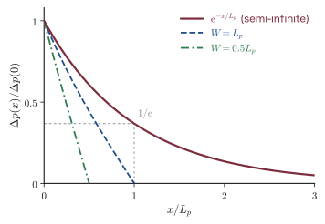
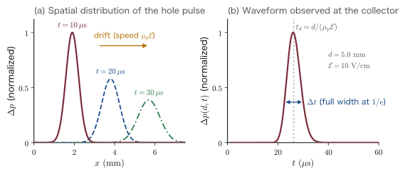
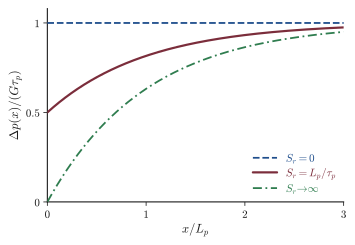
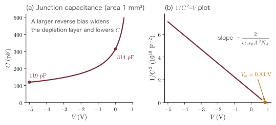
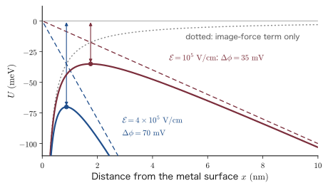
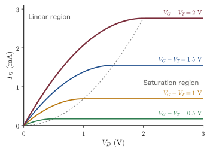
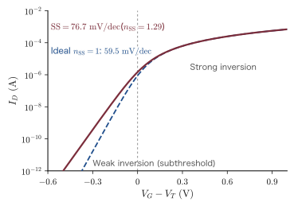
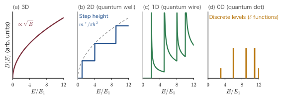

Chapter 24Physics of Semiconductor Interfaces — p-n Junctions, Heterojunctions, Schottky Junctions, and MIS Structures
A single smartphone contains tens of billions of transistors. LED bulbs, solar cells, the lasers of optical communication, and the transistors themselves all work, at their core, at the “boundary” between two kinds of material. We join p-type and n-type semiconductors, stack two semiconductors of different composition layer by layer of atoms, place a metal on a semiconductor, or face a metal and a semiconductor across a thin insulator—and once such an interface is made, electrons flow from the side with the higher Fermi level to the side with the lower one. What remains is a layer of immobile ionized impurities (the depletion layer), together with the electric field and the potential step that it creates. This potential step is the foundation of rectification, amplification, light emission, and photodetection. This chapter deals with the physics of this “boundary.”
In Chapter 17 we learned about donors and acceptors and the law of mass action $np=n_i^2$, and in Section 17.9.3 we derived the built-in potential of a p-n junction, $V_{bi}=(k_BT/e)\ln(N_AN_D/n_i^2)$, in a simple way. In Chapters 21–23 we studied the current that flows in a uniform semiconductor when carriers are pulled by an electric field (drift), its scattering, and the behavior at high electric fields. In this chapter we first examine diffusion, which appears in a semiconductor whose carrier density varies from place to place, and how long minority carriers injected from outside by light or by a junction survive and how far they travel (Section 24.1). This is the heart of Shockley's ideal diode equation (Section 24.2), and it is the very operating principle of solar cells, LEDs, and bipolar transistors.
After that, we repeat the same procedure for each type of interface: draw the band diagram → find the charge, electric field, and potential from the Poisson equation → derive the current equation → insert numbers for Si and GaAs → look at real devices. The Poisson equation is Gauss's law, which states that charge creates an electric field, written in differential form. The topics are the p-n junction (Section 24.2); heterojunctions, the high-electron-mobility transistor (HEMT), and the heterojunction bipolar transistor (HBT) (Section 24.3); surface states and how to measure them (Section 24.4); the Schottky barrier and ohmic contacts at metal–semiconductor interfaces (Section 24.5); and the MOS structure and the MOSFET (Section 24.6). From electromagnetism we mainly use Gauss's law and the Poisson equation, and from statistical mechanics mainly the Boltzmann factor $\ee^{-E/k_BT}$ and the notion of the Fermi level (the mathematics we use is collected in the “Prerequisites” below). The final Section 24.7 treats the “two-dimensional electron system,” in which the motion of electrons pressed against an interface is quantized, and serves as a gateway to the quantum Hall effect (Chapter 21) and to quantum wires and quantum dots. In Chapter 33 we shine light on the p-n junction of this chapter and study optical absorption and the photovoltaic effect (solar cells and photodetectors).
After reading this chapter, you will be able to calculate the following by yourself, for example: the thickness and capacitance of the depletion layer of a Si diode; the difference between the forward voltage needed to pass 1 mA (about $0.63\,\mathrm{V}$) and the forward voltage of a Schottky diode (about $0.30\,\mathrm{V}$); why the reverse current “doubles every 10 °C”; the threshold voltage and drain current of a MOSFET; why a change of the gate voltage of $60\,\mathrm{mV}$ or less cannot make a transistor change its current tenfold; and the fact that the quantum levels of electrons in a Si inversion layer are $\sim40\,\mathrm{meV}$.
This chapter is long. On a first reading, read in the following order: Sections 24.1.1–24.1.5 (diffusion of minority carriers) → Sections 24.2.1–24.2.6 (the p-n junction and the ideal diode equation) → Sections 24.3.1–24.3.4 (heterojunctions and the HEMT) → Sections 24.5.1–24.5.6 (Schottky contacts) → Sections 24.6.1–24.6.4 and 24.6.8 (the MOS structure and the MOSFET) → Sections 24.7.1, 24.7.2, and 24.7.5 (two-dimensional electrons); the remaining subsections (for example, Sections 24.2.7–24.2.11, the Supplement in Section 24.3.5, the $F$ function in Section 24.6.3, and Sections 24.7.3–24.7.4) are best read the second time through. The “Notation” box at the beginning of the chapter collects the pronunciation of the Greek letters and the symbols that are used with two or more meanings in this chapter.
- Drift current and diffusion current, the Einstein relation $D=\mu k_BT/e$, the continuity equation and the diffusion equation for minority carriers, the lifetime $\tau$, and the diffusion length $L=\sqrt{D\tau}$
- How to determine the mobility, diffusion coefficient, and lifetime from the solution of the Haynes–Shockley experiment (a Gaussian pulse that spreads while drifting), the surface recombination velocity $S_r$, and the quasi-Fermi levels $np=n_i^2\ee^{(E_{Fn}-E_{Fp})/k_BT}$
- Deriving everything—the built-in potential, depletion-layer width, maximum electric field, potential distribution, and junction capacitance of a p-n junction—from the Poisson equation in the depletion approximation, and how to read a $1/C^2$–$V$ plot
- The complete derivation of Shockley's ideal diode equation $J=J_s(\ee^{eV/k_BT}-1)$, the generation and recombination current in the depletion layer (ideality factor 2), diffusion capacitance, the short diode, storage time, and graded junctions
- The band alignments of heterojunctions (types I, II, and III), Anderson's electron-affinity rule and its limits, spikes and notches, modulation doping and the two-dimensional electron gas (HEMT), the critical thickness, and the HBT injection ratio $J_n/J_p\propto\ee^{\Delta E_g/k_BT}$ (for a graded junction)
- The origin of surface states (Tamm and Shockley), the exact solution for the surface state of a semi-infinite tight-binding chain, surface band bending and Fermi-level pinning, and the work function, electron affinity, and ionization energy
- The Schottky–Mott rule and the Bardeen limit, the thermionic-emission theory $J=A^*T^2\ee^{-e\phi_B/k_BT}(\ee^{eV/k_BT}-1)$ and the Richardson constant, image-force barrier lowering, and the tunneling mechanism of ohmic contacts
- Accumulation, depletion, and inversion in the MIS structure, the complete solution $Q_s(\psi_s)$ of the Poisson equation, the threshold voltage, C–V characteristics, the gradual-channel approximation for the MOSFET, and the limit of the subthreshold slope, $60\,\mathrm{mV/dec}$
- Quantization in a triangular potential (the Airy function, the WKB approximation, and the Fang–Howard variational function), the two-dimensional density of states and quantum capacitance, and the subbands of a Si(100) inversion layer
24.1 Diffusion and Recombination of Minority Carriers
Notation: Symbols used in this chapter and how to read them
Many quantities appear in this chapter, so the same letter is sometimes used with different meanings. We collect the easily confused ones here (please come back to this list if you get lost as you read).
- Reading of Greek letters: $\alpha$ (alpha), $\beta$ (beta), $\gamma$ (gamma), $\delta$ and $\Delta$ (delta), $\epsilon$ and $\varepsilon$ (epsilon), $\zeta$ (zeta), $\eta$ (eta), $\kappa$ (kappa), $\lambda$ (lambda), $\mu$ (mu), $\nu$ (nu), $\xi$ (xi), $\pi$ (pi), $\rho$ (rho), $\sigma$ (sigma), $\tau$ (tau), $\phi$ and $\varphi$ (phi), $\chi$ (chi), $\psi$ (psi), $\omega$ (omega). $\nabla$ is read “nabla,” and the $\partial$ of partial differentiation is read “round d.”
- Energy is written $E$, and the magnitude and components of the electric field are written $\mathcal{E}$ (script E) to distinguish them (the electric-field vector is $\EE$). $E_c$, $E_v$, $E_F$, $E_i$ are the bottom of the conduction band, the top of the valence band, the Fermi level, and the intrinsic level, and the quasi-Fermi levels are $E_{Fn}$, $E_{Fp}$ (Section 24.1.8). The $\epsilon_\kk$ of Chapter 17 is written $E(\kk)$ in this part.
- Permittivity: $\epsilon_0$ is the permittivity of vacuum (SI units), $\epsilon_s$ is the static relative permittivity of the semiconductor (11.7 for Si), and in calculations we sometimes abbreviate $\epsilon\equiv\epsilon_s\epsilon_0$. $\epsilon_{ox}$ and $\epsilon_i$ are the relative permittivities of the oxide film and the interface layer. The energy of an atomic orbital in Section 24.4.3 is denoted by $\varepsilon_a$, in a different typeface (distinct from $\epsilon_0$).
- $\mu$ is used only for the mobility ($\mu_n$, $\mu_p$). The chemical potential is denoted by the Fermi level $E_F$. $\sigma$ is the electrical conductivity, and the capture cross section is written $\sigma_c$. $\tau_n$ and $\tau_p$ are the minority-carrier lifetimes, $\tau_m$ is the momentum relaxation time, $\tau_d$ is the dielectric relaxation time, and $\tau_0$ is the lifetime of recombination inside the depletion layer.
- $S$ is distinguished in three ways: the surface recombination velocity $S_r$ (Section 24.1.7), the pinning factor $S_p$ of the metal–semiconductor interface (Section 24.5.3), and the subthreshold slope $\mathrm{SS}$ of the MOSFET (Section 24.6.9).
- Capacitance: the junction capacitance (the capacitance of the depletion layer) $C_j$ of the p-n junction, the diffusion capacitance $C_{\mathrm{diff}}$ (Section 24.2.8), the depletion-layer capacitance $C_{\mathrm{dep}}$ of the MOS structure, the oxide capacitance $C_{ox}$, the semiconductor capacitance $C_s$, the interface-state capacitance $C_{it}$, and the quantum capacitance $C_q$.
- $m$ is used only for the free-electron mass ($m^*$ is the effective mass, and $m_l$, $m_t$, $m_z$ are the valley masses). The ideality factor of the diode is written $\eta$ (Section 24.2.7), and the subthreshold coefficient of the MOSFET is written $n_{\mathrm{SS}}$ (Section 24.6.9). Both are often written $n$ in the literature.
- Density: $n$ and $p$ are the volume densities of electrons and holes ($\mathrm{cm^{-3}}$), and $n_s$ is the areal density of two-dimensional electrons ($\mathrm{cm^{-2}}$). The volume density at the surface is written $n(0)$. A pair of subscripts such as $p_{n0}$ means “the left one is the type of the region, and the 0 on the right is thermal equilibrium” ($p_{n0}$ is the thermal-equilibrium density of holes in the n-type region, and $n_{p0}$ is the thermal-equilibrium density of electrons in the p-type region).
- Electric potential and potential energy: $V$ is the voltage (forward direction positive), $V_{bi}$ is the built-in potential, $V_s$ is the surface band bending, and $\phi$ is the electric potential, so that $e\phi_s$ and $e\phi_m$ are the work functions of the semiconductor and the metal and $e\phi_B$ is the barrier height. The potential energy of an electron is written $U$ (the image force in Section 24.5.7, the triangular potential $U(z)$ in Section 24.7). However, the $U$ in Section 24.1 and Section 24.2.7 is the net recombination rate. The $\psi$ in Section 24.6 is the change of the electric potential from the surface (the surface potential $\psi_s$), and is distinct from the wave function $\psi$ in Section 24.4. The wave function in Section 24.7 is $\varphi(z)$.
- $\delta$: $\delta(x)$ is the Dirac delta function, and the $\delta$ in Section 24.4.3 is the shift of the orbital energy of a surface atom. The thickness of the interface layer in Section 24.5.3 is written $d_i$. $\Delta$ is used for a “small width or change” ($\Delta x$, $\Delta t$) and for a “deviation from thermal equilibrium” ($\Delta n$, $\Delta p$); only the $\Delta$ in Section 24.5.3 is the voltage applied across the interface layer.
- Density of states: $D_n$ and $D_p$ are diffusion coefficients. $D_{ss}$ is the areal density per unit energy of states at a surface (including the interface with a metal), and $D_{it}$ is that of states at the Si/SiO₂ interface. $D_{2D}$ is the two-dimensional density of states. The charge-neutrality level in Section 24.4.7 is $E_{\mathrm{CN}}$, and the bottom of the lowest subband in Section 24.7 is $E_0$.
- Mobility of Si: in the calculations of this chapter we use $\mu_n=1400$ and $\mu_p=450\,\mathrm{cm^2/(V\,s)}$ (in Table 17.10 of Chapter 17 the values are 1350/480; the values vary among sources in the literature).
- Other letters distinguished by context: $W$, $L$ (width of the depletion layer and diffusion length / width and length of the MOSFET channel from Section 24.6.8 onward), $\alpha$ (angle of the dislocation in Section 24.3.5 / strength of the effect of interface states in Section 24.5.3), $\gamma$ (injection efficiency / body-effect coefficient in Exercise 24.5), $\kappa$ (decay constant of tunneling / scaling factor in Section 24.6.10), $\lambda$ (localization length and de Broglie wavelength / angle in Section 24.3.5), $\nu$ (Poisson's ratio / filling factor of Landau levels), $b$ (Burgers vector / variational parameter of Fang–Howard), $h$ (Planck constant / film thickness $h$, $h_c$ in Section 24.3.5), $t$ (time / hopping integral in Section 24.4.3), $a$ (lattice constant / concentration gradient in Section 24.2.11 / zero $a_n$ of the Airy function), $N_B$ (concentration on the lightly doped side in Section 24.2.4 / base concentration in Section 24.3.6), $F$ (particle flux / the $F$ function in Section 24.6.3), $I$ (current / ionization energy in Section 24.4.8), and $Q_M$ (charge of the metal in Section 24.5.3) versus $Q_m$ (charge of the mobile ions in Section 24.6.6). The tunneling probability is written $\mathcal{T}$ to distinguish it from the temperature $T$, and the mean kinetic energy is written $\langle K\rangle$.
24.1.1 Majority carriers and minority carriers — What is injection?
In Chapter 17 we learned that in an n-type semiconductor electrons are the majority carriers and holes are the minority carriers. In numbers, the degree of this “minority” is extreme. If we introduce donors at $N_D=10^{16}\,\mathrm{cm^{-3}}$ into Si at room temperature, the electron density is $n_0=10^{16}\,\mathrm{cm^{-3}}$, and the hole density follows from the law of mass action $n_0p_0=n_i^2$ (Chapter 17, Section 17.5):
$$ p_0=\frac{n_i^2}{n_0}=\frac{(1.0\times10^{10}\,\mathrm{cm^{-3}})^2}{10^{16}\,\mathrm{cm^{-3}}}=1.0\times10^{4}\,\mathrm{cm^{-3}} $$(the subscript 0 denotes the thermal-equilibrium value). The numbers of electrons and holes differ by twelve orders of magnitude.
Now shine light on the sample and create an extra $\Delta n=\Delta p=10^{12}\,\mathrm{cm^{-3}}$ of electron–hole pairs. The electrons increase from $10^{16}$ to $1.0001\times10^{16}$, a mere $0.01\,\%$. The holes, however, go from $10^{4}$ to $10^{12}$, a hundred-million-fold increase. Whether by light or by a current passed through a junction, when extra carriers are introduced from outside, the majority carriers hardly change while the minority carriers change by many orders of magnitude. Much of the operation of semiconductor devices is determined by this change in the minority carriers.
Definition: Excess carriers, injection, and low-level injection
The deviations from the thermal-equilibrium values, $\Delta n\equiv n-n_0$ and $\Delta p\equiv p-p_0$, are called the excess carrier densities. Creating excess carriers by light or by current is called injection. In an n-type semiconductor, when $\Delta p\ll n_0$ (in a p-type semiconductor, when $\Delta n\ll p_0$), that is, when the excess carriers are far fewer than the majority carriers, this is called low-level injection. In this chapter we assume low-level injection unless stated otherwise.
Why? Why may we set $\Delta n=\Delta p$? — The dielectric relaxation time
To state the conclusion first, even if extra charge appears at some place, the surrounding majority carriers gather at once and cancel it, so that in the neutral region (the region outside the depletion layer, where the charge is nearly neutral and the majority carriers can move freely; Section 24.2.1) $\Delta n\simeq\Delta p$ is maintained. Let us estimate how short “at once” is.
We first explain the symbols to be used. $\rho$ (rho) is the charge density (the charge per unit volume, in units of $\mathrm{C/m^3}$), $\sigma$ (sigma) is the electrical conductivity (in units of $\mathrm{S/m}$), $\epsilon_s$ (epsilon s) is the static relative permittivity of the semiconductor (11.7 for Si), and $\epsilon_0=8.854\times10^{-12}\,\mathrm{F/m}$ is the permittivity of vacuum. The $\partial$ (“round d”) in $\partial\rho/\partial t$ is the symbol of partial differentiation, and means differentiating with respect to time alone while holding the position fixed (University Mathematics, Chapter 6, Section 6.2). $\nabla\cdot\EE$ (nabla dot E) is the divergence of the electric field, and expresses how many electric field lines emanate from that point (University Mathematics, Chapter 19, Section 19.2; in one dimension it is the same as $\dd\mathcal{E}/\dd x$).
If only excess holes gather at a place, that place becomes positively charged. How fast does this charge disappear? Combining Gauss's law $\nabla\cdot\EE=\rho/(\epsilon_s\epsilon_0)$, the charge conservation law $\partial\rho/\partial t=-\nabla\cdot\jj$ (the rate at which the charge decreases equals the current flowing out of that place), and Ohm's law $\jj=\sigma\EE$, we obtain
$$ \frac{\partial\rho}{\partial t}=-\nabla\cdot(\sigma\EE)=-\sigma\,\nabla\cdot\EE=-\frac{\sigma}{\epsilon_s\epsilon_0}\,\rho $$and the solution is $\rho(t)=\rho(0)\,\ee^{-t/\tau_d}$, $\tau_d\equiv\epsilon_s\epsilon_0/\sigma$. $\tau_d$ (tau d) is called the dielectric relaxation time. For Si with $N_D=10^{16}\,\mathrm{cm^{-3}}$, taking the electron mobility $\mu_n$ (mu n) $=1400\,\mathrm{cm^2/(V\,s)}=0.14\,\mathrm{m^2/(V\,s)}$ (in this chapter we use $\mu_n=1400$ and $\mu_p=450\,\mathrm{cm^2/(V\,s)}$ for the mobility of Si; in Table 17.10 of Chapter 17 the values are 1350/480; the values vary among sources in the literature),
$$ \sigma=n_0e\mu_n=(10^{22}\,\mathrm{m^{-3}})(1.602\times10^{-19}\,\mathrm{C})(0.14\,\mathrm{m^2/(V\,s)})=224\,\mathrm{S/m} $$so that
$$ \tau_d=\frac{11.7\times8.854\times10^{-12}\,\mathrm{F/m}}{224\,\mathrm{S/m}}=4.6\times10^{-13}\,\mathrm{s}=0.46\,\mathrm{ps} $$∎ This is shorter by more than six orders of magnitude than the minority-carrier lifetime (of the order of $\mu\mathrm{s}$, as we shall see later). As soon as extra positive charge appears, the majority-carrier electrons gather and cancel it, so $\Delta n\simeq\Delta p$ always holds in the neutral region.
24.1.2 Drift current and diffusion current
If we drop a single drop of ink into still water, the ink spreads even though no one pushes it. When molecules move about randomly, more particles go from crowded places to empty places than in the opposite direction. This phenomenon is called diffusion. The carriers in a semiconductor also move randomly by thermal motion, so if the density has a gradient, a flow of particles arises even without an electric field.
Derivation: Fick's law — How a flow arises from random motion
To keep things simple, consider one dimension, and suppose that a carrier moves with speed $v$ in the $+x$ or $-x$ direction with equal probability, and that, on average, each time it travels a distance $\ell$ (the mean free path) it is scattered and its direction changes randomly. A carrier crossing the plane at position $x$ from left to right had its last scattering at a distance of about $\ell$ to the left of the plane, so, taking “half of the carriers there move to the right,” their number (per unit time and unit area) is $\tfrac12n(x-\ell)v$. Similarly, the number crossing from right to left is $\tfrac12n(x+\ell)v$. The net particle current (the flux) $F$ is
$$ F=\frac{v}{2}\Bigl[n(x-\ell)-n(x+\ell)\Bigr] $$Since $\ell$ is short compared with the length over which the density changes, we keep the Taylor expansion to first order ($f(x+h)\simeq f(x)+h\,\dd f/\dd x$) and substitute $n(x\mp\ell)\simeq n(x)\mp\ell\,\dfrac{\dd n}{\dd x}$, which gives
$$ F=\frac{v}{2}\left[\left(n-\ell\frac{\dd n}{\dd x}\right)-\left(n+\ell\frac{\dd n}{\dd x}\right)\right]=\frac{v}{2}\left(-2\ell\frac{\dd n}{\dd x}\right)=-v\ell\,\frac{\dd n}{\dd x} $$Writing the proportionality coefficient as $D$,
$$ F=-D\,\frac{\dd n}{\dd x} $$∎ This is Fick's law, and $D$ (in units of $\mathrm{cm^2/s}$) is called the diffusion coefficient. In this simple model $D=v\ell$. If we let $\tau_m$ (the momentum relaxation time) be the mean time from one scattering to the next, then $\ell=v\tau_m$, so we can write $D=v^2\tau_m$. If we average correctly over the spread in the direction and magnitude of the velocity, $v^2$ is replaced by the mean square of the velocity in the $x$ direction, $\langle v_x^2\rangle$, and $D=\langle v_x^2\rangle\tau_m$ (Brownian motion in Introduction to Linear Response Theory, Chapter 8, Section 8.6). In thermal equilibrium, the mean kinetic energy for one direction of motion is $\tfrac12k_BT$ (the equipartition theorem). That is, $\tfrac12m^*\langle v_x^2\rangle=\tfrac12k_BT$, so $D=k_BT\tau_m/m^*$.
Let us insert numbers. For electrons in Si (conductivity effective mass $m^*=m_{ce}=0.26m$, Chapter 17, Section 17.3), $\sqrt{\langle v_x^2\rangle}=\sqrt{k_BT/m^*}=1.3\times10^{5}\,\mathrm{m/s}$, and from the mobility $\mu_n=e\tau_m/m^*=1400\,\mathrm{cm^2/(V\,s)}$ we get $\tau_m=\mu_nm^*/e=0.21\,\mathrm{ps}$, so $D_n=\langle v_x^2\rangle\tau_m$ becomes $3.6\times10^{-3}\,\mathrm{m^2/s}=36\,\mathrm{cm^2/s}$. Although the electron runs around at a speed of about $10^{5}\,\mathrm{m}$ per second, it changes direction every $0.2\,\mathrm{ps}$, so the net distance it advances is only about $\sqrt{Dt}$ ($60\,\mu\mathrm{m}$ for $t=1\,\mu\mathrm{s}$).
The current is the product of the charge and the particle flux. Paying attention to the signs, we write it for electrons and holes separately ($e\gt0$, and the charge of the electron is $-e$; Figure 24.1).
- Electron drift: Electrons move opposite to the electric field with velocity $-\mu_n\mathcal{E}$ ($\mu_n$ is the mobility, Chapter 17, Section 17.8; $\mathcal{E}$ is the script E, the $x$ component of the electric field). The particle flux is $-n\mu_n\mathcal{E}$, and the current density is $(-e)(-n\mu_n\mathcal{E})=en\mu_n\mathcal{E}$.
- Electron diffusion: The particle flux is $-D_n\,\dd n/\dd x$, and the current density is $(-e)(-D_n\,\dd n/\dd x)=+eD_n\,\dd n/\dd x$.
- Hole drift: Holes move along the electric field with velocity $+\mu_p\mathcal{E}$, so the current density is $(+e)(p\mu_p\mathcal{E})=ep\mu_p\mathcal{E}$.
- Hole diffusion: The particle flux is $-D_p\,\dd p/\dd x$, and the current density is $(+e)(-D_p\,\dd p/\dd x)=-eD_p\,\dd p/\dd x$.
In summary, we obtain the drift–diffusion equation, the starting point for the analysis of semiconductor devices:
In three dimensions, $\jj_n=en\mu_n\EE+eD_n\nabla n$ and $\jj_p=ep\mu_p\EE-eD_p\nabla p$.
Caution: The electron diffusion current flows “toward higher density”
Electrons diffuse toward lower density, but because their charge is negative, the direction of the current is toward higher density (the $+x$ direction if $\dd n/\dd x\gt0$). This is why the electron diffusion term in Eq. \eqref{eq:24-currents} has a $+$ sign and the hole diffusion term a $-$ sign. If you get the signs wrong, the current of the p-n junction will later come out reversed.
24.1.3 The Einstein relation
Both drift and diffusion arise because carriers undergo scattering while in thermal motion. Therefore the mobility $\mu$ and the diffusion coefficient $D$ are not independent. Taking the ratio of the results of the model above, $D=k_BT\tau_m/m^*$ and $\mu=e\tau_m/m^*$, gives $D/\mu=k_BT/e$. This relation was derived in general form, as a relation between fluctuation and response, in Chapter 21, Section 21.7. Here we confirm it by a different method, using only the fact that no current flows in thermal equilibrium.
Derivation: $D=\mu k_BT/e$ from the absence of current in thermal equilibrium
Consider an n-type semiconductor in which the donor concentration varies with position. In thermal equilibrium the Fermi level $E_F$ is constant throughout the whole sample. Because the electron density differs from place to place, diffusion occurs, the charge is slightly displaced, and an electric potential $\phi(x)$ arises. The potential energy of an electron is $-e\phi$ ($\phi$ is phi), so the bottom of the conduction band varies with position as $E_c(x)=E_{c0}-e\phi(x)$. In the Boltzmann approximation (Chapter 17, Section 17.5), using the effective density of states $N_c$ of the conduction band (the density obtained by regarding the states of the conduction band as concentrated at the energy of the bottom; Chapter 17, Section 17.5), we have
$$ n(x)=N_c\exp\!\left[-\frac{E_c(x)-E_F}{k_BT}\right] $$Differentiate this with respect to $x$. Since $N_c$ and $E_F$ are constants, the chain rule gives
$$ \frac{\dd n}{\dd x}=n(x)\cdot\left(-\frac{1}{k_BT}\frac{\dd E_c}{\dd x}\right)=n\cdot\frac{e}{k_BT}\frac{\dd\phi}{\dd x}=-\frac{e}{k_BT}\,n\,\mathcal{E} $$(In the last step we used $\mathcal{E}=-\dd\phi/\dd x$.) In thermal equilibrium the electron current is zero, so substituting into Eq. \eqref{eq:24-currents} gives
$$ 0=en\mu_n\mathcal{E}+eD_n\left(-\frac{e}{k_BT}n\mathcal{E}\right)=en\mathcal{E}\left(\mu_n-\frac{eD_n}{k_BT}\right) $$Since $n\mathcal{E}\ne0$, the quantity in parentheses must vanish. The same calculation can be done for holes.
∎ The balance between the flow due to drift and the flow due to diffusion is the condition for consistency with the Boltzmann distribution in thermal equilibrium.
Table 24.1 summarizes the room-temperature mobilities of the main semiconductors and the diffusion coefficients obtained from Eq. \eqref{eq:24-einstein}.
| Material | $\mu_n$ ($\mathrm{cm^2/(V\,s)}$) | $D_n$ ($\mathrm{cm^2/s}$) | $\mu_p$ ($\mathrm{cm^2/(V\,s)}$) | $D_p$ ($\mathrm{cm^2/s}$) |
|---|---|---|---|---|
| Si | 1400 | 36 | 450 | 12 |
| Ge | 3900 | 101 | 1900 | 49 |
| GaAs | 8500 | 220 | 400 | 10 |
24.1.4 The continuity equation — Balance of particle numbers
The number of holes in a small box changes through the difference between the number flowing into the box and the number flowing out of it, and through the difference between the number created in the box and the number that disappears. Writing this idea, which is the same as keeping a ledger of money coming in and going out, as an equation gives the continuity equation (Figure 24.2).
Derivation: From the balance of particle numbers to the continuity equation
Consider a thin slab of cross-sectional area $A$ lying between positions $x$ and $x+\Delta x$ (Figure 24.2. Here $\Delta x$ and $\Delta t$ are a small width and a small time, distinct from the deviation $\Delta p$ from thermal equilibrium). The number of holes in the slab is $p\,A\,\Delta x$. The particle flux of holes is $J_p/e$, the current density divided by the charge $+e$. During a time $\Delta t$:
- Holes entering through the left face $x$: $\dfrac{J_p(x)}{e}A\,\Delta t$
- Holes leaving through the right face $x+\Delta x$: $\dfrac{J_p(x+\Delta x)}{e}A\,\Delta t$
- Holes generated in the slab: $G\,A\,\Delta x\,\Delta t$ ($G$ is the generation rate per unit volume and unit time)
- Holes lost by recombination in the slab: $R\,A\,\Delta x\,\Delta t$ ($R$ is the recombination rate)
Taking the balance, the change in the number of holes in the slab during the time $\Delta t$ is
$$ \bigl[p(x,t+\Delta t)-p(x,t)\bigr]A\,\Delta x=\frac{J_p(x)-J_p(x+\Delta x)}{e}\,A\,\Delta t+(G-R)\,A\,\Delta x\,\Delta t $$Divide both sides by $A\,\Delta x\,\Delta t$ and take the limit $\Delta x,\Delta t\to0$. The left-hand side becomes $[p(x,t+\Delta t)-p(x,t)]/\Delta t\to\partial p/\partial t$, and using $[J_p(x+\Delta x)-J_p(x)]/\Delta x\to\partial J_p/\partial x$ for the first term on the right-hand side, we obtain
$$ \frac{\partial p}{\partial t}=-\frac{1}{e}\frac{\partial J_p}{\partial x}+G-R $$The particle flux of electrons is $-J_n/e$, the current density divided by the charge $-e$, so the same calculation applies with only a change of sign.
∎ Taking the difference of the two equations and multiplying by $e$ gives $\partial[e(p-n)]/\partial t=-\partial(J_n+J_p)/\partial x$, which returns us to the conservation law of charge (the continuity equation in Introductory University Physics, Chapter 37, Section 37.2). Generation and recombination create and annihilate electrons and holes in pairs, so they do not appear in the charge balance.
Next we consider the recombination rate $R$. In thermal equilibrium, thermal generation $G_{th}$ and recombination $R_{th}$ balance ($G_{th}=R_{th}$). If there are excess minority carriers, recombination exceeds this, and the net recombination rate $U\equiv R-G_{th}$ is proportional to the excess carrier density.
Definition: Minority-carrier lifetime
Under low-level injection, the net recombination rate is proportional to the excess minority-carrier density. The reciprocal of the proportionality coefficient is called the minority-carrier lifetime; it is written $\tau_p$ for holes in an n-type semiconductor and $\tau_n$ for electrons in a p-type semiconductor:
$$ U=R-G_{th}=\frac{\Delta p}{\tau_p}\quad(\text{n-type}),\qquad U=\frac{\Delta n}{\tau_n}\quad(\text{p-type}) $$The meaning is simple: the probability that one excess hole recombines and disappears during a time $\dd t$ is $\dd t/\tau_p$.
Substitute $J_p$ of Eq. \eqref{eq:24-currents} into the hole equation of Eq. \eqref{eq:24-cont}. In an n-type neutral region the electric field $\mathcal{E}$ is uniform ($\partial\mathcal{E}/\partial x\simeq0$); if $p_0$ is also uniform, then $\partial J_p/\partial x=e\mu_p\mathcal{E}\,\partial p/\partial x-eD_p\,\partial^2p/\partial x^2$, and since the derivatives of $p=p_0+\Delta p$ equal those of $\Delta p$, writing $G_L$ for the generation by light from outside, we obtain
This is called the minority-carrier diffusion equation. The terms on the right-hand side represent, in order, “spreading by diffusion,” “being swept along by drift,” “disappearing by recombination,” and “being created by light.” For electrons in a p-type semiconductor, it suffices to replace $\mu_p\mathcal{E}\to-\mu_n\mathcal{E}$ (electrons are swept in the direction opposite to the electric field), $D_p\to D_n$, and $\tau_p\to\tau_n$.
Supplement: Why only the minority-carrier $D$ and $\mu$ appear — ambipolar transport
Excess electrons and holes move as a pair. If one species diffused ahead, the charges would separate and an internal electric field would arise, which brings the two to the same speed. The effective diffusion coefficient in this case (the ambipolar diffusion coefficient) is $D^*=(n+p)D_nD_p/(nD_n+pD_p)$, and for low-level injection in an n-type semiconductor ($n\gg p$) it becomes $D^*\simeq D_p$. The values for the minority carriers determine the motion of the whole, while the majority carriers merely follow within the dielectric relaxation time and keep the region neutral.
24.1.5 Minority-carrier lifetime and diffusion length
Suppose a uniform sample is illuminated with a light pulse and the light is then turned off. Afterward $G_L=0$ and there are no spatial derivatives, so Eq. \eqref{eq:24-mcde} becomes $\dd\Delta p/\dd t=-\Delta p/\tau_p$, and $\Delta p(t)=\Delta p(0)\ee^{-t/\tau_p}$ decays exponentially. Measuring the decay of the photoconductivity therefore gives $\tau_p$. The lifetime varies by many orders of magnitude with the purity and perfection of the crystal: it exceeds $1\,\mathrm{ms}$ in high-purity Si crystals, is $1$–$100\,\mu\mathrm{s}$ in ordinary device-grade Si, and is about $10\,\mathrm{ns}$ in direct-transition GaAs (for the recombination mechanisms, see Section 24.1.9 and Section 25.1 of Chapter 25).
Now, if we keep injecting minority carriers from one point on the surface, how far will the carriers reach?
Derivation: Steady-state injection solution $\Delta p(x)=\Delta p(0)\,\ee^{-x/L_p}$
Setup. Consider a semi-infinite n-type semiconductor occupying $x\ge0$. At its surface $x=0$ the excess hole density is held at a constant value $\Delta p(0)$ (for example, by injection from a p-n junction; Section 24.2). Assume there is no electric field and no photogeneration inside ($\mathcal{E}=0$, $G_L=0$), and consider the steady state, which does not change with time.
Differential equation. Setting $\partial/\partial t=0$ in Eq. \eqref{eq:24-mcde} gives
$$ 0=D_p\frac{\dd^2\Delta p}{\dd x^2}-\frac{\Delta p}{\tau_p} \quad\Longrightarrow\quad \frac{\dd^2\Delta p}{\dd x^2}=\frac{\Delta p}{L_p^2},\qquad L_p\equiv\sqrt{D_p\tau_p} $$General solution. This is a second-order linear differential equation with constant coefficients, so we try $\Delta p=\ee^{\lambda x}$ ($\lambda$ is a constant). Substituting gives $\lambda^2\ee^{\lambda x}=\ee^{\lambda x}/L_p^2$, that is, $\lambda=\pm1/L_p$, so the general solution is
$$ \Delta p(x)=A\,\ee^{-x/L_p}+B\,\ee^{+x/L_p} $$Boundary conditions. For $\Delta p$ to remain finite as $x\to\infty$ we need $B=0$. Since the value at $x=0$ is $\Delta p(0)$, $A=\Delta p(0)$. Therefore
∎ $L_p$ is called the diffusion length of holes. For electrons in a p-type semiconductor, $L_n=\sqrt{D_n\tau_n}$.
Physical Meaning: The diffusion length is the distance traveled during one’s lifetime
(i) $\Delta p$ falls to $1/\ee$ at $x=L_p$. The mean depth reached by a hole between entering from the surface and recombining is, from $\int_0^\infty x\,\ee^{-x/L_p}\dd x=L_p^2$ and $\int_0^\infty\ee^{-x/L_p}\dd x=L_p$, $\langle x\rangle=L_p^2/L_p=L_p$.
(ii) The diffusion current at the surface, from Eq. \eqref{eq:24-currents} with $\mathcal{E}=0$, is
$$ J_p(0)=-eD_p\frac{\dd\Delta p}{\dd x}\Big|_{x=0}=\frac{eD_p}{L_p}\Delta p(0)=\frac{e\,[\Delta p(0)L_p]}{\tau_p} $$(we used $D_p/L_p=L_p/\tau_p$). The quantity $\Delta p(0)L_p=\int_0^\infty\Delta p\,\dd x$ is the number of excess holes stored per unit area. That is, in the steady state, the number of holes flowing in balances the number of stored holes that recombine and disappear with lifetime $\tau_p$. This viewpoint will be useful later when we consider the diffusion capacitance (Section 24.2.8) and the storage time (Section 24.2.10).
(iii) If the sample has a finite thickness $W$ and the back surface $x=W$ is an ohmic contact that removes excess carriers instantly ($\Delta p(W)=0$), we impose the two conditions $\Delta p(0)$ and $\Delta p(W)=0$ on the same general solution and obtain
$$ \Delta p(x)=\Delta p(0)\,\frac{\sinh[(W-x)/L_p]}{\sinh(W/L_p)} $$(the $\sinh$ in the numerator vanishes at $x=W$, and at $x=0$ it cancels the denominator to give 1). For $W\ll L_p$, since $\sinh y\simeq y$, this approaches the straight line $\Delta p(0)(1-x/W)$ (Figure 24.3). The “short diode” of Section 24.2.9 is this case.

Example 24.1: Diffusion length in Si and the thickness of a solar cell
(1) Find the diffusion lengths of electrons in a p-type Si substrate ($D_n=36\,\mathrm{cm^2/s}$, $\tau_n=10\,\mu\mathrm{s}$) and of holes in a heavily doped n-type layer ($D_p=12\,\mathrm{cm^2/s}$, $\tau_p=1\,\mu\mathrm{s}$) (for simplicity, use the low-concentration values of Table 24.1 even for the heavily doped layer; in reality the hole mobility decreases with concentration). (2) Find the diffusion length of electrons in GaAs ($D_n=220\,\mathrm{cm^2/s}$ (Table 24.1), $\tau_n=10\,\mathrm{ns}$). (3) The thickness of the substrate of a crystalline Si solar cell is about $150$–$180\,\mu\mathrm{m}$. Discuss how this thickness is related to the result of (1).
Solution. (1) From Eq. \eqref{eq:24-L}, using consistent units of cm and s,
$$ L_n=\sqrt{D_n\tau_n}=\sqrt{(36\,\mathrm{cm^2/s})(10\times10^{-6}\,\mathrm{s})}=\sqrt{3.6\times10^{-4}\,\mathrm{cm^2}}=1.9\times10^{-2}\,\mathrm{cm}=190\,\mu\mathrm{m} $$ $$ L_p=\sqrt{(12\,\mathrm{cm^2/s})(1\times10^{-6}\,\mathrm{s})}=\sqrt{1.2\times10^{-5}\,\mathrm{cm^2}}=3.5\times10^{-3}\,\mathrm{cm}=35\,\mu\mathrm{m} $$(2) In the same way,
$$ L_n=\sqrt{(220\,\mathrm{cm^2/s})(10\times10^{-9}\,\mathrm{s})}=\sqrt{2.2\times10^{-6}\,\mathrm{cm^2}}=1.5\times10^{-3}\,\mathrm{cm}=15\,\mu\mathrm{m} $$(3) In a solar cell, the minority carriers created by light (electrons in a p-type substrate) become current only after they have diffused to the p-n junction near the surface. Si is an indirect-transition semiconductor, and light reaches depths of $100\,\mu\mathrm{m}$ or more (Example 17.1 of Chapter 17), so the diffusion length must be comparable to the substrate thickness or larger, and $L_n=190\,\mu\mathrm{m}$ in (1) just satisfies this condition. Restating this in terms of the time required for diffusion: traveling $150\,\mu\mathrm{m}$ takes $t\sim x^2/D_n$, that is, $(1.5\times10^{-2}\,\mathrm{cm})^2/(36\,\mathrm{cm^2/s})=6.3\,\mu\mathrm{s}$, which is shorter than the lifetime of $10\,\mu\mathrm{s}$. GaAs, on the other hand, is a direct-transition semiconductor and absorbs the light completely within $2$–$3\,\mu\mathrm{m}$, so $L_n=15\,\mu\mathrm{m}$ is sufficient. ∎ The first principle of solar-cell design is “minority-carrier diffusion length > light penetration depth.” This is why the purity (lifetime) of the crystal is strictly controlled in the manufacture of Si solar cells.
24.1.6 The Haynes–Shockley experiment
At the end of 1947 the point-contact transistor was invented at Bell Laboratories, and the following year W. Shockley worked out the theory of the junction transistor. Its operating principle was this: “when holes are injected into an n-type crystal, they survive as minority carriers and move through the crystal.” Is that really so? In 1949, J. R. Haynes and Shockley confirmed it with a beautiful experiment that directly measures the time the injected holes take to travel through the crystal (a detailed report followed in 1951).
As in Figure 24.4, a voltage is applied from a battery to a long, thin bar of n-type Ge to produce a uniform electric field $\mathcal{E}$. Holes are injected as a pulse at time $t=0$ from the emitter (the needle that injects holes) at $x=0$, and the arrival of the holes is observed as a current at the collector (the needle that collects holes), placed a distance $d$ away.
Derivation: Solution of the Haynes–Shockley experiment — a Gaussian that spreads while drifting
Equation. After the injection there is no photogeneration, so we solve Eq. \eqref{eq:24-mcde} with $G_L=0$:
$$ \frac{\partial\Delta p}{\partial t}=D\frac{\partial^2\Delta p}{\partial x^2}-\mu\mathcal{E}\frac{\partial\Delta p}{\partial x}-\frac{\Delta p}{\tau} $$(In this derivation we drop the hole subscript $p$ and write $D,\mu,\tau$.) The initial condition is “$N$ holes per unit area are placed at $x=0$ at $t=0$,” that is, $\Delta p(x,0)=N\delta(x)$ ($\delta$ is the Dirac delta function, Appendix A, A.9).
Step 1: Remove the recombination. Let $\Delta p(x,t)=u(x,t)\,\ee^{-t/\tau}$. By the product rule, the time derivative is $\partial_t\Delta p=(\partial_tu)\ee^{-t/\tau}-(u/\tau)\ee^{-t/\tau}$. On substitution, $-(u/\tau)\ee^{-t/\tau}$ cancels the $-\Delta p/\tau$ on the right-hand side, and dividing both sides by $\ee^{-t/\tau}$ gives
$$ \frac{\partial u}{\partial t}=D\frac{\partial^2u}{\partial x^2}-\mu\mathcal{E}\frac{\partial u}{\partial x} $$Step 2: Remove the drift. Switch to the coordinate $\xi\equiv x-vt$ ($\xi$ is the Greek letter xi) moving at the velocity $v\equiv\mu\mathcal{E}$, and write $u(x,t)=w(\xi,t)$. By the chain rule, $\partial u/\partial x=\partial w/\partial\xi$ and $\partial^2u/\partial x^2=\partial^2w/\partial\xi^2$, and since $\partial\xi/\partial t=-v$,
$$ \frac{\partial u}{\partial t}=\frac{\partial w}{\partial t}+\frac{\partial w}{\partial\xi}\frac{\partial\xi}{\partial t}=\frac{\partial w}{\partial t}-v\frac{\partial w}{\partial\xi} $$On substitution, the terms $-v\,\partial w/\partial\xi$ cancel on the two sides, and
$$ \frac{\partial w}{\partial t}=D\frac{\partial^2w}{\partial\xi^2} $$results. This is none other than the diffusion equation (the heat conduction equation, University Mathematics, Chapter 43, Section 43.3).
Step 3: Solution of the diffusion equation. We check by differentiation that $w(\xi,t)=\dfrac{N}{\sqrt{4\pi Dt}}\exp\!\left(-\dfrac{\xi^2}{4Dt}\right)$ is a solution. Writing $w=Nt^{-1/2}(4\pi D)^{-1/2}\ee^{-\xi^2/4Dt}$, we have
$$ \frac{\partial w}{\partial t}=w\left(-\frac{1}{2t}+\frac{\xi^2}{4Dt^2}\right),\qquad \frac{\partial w}{\partial\xi}=w\left(-\frac{\xi}{2Dt}\right),\qquad \frac{\partial^2w}{\partial\xi^2}=w\left(\frac{\xi^2}{4D^2t^2}-\frac{1}{2Dt}\right) $$(When differentiating the second expression once more with respect to $\xi$, we pick up both the derivative of $w$ and the derivative of $-\xi/2Dt$.) The third expression multiplied by $D$ coincides with the first. Moreover, $\int_{-\infty}^{\infty}w\,\dd\xi=N$ (the Gaussian integral $\int\ee^{-a\xi^2}\dd\xi=\sqrt{\pi/a}$, Appendix A, A.4), so the particle number is conserved, and as $t\to0$ it becomes a peak of zero width, $N\delta(\xi)$, so it also satisfies the initial condition.
Summary. Returning to the original variables, we obtain
∎ The center of the peak moves at the speed $\mu\mathcal{E}$ (drift), its width grows in proportion to $\sqrt{Dt}$ (diffusion), and its area decreases as $N\ee^{-t/\tau}$ (recombination).
Figure 24.5(a) plots Eq. \eqref{eq:24-hs} at three times, and (b) shows the time waveform seen at the collector position $x=d$. Three quantities can be read from the waveform.
- Mobility: the time $t_d$ at which the peak arrives is determined by $d=\mu\mathcal{E}t_d$.
- Diffusion coefficient: at $t\simeq t_d$ the spatial distribution $\exp[-\xi^2/(4Dt_d)]$ falls to $1/\ee$ of the peak at $\xi=\pm2\sqrt{Dt_d}$, so the full width at $1/\ee$ is $4\sqrt{Dt_d}$. The time it takes this peak to pass the collector at the speed $\mu\mathcal{E}$ is the full width of the waveform at $1/\ee$, $\Delta t=4\sqrt{Dt_d}/(\mu\mathcal{E})$ (we assume that the spreading during the passage is small). Solve this for $D$.
- Lifetime: the area of the time waveform seen at the collector, $\int\Delta p(d,t)\,\dd t$, is proportional to $(N/\mu\mathcal{E})\,\ee^{-t_d/\tau}$, the number of holes at that time, $N\ee^{-t_d/\tau}$, divided by the speed $\mu\mathcal{E}$ at which the peak passes the collector (even for the same number of holes, the more slowly they pass, the longer the signal lasts). Therefore, if we keep the electric field constant, change the collector distance $d$ (thereby changing $t_d$), and take the ratio of the areas, we obtain $\tau$. When $t_d$ is changed by changing the electric field, multiply the area by $\mathcal{E}$ before taking the ratio.

Example 24.2: Finding the mobility and diffusion coefficient from the Haynes–Shockley experiment
In a sample of n-type Ge, the distance between the emitter and the collector is $d=0.50\,\mathrm{cm}$ and the electric field is $\mathcal{E}=10\,\mathrm{V/cm}$. The arrival time of the hole pulse is $t_d=26\,\mu\mathrm{s}$, and the full width of the waveform at $1/\ee$ is $\Delta t=7.6\,\mu\mathrm{s}$. (1) Find $\mu_p$ and $D_p$. (2) Compare $D_p/\mu_p$ with $k_BT/e$ (300 K). (3) Keeping the electric field at $10\,\mathrm{V/cm}$, the collector is moved to the position $d=1.00\,\mathrm{cm}$; the arrival time becomes $t_d=52\,\mu\mathrm{s}$ and the area of the waveform becomes $0.30$ times its former value. Find the lifetime $\tau_p$.
Solution. (1) From Eq. \eqref{eq:24-hs-mu},
$$ \mu_p=\frac{d}{\mathcal{E}t_d}=\frac{0.50\,\mathrm{cm}}{(10\,\mathrm{V/cm})(26\times10^{-6}\,\mathrm{s})}=1.9\times10^{3}\,\mathrm{cm^2/(V\,s)} $$ $$ D_p=\frac{d^2(\Delta t)^2}{16\,t_d^3}=\frac{(0.50\,\mathrm{cm})^2(7.6\times10^{-6}\,\mathrm{s})^2}{16\,(26\times10^{-6}\,\mathrm{s})^3} =\frac{1.44\times10^{-11}\,\mathrm{cm^2\,s^2}}{2.81\times10^{-13}\,\mathrm{s^3}}=51\,\mathrm{cm^2/s} $$(2) $D_p/\mu_p=51/1923=0.027\,\mathrm{V}$. This agrees with the room-temperature $k_BT/e=0.026\,\mathrm{V}$ to within about 3%, confirming that the Einstein relation, Eq. \eqref{eq:24-einstein}, also holds for minority carriers.
(3) Since the electric field is the same, the speed $\mu_p\mathcal{E}$ at which the peak passes the collector does not change. Therefore the waveform area $(N/\mu_p\mathcal{E})\,\ee^{-t_d/\tau_p}$ changes only through the factor $\ee^{-t_d/\tau_p}$, and the ratio of the areas is $\ee^{-(52-26)\,\mu\mathrm{s}/\tau_p}=0.30$. Taking the logarithm,
$$ \tau_p=\frac{(52-26)\,\mu\mathrm{s}}{\ln(1/0.30)}=\frac{26\,\mu\mathrm{s}}{1.20}=22\,\mu\mathrm{s} $$∎ A single experiment measures all three of $\mu$, $D$, and $\tau$. A mistake students often make: when the electric field is halved and $t_d$ is doubled, writing the ratio of the areas simply as $\ee^{-26\,\mu\mathrm{s}/\tau_p}$. The peak passes at half the speed, so the area doubles, and the ratio is $2\ee^{-26\,\mu\mathrm{s}/\tau_p}$ (about 0.6 for $\tau_p=22\,\mu\mathrm{s}$). This experiment, which made it visible to the eye that injected holes “run” under the pull of the electric field, established the idea of minority-carrier injection and helped bring about the realization of the junction transistor.
24.1.7 Surface recombination velocity
At the surface of a crystal the atomic bonds are broken, and many electron levels (surface states, Section 24.4) appear within the band gap. These act as “drains” that capture electrons and holes one after another and make them recombine. It is natural to express recombination at a surface as a rate per unit area.
Definition: Surface recombination velocity
When the number $U_s$ of minority carriers that recombine at the surface $x=0$ per unit area and unit time is proportional to the excess density at the surface, the proportionality coefficient $S_r$ is called the surface recombination velocity:
$$ U_s=S_r\,\Delta p(0) $$$S_r$ has the dimension of velocity ($\mathrm{cm/s}$). It can be read as “holes are sucked into the drain at the surface at speed $S_r$.” Let $N_{st}$ be the areal density of surface states, $\sigma_c$ their capture cross section (the area of the target with which a level catches electrons or holes), and $v_{th}\sim10^{7}\,\mathrm{cm/s}$ the thermal velocity; then $S_r\simeq\sigma_cv_{th}N_{st}$.
The holes sucked into the surface must be replenished from the interior by diffusion, so at the surface the boundary condition “diffusive particle flux toward the surface = recombination rate at the surface” holds. When $x\gt0$ is the interior of the sample, the particle flux toward the surface (in the $-x$ direction) is $+D_p\,\dd\Delta p/\dd x$, so
Derivation: Uniform photogeneration and surface recombination
Illuminate a semi-infinite n-type sample ($x\ge0$) uniformly so that holes are created at the generation rate $G$. The steady-state equation \eqref{eq:24-mcde} (with $\mathcal{E}=0$) is $D_p\Delta p''-\Delta p/\tau_p+G=0$. Since $\Delta p=G\tau_p$ (constant) is a particular solution, the general solution is $\Delta p=G\tau_p+A\,\ee^{-x/L_p}$ (we discarded the solution that diverges as $x\to\infty$). Substituting $\Delta p'(0)=-A/L_p$ and $\Delta p(0)=G\tau_p+A$ into the boundary condition \eqref{eq:24-srv} gives
$$ -\frac{D_pA}{L_p}=S_r\,(G\tau_p+A) \quad\Longrightarrow\quad A=-\frac{S_r\,G\tau_p}{S_r+D_p/L_p}=-G\tau_p\frac{S_r\tau_p}{L_p+S_r\tau_p} $$(in the last step we used $D_p/L_p=L_p/\tau_p$ and multiplied the numerator and denominator by $\tau_p$). Therefore
∎ For $S_r=0$ the distribution is uniform, $G\tau_p$; for $S_r\to\infty$ we get $\Delta p(0)=0$ at the surface, and the influence extends into the interior to a depth of about the diffusion length $L_p$ (Figure 24.6). Whether surface recombination matters is determined by the relative size of $S_r$ and the “diffusion velocity” $L_p/\tau_p=D_p/L_p$.

Example 24.3: How effective is surface passivation?
Uniformly illuminate n-type Si ($D_p=12\,\mathrm{cm^2/s}$, $\tau_p=1\,\mu\mathrm{s}$). For a surface recombination velocity of (a) $S_r=10^{4}\,\mathrm{cm/s}$ (an unpassivated surface) and (b) $S_r=10\,\mathrm{cm/s}$ (a surface covered with a good-quality oxide film), what fraction of the interior value $G\tau_p$ is the excess hole density $\Delta p(0)$ at the surface? Also, taking the capture cross section to be $\sigma_c=10^{-15}\,\mathrm{cm^2}$ and $v_{th}=10^{7}\,\mathrm{cm/s}$, estimate the areal density of surface states corresponding to (a) and (b).
Solution. From Example 24.1, $L_p=35\,\mu\mathrm{m}=3.46\times10^{-3}\,\mathrm{cm}$. Setting $x=0$ in Eq. \eqref{eq:24-srv-sol} gives
$$ \frac{\Delta p(0)}{G\tau_p}=1-\frac{S_r\tau_p}{L_p+S_r\tau_p}=\frac{L_p}{L_p+S_r\tau_p} $$(a) Since $S_r\tau_p$ is $(10^{4}\,\mathrm{cm/s})(10^{-6}\,\mathrm{s})=1.0\times10^{-2}\,\mathrm{cm}$,
$$ \frac{\Delta p(0)}{G\tau_p}=\frac{3.46\times10^{-3}}{3.46\times10^{-3}+1.0\times10^{-2}}=0.26 $$(b) Since $S_r\tau_p=1.0\times10^{-5}\,\mathrm{cm}$ is much smaller than $L_p$, $\Delta p(0)/(G\tau_p)=3.46/3.47=0.997$.
From $N_{st}=S_r/(\sigma_cv_{th})$, the surface-state density is (a) $10^{4}/(10^{-15}\times10^{7})=10^{12}\,\mathrm{cm^{-2}}$ and (b) about $10^{9}\,\mathrm{cm^{-2}}$. ∎ With only about one level per 1000 surface atoms (the surface atoms of Si number $\sim7\times10^{14}\,\mathrm{cm^{-2}}$), three-quarters of the minority carriers near the surface are lost. High-efficiency Si solar cells cover the surface with SiO₂, $\mathrm{Al_2O_3}$, or silicon nitride containing hydrogen (passivation) in order to prevent this loss.
24.1.8 Quasi-Fermi levels
In thermal equilibrium a single Fermi level $E_F$ determines the numbers of both electrons and holes, and as a result $np=n_i^2$ holds. When light is shone on the sample or a current flows, $np\ne n_i^2$, and a single $E_F$ can no longer describe both electrons and holes. Even so, we can keep using something like a Fermi level thanks to the following difference in time scales.
- The time for the energy distribution within the conduction band to reach its thermal-equilibrium form through electron–electron and electron–phonon scattering: $\sim0.1$–$1\,\mathrm{ps}$.
- The time for electrons and holes to recombine and for their numbers to return to the thermal-equilibrium values: the lifetime $\tau\sim\mathrm{ns}$–$\mathrm{ms}$.
Therefore the electrons in the conduction band quickly settle into a state in which “the number is in excess, but the shape of the distribution is a Fermi–Dirac distribution at temperature $T$.” The same holds for the holes in the valence band. Describing these two quasi-equilibria by separate Fermi levels gives the quasi-Fermi levels (also called imref).
Definition: Quasi-Fermi levels $E_{Fn}$, $E_{Fp}$
The electron density $n$ and hole density $p$ in a nonequilibrium state are expressed in the thermal-equilibrium formulas with $E_F$ replaced:
$$ \begin{aligned} n&=N_c\exp\!\left(-\frac{E_c-E_{Fn}}{k_BT}\right)=n_i\exp\!\left(\frac{E_{Fn}-E_i}{k_BT}\right),\\ p&=N_v\exp\!\left(-\frac{E_{Fp}-E_v}{k_BT}\right)=n_i\exp\!\left(\frac{E_i-E_{Fp}}{k_BT}\right) \end{aligned} $$$E_{Fn}$ is called the quasi-Fermi level of the electrons and $E_{Fp}$ the quasi-Fermi level of the holes. $E_i$ is the intrinsic level (the Fermi level of the intrinsic semiconductor, almost at the middle of the gap). $N_c$ and $N_v$ are the effective densities of states of the conduction band and the valence band (Section 17.5 of Chapter 17).
The second form is obtained as follows. In an intrinsic semiconductor $n=n_i$ and the Fermi level is $E_i$, so $n_i=N_c\exp[-(E_c-E_i)/k_BT]$. Dividing the expression for $n$ by this gives $n/n_i=\exp[(E_{Fn}-E_i)/k_BT]$. The same holds for holes.
Derivation: $np=n_i^2\,\ee^{(E_{Fn}-E_{Fp})/k_BT}$ and the fact that the gradient of the quasi-Fermi level carries the current
(1) Product. Multiplying together the second forms of the definition, and using the fact that the product of exponentials is the exponential of the sum of the exponents, we get
$$ np=n_i^2\exp\!\left(\frac{E_{Fn}-E_i}{k_BT}\right)\exp\!\left(\frac{E_i-E_{Fp}}{k_BT}\right)=n_i^2\exp\!\left(\frac{E_{Fn}-E_{Fp}}{k_BT}\right) $$In thermal equilibrium $E_{Fn}=E_{Fp}=E_F$, and we return to $np=n_i^2$. The splitting of the quasi-Fermi levels, $E_{Fn}-E_{Fp}$, expresses the degree of departure from equilibrium.
(2) Current. Differentiate $n=n_i\exp[(E_{Fn}-E_i)/k_BT]$ with respect to $x$. Since $E_i$ moves together with the bands under the electric potential, $E_i(x)=\text{const}-e\phi(x)$, so $\dd E_i/\dd x=-e\,\dd\phi/\dd x=e\mathcal{E}$. Hence
$$ \frac{\dd n}{\dd x}=\frac{n}{k_BT}\left(\frac{\dd E_{Fn}}{\dd x}-\frac{\dd E_i}{\dd x}\right)=\frac{n}{k_BT}\left(\frac{\dd E_{Fn}}{\dd x}-e\mathcal{E}\right) $$Substituting this into the electron current of Eq. \eqref{eq:24-currents} and using the Einstein relation $eD_n/k_BT=\mu_n$, we obtain
$$ J_n=en\mu_n\mathcal{E}+eD_n\frac{n}{k_BT}\left(\frac{\dd E_{Fn}}{\dd x}-e\mathcal{E}\right) =en\mu_n\mathcal{E}+\mu_nn\frac{\dd E_{Fn}}{\dd x}-en\mu_n\mathcal{E} =\mu_nn\frac{\dd E_{Fn}}{\dd x} $$Computing in the same way for holes, we obtain
∎ The two terms, drift and diffusion, have been combined into a single quantity, the slope of the quasi-Fermi level. Current flows only where the quasi-Fermi level is tilted. That $E_F$ is flat in thermal equilibrium is equivalent to the statement that no current flows. Moreover, where carriers are abundant a small slope carries a large current, so the quasi-Fermi level of the majority carriers carries current while remaining almost flat. This fact is the key to the derivation of the ideal diode equation in Section 24.2.6.
Example 24.4: Quasi-Fermi levels of illuminated Si
Light is shone on n-type Si with $N_D=10^{16}\,\mathrm{cm^{-3}}$ ($n_i=1.0\times10^{10}\,\mathrm{cm^{-3}}$, 300 K), uniformly creating excess carriers with $\Delta n=\Delta p=10^{14}\,\mathrm{cm^{-3}}$. (1) Find $E_F-E_i$ in the dark. (2) Find $E_{Fn}-E_i$ and $E_i-E_{Fp}$ under illumination. (3) Find the splitting of the quasi-Fermi levels, $E_{Fn}-E_{Fp}$, and state its meaning.
Solution. We use $k_BT=0.02585\,\mathrm{eV}$.
(1) In the dark, $n_0=N_D$, so
$$ E_F-E_i=k_BT\ln\frac{n_0}{n_i}=0.02585\,\mathrm{eV}\times\ln(10^{6})=0.02585\times13.82\,\mathrm{eV}=0.357\,\mathrm{eV} $$(2) From $n=10^{16}+10^{14}=1.01\times10^{16}\,\mathrm{cm^{-3}}$ we get $E_{Fn}-E_i=k_BT\ln(1.01\times10^{6})$, whose value is $0.3574\,\mathrm{eV}$. It rises by only $0.26\,\mathrm{meV}$ from its value in the dark. On the other hand, $p=p_0+\Delta p$ is $10^{4}+10^{14}\simeq1.0\times10^{14}\,\mathrm{cm^{-3}}$, so $E_i-E_{Fp}=k_BT\ln(10^{4})$, whose value is $0.02585\times9.21\,\mathrm{eV}=0.238\,\mathrm{eV}$ ($0.2381\,\mathrm{eV}$ to four digits). In the dark, $E_{Fp}=E_F$ (that is, $0.357\,\mathrm{eV}$ above $E_i$), so the quasi-Fermi level of the holes has dropped by as much as $0.357+0.238=0.595\,\mathrm{eV}$.
(3) Adding the two results of (2), $E_{Fn}-E_{Fp}=(0.3574+0.2381)\,\mathrm{eV}$, that is, $0.5955\simeq0.596\,\mathrm{eV}$ (the $0.595\,\mathrm{eV}$ in (2) is the drop measured from the dark value of $E_F$; the splitting is larger by the amount by which $E_{Fn}$ rose slightly). As a check, using Eq. \eqref{eq:24-qfl},
$$ E_{Fn}-E_{Fp}=k_BT\ln\frac{np}{n_i^2}=0.02585\times\ln\frac{1.01\times10^{30}}{10^{20}}\,\mathrm{eV}=0.596\,\mathrm{eV} $$∎ Light hardly moves the quasi-Fermi level of the majority carriers but moves that of the minority carriers a great deal. This splitting is the “difference in electrochemical potential” that the light has created inside the semiconductor; if a p-n junction is built into this sample and electrodes are attached, a voltage of up to about $0.6\,\mathrm{V}$ can be extracted. This is the true nature of the open-circuit voltage of a solar cell (Section 33.9 of Chapter 33).
24.1.9 Mechanisms of recombination (preview)
There are mainly three routes of recombination that determine the lifetime $\tau$.
- Radiative interband recombination: an electron in the conduction band falls directly into a hole in the valence band and emits a photon. The rate is $Bnp$. It is fast in direct-transition GaAs (a lifetime of about $10\,\mathrm{ns}$) and is the principle behind LEDs and lasers. In indirect-transition Si, $B$ is smaller by four to five orders of magnitude.
- Recombination through deep levels (Shockley–Read–Hall recombination): levels of impurities or defects near the middle of the gap alternately capture electrons and holes and make them recombine. With level density $N_t$ and capture cross section $\sigma_c$, $\tau\simeq1/(\sigma_cv_{th}N_t)$; even for $N_t=10^{12}\,\mathrm{cm^{-3}}$ and $\sigma_c=10^{-15}\,\mathrm{cm^2}$ we get $\tau\simeq100\,\mu\mathrm{s}$, so a small amount of impurity determines the lifetime. It is usually this process that determines the lifetime of Si.
- Auger recombination: the energy of recombination is received not by light but by a third carrier. The rate is $\propto n^2p$ or $np^2$, and it matters in heavily doped layers and under strong injection.
The statistics of these processes (the derivation of the SRH expression, the van Roosbroeck–Shockley relation, and the Auger coefficient) are treated in detail in Chapter 25, Section 25.1. In this chapter we use the lifetime $\tau$ as a given constant, and borrow the result of the SRH expression only when we consider recombination inside the depletion layer in Section 24.2.7.
24.2 The p-n Junction
24.2.1 How a junction forms
A single Si crystal with an acceptor (such as B) in its left half and a donor (such as P) in its right half is called a p-n junction. In practice, it is made by diffusing B into the surface of an n-type substrate or by ion implantation. Two crystals are not actually bonded together, but it is easy to understand if we ask, “What happens when a p-type crystal and an n-type crystal that were separate are brought into contact?” (Figure 24.7(a)).
- At the moment of contact, the n side has a large number of electrons and the p side has a large number of holes. Because of the difference in density, electrons diffuse to the p side and holes diffuse to the n side.
- Near the junction on the n side, which the electrons have left, immobile ionized donors (positive charge) are left behind. On the p side, which the holes have left, ionized acceptors (negative charge) remain. This layer, almost free of carriers, is called the depletion layer or the space-charge region. The region outside it, where the charge is nearly neutral and the majority carriers can move freely, is called the neutral region.
- The layers of positive and negative ions create an electric field directed from the n side to the p side. This field pushes electrons back to the n side and holes back to the p side, so it produces a drift flow opposite in direction to the diffusion flow.
- Thermal equilibrium is reached when the two balance. At this point the Fermi level is constant throughout (since no current flows, $E_F$ is flat by Eq. \eqref{eq:24-qfl}); instead, the bands bend, and a potential step $V_{bi}$ appears between the p side and the n side (Figure 24.7(b)).
24.2.2 Built-in potential
The potential step $V_{bi}$ is called the diffusion potential or the built-in potential. In Chapter 17, Section 17.9.3, we derived the expression simply by using the chemical potential; here we derive it again in two different ways.
Derivation: Built-in potential $V_{bi}=\dfrac{k_BT}{e}\ln\dfrac{N_AN_D}{n_i^2}$
Method 1: From the shift of the Fermi levels. Let $E_F^{(\mathrm n)}$ and $E_F^{(\mathrm p)}$ denote the Fermi levels of the n-type and p-type materials before contact (these are different from the quasi-Fermi levels $E_{Fn}$ and $E_{Fp}$ of Section 24.1.8). The n-type Fermi level lies above the intrinsic level by $E_F^{(\mathrm n)}-E_i=k_BT\ln(N_D/n_i)$ (the same calculation as in Example 24.4; all donors are ionized, so $n_0=N_D$), and the p-type Fermi level lies below it by $E_i-E_F^{(\mathrm p)}=k_BT\ln(N_A/n_i)$. When the two materials are brought into contact and the Fermi levels line up, the entire band on the p side is raised relative to the n side by the difference of the Fermi levels before contact:
$$ eV_{bi}=E_F^{(\mathrm n)}-E_F^{(\mathrm p)}=k_BT\ln\frac{N_D}{n_i}+k_BT\ln\frac{N_A}{n_i}=k_BT\ln\frac{N_AN_D}{n_i^2} $$Method 2: From the balance of the hole flows. In thermal equilibrium the hole current vanishes: $J_p=ep\mu_p\mathcal{E}-eD_p\,\dd p/\dd x=0$. Using the Einstein relation $D_p=\mu_pk_BT/e$ and $\mathcal{E}=-\dd\phi/\dd x$, we can rewrite this as
$$ -p\frac{\dd\phi}{\dd x}=\frac{k_BT}{e}\frac{\dd p}{\dd x} \quad\Longrightarrow\quad -\dd\phi=\frac{k_BT}{e}\frac{\dd p}{p} $$Integrating this from the neutral region on the p side (electric potential $\phi_p$, hole density $p_{p0}=N_A$) to the neutral region on the n side (electric potential $\phi_n$, hole density $p_{n0}=n_i^2/N_D$) gives the following (in the subscripts, the left letter indicates the type of the region and the 0 on the right indicates thermal equilibrium: $p_{p0}$ is the thermal-equilibrium hole density in the p-type region and $p_{n0}$ is that in the n-type region; for electrons we likewise write $n_{n0}$ and $n_{p0}$):
$$ -(\phi_n-\phi_p)=\frac{k_BT}{e}\ln\frac{p_{n0}}{p_{p0}} \quad\Longrightarrow\quad V_{bi}\equiv\phi_n-\phi_p=\frac{k_BT}{e}\ln\frac{p_{p0}}{p_{n0}}=\frac{k_BT}{e}\ln\frac{N_AN_D}{n_i^2} $$∎ The second equation can be read as “the minority-carrier density on the far side of the barrier $eV_{bi}$ is the majority-carrier density on the near side multiplied by a Boltzmann factor.” This is the idea we use in Section 24.2.6 when we construct the boundary conditions.
$V_{bi}$ cannot be measured with a voltmeter. When the voltmeter terminals are connected, potential differences also arise at the contacts between the metal and the semiconductor, and the sum around the circuit is zero (no current flows in a circuit in thermal equilibrium). $V_{bi}$ is determined indirectly, for example from the capacitance of the depletion layer discussed in the next subsection.
24.2.3 The depletion approximation and the Poisson equation
To find the charge, electric field, and electric potential in the depletion layer, we use Gauss's law, which says that charge produces an electric field, in its differential form. In one dimension it reads
(the second equation, obtained by substituting $\mathcal{E}=-\dd\phi/\dd x$, is the Poisson equation; see Introductory University Physics, Chapter 36, Section 36.7). The charge density is $\rho=e(p-n+N_D-N_A)$, but even inside the depletion layer $p$ and $n$ vary exponentially with position, so this is hard to solve as it stands. We therefore use the following approximation.
Definition: Depletion approximation
(i) In the depletion layer $-x_p\lt x\lt x_n$, we assume that there are no carriers at all ($n=p=0$), so that the charge consists only of ionized impurities. (ii) In the neutral regions outside it, we assume that the charge is zero and the electric field is zero as well. For an abrupt junction ($N_A$ for $x\lt0$ and $N_D$ for $x\gt0$, both constant),
$$ \rho(x)=\begin{cases} -eN_A & (-x_p\lt x\lt0)\\ +eN_D & (0\lt x\lt x_n)\\ 0 & (\text{otherwise}) \end{cases} $$In reality the boundary is blurred, but the width of the blurring is about the Debye length (Chapter 21, Section 21.3; about $40\,\mathrm{nm}$ in Si with $N=10^{16}\,\mathrm{cm^{-3}}$), which is much smaller than the width of the depletion layer (about $0.3\,\mu\mathrm{m}$).
Derivation: Electric field, electric potential, and depletion-layer width of an abrupt junction
In what follows we write $\epsilon\equiv\epsilon_s\epsilon_0$. When a bias voltage $V$ is applied, taken positive in the forward direction, the potential step changes to $V_{bi}-V$ ($V=0$ is thermal equilibrium).
(1) Electric field. In the depletion layer on the p side ($-x_p\lt x\lt0$), Eq. \eqref{eq:24-poisson} reads $\dd\mathcal{E}/\dd x=-eN_A/\epsilon$. Integrating with the condition $\mathcal{E}=0$ at the edge of the depletion layer $x=-x_p$, we obtain
$$ \mathcal{E}(x)=\int_{-x_p}^{x}\left(-\frac{eN_A}{\epsilon}\right)\dd x'=-\frac{eN_A}{\epsilon}(x+x_p) $$On the n side ($0\lt x\lt x_n$), $\dd\mathcal{E}/\dd x=+eN_D/\epsilon$ and $\mathcal{E}=0$ at $x=x_n$, so
$$ \mathcal{E}(x)=-\int_x^{x_n}\frac{eN_D}{\epsilon}\,\dd x'=-\frac{eN_D}{\epsilon}(x_n-x) $$Together,
(2) Charge neutrality. There is no sheet charge at the junction plane $x=0$, so the electric field must be continuous. Setting $x=0$ in the two expressions and equating them, we get
$$ \frac{eN_Ax_p}{\epsilon}=\frac{eN_Dx_n}{\epsilon}\quad\Longrightarrow\quad N_Ax_p=N_Dx_n $$This is the natural result that the total negative charge on the p side equals the total positive charge on the n side. The depletion layer extends deeper into the lightly doped side. The magnitude of the electric field is largest at $x=0$, where $\mathcal{E}_{max}=eN_Ax_p/\epsilon=eN_Dx_n/\epsilon$.
(3) Electric potential. We have $\phi=-\int\mathcal{E}\,\dd x$, and we take the reference $\phi(-x_p)=0$. On the p side,
$$ \phi(x)=-\int_{-x_p}^{x}\mathcal{E}\,\dd x'=\frac{eN_A}{\epsilon}\int_{-x_p}^{x}(x'+x_p)\dd x'=\frac{eN_A}{2\epsilon}(x+x_p)^2 $$On the n side, using the fact that $\phi=V_{bi}-V$ at $x=x_n$, the same calculation gives $\phi(x)=(V_{bi}-V)-\dfrac{eN_D}{2\epsilon}(x_n-x)^2$ (this can be checked by differentiating, which returns $-\mathcal{E}$).
(4) Depletion-layer width. The electric potential must be continuous at $x=0$. Setting $x=0$ in the two expressions and equating them, we get
$$ \frac{eN_Ax_p^2}{2\epsilon}=(V_{bi}-V)-\frac{eN_Dx_n^2}{2\epsilon} \quad\Longrightarrow\quad V_{bi}-V=\frac{e}{2\epsilon}\left(N_Ax_p^2+N_Dx_n^2\right) $$Substituting $x_p=(N_D/N_A)x_n$ from (2) here gives
$$ V_{bi}-V=\frac{e}{2\epsilon}\left(\frac{N_D^2}{N_A}+N_D\right)x_n^2=\frac{eN_D(N_A+N_D)}{2\epsilon N_A}x_n^2 \quad\Longrightarrow\quad x_n=\sqrt{\frac{2\epsilon N_A(V_{bi}-V)}{eN_D(N_A+N_D)}} $$Similarly,
$$ x_p=\sqrt{\frac{2\epsilon N_D(V_{bi}-V)}{eN_A(N_A+N_D)}} $$Squaring the total width $W=x_n+x_p=x_n(N_A+N_D)/N_A$ gives
$$ W^2=\frac{2\epsilon N_A(V_{bi}-V)}{eN_D(N_A+N_D)}\cdot\frac{(N_A+N_D)^2}{N_A^2}=\frac{2\epsilon}{e}\,\frac{N_A+N_D}{N_AN_D}\,(V_{bi}-V) $$∎ The last equation follows from the fact that the area $\tfrac12\mathcal{E}_{max}W$ of the triangle in Figure 24.7(d) equals the potential difference $V_{bi}-V$. In the forward direction ($V\gt0$) the depletion layer becomes thin, and in the reverse direction ($V\lt0$) it becomes thick.
24.2.4 One-sided abrupt junctions
In actual diodes, one side is often doped more heavily than the other by many orders of magnitude (a $\mathrm{p^+n}$ junction or an $\mathrm{n^+p}$ junction; the $+$ means high concentration). For example, if $N_D\gg N_A$, then $(N_A+N_D)/(N_AN_D)\simeq1/N_A$ and $x_n=(N_A/N_D)x_p\ll x_p$, so the depletion layer forms almost entirely on the lightly doped side:
$$ W\simeq x_p\simeq\sqrt{\frac{2\epsilon_s\epsilon_0(V_{bi}-V)}{eN_B}} $$Here $N_B$ is the concentration on the lightly doped side. The properties of the junction (depletion-layer width, capacitance, breakdown voltage) are determined by the lightly doped side.
Example 24.5: Depletion layer of a Si $\mathrm{n^+p}$ junction
Consider a Si abrupt junction with $N_A=10^{16}\,\mathrm{cm^{-3}}$ (p side), $N_D=10^{18}\,\mathrm{cm^{-3}}$ (n side), $n_i=1.0\times10^{10}\,\mathrm{cm^{-3}}$, $\epsilon_s=11.7$, and $T=300\,\mathrm{K}$. Find (1) $V_{bi}$, (2) $W$, $x_p$, $x_n$, and $\mathcal{E}_{max}$ at $V=0$, and (3) $W$ and $\mathcal{E}_{max}$ at a reverse bias of $V=-5\,\mathrm{V}$.
Solution. (1) From Eq. \eqref{eq:24-vbi},
$$ V_{bi}=0.02585\,\mathrm{V}\times\ln\frac{10^{16}\times10^{18}}{(10^{10})^2}=0.02585\,\mathrm{V}\times\ln(10^{14})=0.02585\times32.24\,\mathrm{V}=0.833\,\mathrm{V} $$(2) We calculate in SI units. $N_A=10^{22}\,\mathrm{m^{-3}}$, $N_D=10^{24}\,\mathrm{m^{-3}}$, and $\epsilon=11.7\times8.854\times10^{-12}\,\mathrm{F/m}$, that is, $1.036\times10^{-10}\,\mathrm{F/m}$. In Eq. \eqref{eq:24-W},
$$ \begin{aligned} \frac{N_A+N_D}{N_AN_D}&=\frac{1.01\times10^{24}}{10^{46}}=1.01\times10^{-22}\,\mathrm{m^3},\\ \frac{2\epsilon}{e}&=\frac{2\times1.036\times10^{-10}}{1.602\times10^{-19}}=1.293\times10^{9}\,\mathrm{V^{-1}\,m^{-1}} \end{aligned} $$ $$ W=\sqrt{1.293\times10^{9}\times1.01\times10^{-22}\times0.833}\ \mathrm{m}=\sqrt{1.088\times10^{-13}}\ \mathrm{m}=3.30\times10^{-7}\,\mathrm{m}=0.330\,\mu\mathrm{m} $$Since $x_n:x_p=N_A:N_D=1:100$, we have $x_p=W\times100/101=0.327\,\mu\mathrm{m}$ and $x_n=3.3\,\mathrm{nm}$. The maximum electric field is
$$ \mathcal{E}_{max}=\frac{2V_{bi}}{W}=\frac{2\times0.833\,\mathrm{V}}{3.30\times10^{-7}\,\mathrm{m}}=5.05\times10^{6}\,\mathrm{V/m}=5.1\times10^{4}\,\mathrm{V/cm} $$(3) Since $W\propto\sqrt{V_{bi}-V}$,
$$ \begin{aligned} W(-5\,\mathrm{V})&=0.330\,\mu\mathrm{m}\times\sqrt{\frac{5.833}{0.833}}=0.330\times2.646\,\mu\mathrm{m}=0.873\,\mu\mathrm{m},\\ \mathcal{E}_{max}&=\frac{2\times5.833\,\mathrm{V}}{8.73\times10^{-7}\,\mathrm{m}}=1.34\times10^{7}\,\mathrm{V/m}=1.34\times10^{5}\,\mathrm{V/cm} \end{aligned} $$∎ The depletion layer lies almost entirely on the p side and penetrates only $3\,\mathrm{nm}$ into the n side. A potential difference of about $1\,\mathrm{V}$ is applied across $0.3\,\mu\mathrm{m}$, so the electric field reaches $10^{4}$–$10^{5}\,\mathrm{V/cm}$. In a solar cell, this strong electric field separates the electrons and holes generated by light, and when the reverse bias is made larger still, it causes avalanche breakdown (Chapter 23, Section 23.3).
24.2.5 Junction capacitance and the $1/C^2$–$V$ plot
The depletion layer behaves like a parallel-plate capacitor with positive and negative charges facing each other. When the voltage is changed slightly, ionic charge enters or leaves at the edges of the depletion layer, and the amount of charge changes. The charge on one side per unit area is $Q=eN_Ax_p$, so using $x_p$ obtained just before Eq. \eqref{eq:24-W} in the derivation of Section 24.2.3 (the expression for $x_n$ with $N_A$ and $N_D$ interchanged), we have
$$ Q=eN_Ax_p=\sqrt{\frac{2\epsilon e N_AN_D}{N_A+N_D}(V_{bi}-V)} $$The magnitude of its derivative with respect to $V$ is the differential capacitance per unit area. Using $\dd\sqrt{u}/\dd u=1/(2\sqrt u)$ and finally comparing with Eq. \eqref{eq:24-W}, we obtain
$$ \frac{C}{A}=\left|\frac{\dd Q}{\dd V}\right|=\frac12\sqrt{\frac{2\epsilon eN_AN_D}{(N_A+N_D)(V_{bi}-V)}}=\sqrt{\frac{\epsilon eN_AN_D}{2(N_A+N_D)(V_{bi}-V)}}=\frac{\epsilon}{W} $$Indeed, squaring $\epsilon/W$ with $W^2$ from Eq. \eqref{eq:24-W} gives
$$ \frac{\epsilon^2}{W^2}=\frac{\epsilon eN_AN_D}{2(N_A+N_D)(V_{bi}-V)} $$which agrees with the square of the expression above.
This has the same form as that of a parallel-plate capacitor whose plate spacing is the depletion-layer width $W$. However, since $W$ varies with the voltage, the capacitance also varies with the voltage.
Physical Meaning: What the $1/C^2$–$V$ plot tells us
According to Eq. \eqref{eq:24-C}, a plot of $1/C^2$ against $V$ is a straight line (Figure 24.8(b)). (i) From the slope we obtain the impurity concentration $N_B$ on the lightly doped side, and (ii) from the crossing point with the horizontal axis we obtain $V_{bi}$. Even when the impurity concentration varies with position, the slope at each voltage gives the concentration $N(W)=\dfrac{2}{e\epsilon_s\epsilon_0A^2}\left[-\dfrac{\dd(1/C^2)}{\dd V}\right]^{-1}$ at the edge of the depletion layer, $W=\epsilon A/C$. This is called C–V profiling, and it is the standard method of measuring the doping profile of a wafer nondestructively. The property that the capacitance varies with voltage is used directly in the varactor (variable-capacitance diode), for example in the tuning circuits of radios and smartphones and in voltage-controlled oscillators.

Example 24.6: Finding the impurity concentration and built-in potential from a capacitance measurement
The capacitance of a Si $\mathrm{n^+p}$ diode of area $1.0\,\mathrm{mm^2}$ was measured and found to be $314\,\mathrm{pF}$ at $V=0$ and $119\,\mathrm{pF}$ at $V=-5.0\,\mathrm{V}$. Assuming that $1/C^2$ is a linear function of $V$, find the acceptor concentration $N_A$ on the p side and the built-in potential $V_{bi}$.
Solution. The values of $1/C^2$ are
$$ \begin{aligned} \frac{1}{C(0)^2}&=\frac{1}{(314\times10^{-12}\,\mathrm{F})^2}=1.014\times10^{19}\,\mathrm{F^{-2}},\\ \frac{1}{C(-5)^2}&=\frac{1}{(119\times10^{-12}\,\mathrm{F})^2}=7.062\times10^{19}\,\mathrm{F^{-2}} \end{aligned} $$The slope $s$ (the increase when $V$ is lowered by $1\,\mathrm{V}$) is
$$ s=\frac{(7.062-1.014)\times10^{19}\,\mathrm{F^{-2}}}{5.0\,\mathrm{V}}=1.210\times10^{19}\,\mathrm{F^{-2}\,V^{-1}} $$From the one-sided-junction form $s=2/(e\epsilon A^2N_A)$ of Eq. \eqref{eq:24-C}, with $A=1.0\times10^{-6}\,\mathrm{m^2}$,
$$ \begin{aligned} N_A&=\frac{2}{e\epsilon A^2s}=\frac{2}{(1.602\times10^{-19})(1.036\times10^{-10})(10^{-12})(1.210\times10^{19})}\ \mathrm{m^{-3}}\\ &=9.96\times10^{21}\,\mathrm{m^{-3}}=1.0\times10^{16}\,\mathrm{cm^{-3}} \end{aligned} $$$V_{bi}$ is the voltage at which $1/C^2=0$. Substituting $V=0$ into $1/C^2=s(V_{bi}-V)$ gives $V_{bi}=(1.014/1.210)\,\mathrm{V}=0.84\,\mathrm{V}$.
∎ The values of Example 24.5 ($N_A=10^{16}\,\mathrm{cm^{-3}}$, $V_{bi}=0.833\,\mathrm{V}$) are reproduced from the capacitance measurement alone. In an actual measurement, one measures at ten or more voltages to check the linearity, and reads off even the concentration profile from the change in the slope.
24.2.6 The Shockley ideal diode equation
We now find the current that flows through a p-n junction. In his 1949 paper, W. Shockley calculated the current rigorously under the following four assumptions.
- The depletion approximation holds, and outside the depletion layer the material is neutral with no electric field.
- The Boltzmann approximation suffices for the carrier statistics (nondegenerate).
- Low-level injection: the injected minority carriers are far fewer than the majority carriers.
- No generation or recombination occurs inside the depletion layer (the electron current and the hole current are each constant inside the depletion layer).
The strategy is the one shown in Figure 24.9(c). The voltage determines the minority-carrier density at the edge of the depletion layer, and the current of those minority carriers diffusing through the neutral region determines the total current.
Derivation 1: Boundary condition at the edge of the depletion layer, $p_n(x_n)=p_{n0}\,\ee^{eV/k_BT}$
Thinking in terms of quasi-Fermi levels. When a forward voltage $V$ is applied, the energy of electrons on the p side is lowered by $eV$ relative to the n side, so the difference between the Fermi levels of the two neutral regions is $E_{F}(\text{n side})-E_{F}(\text{p side})=eV$. Inside the depletion layer, the electron quasi-Fermi level $E_{Fn}$ stays at its n-side value and the hole quasi-Fermi level $E_{Fp}$ stays at its p-side value; both are nearly flat (Figure 24.9(a)). The reason is that, inside the depletion layer, the electron drift current and diffusion current each have a magnitude of at least $10^{3}\,\mathrm{A/cm^2}$ and almost cancel, so the slope needed to carry the net current $J_n=\mu_nn\,\dd E_{Fn}/\dd x$ (Eq. \eqref{eq:24-qfl}) is extremely small. Therefore $E_{Fn}-E_{Fp}=eV$ everywhere in the depletion layer, and from Eq. \eqref{eq:24-qfl}
$$ np=n_i^2\,\ee^{eV/k_BT}\qquad(\text{everywhere in the depletion layer}) $$We apply this at the edge of the depletion layer on the n side, $x=x_n$. Because the injection is low-level, the electron density there remains at the majority-carrier value $n_{n0}=N_D$. Hence
$$ p_n(x_n)=\frac{n_i^2}{n_{n0}}\,\ee^{eV/k_BT}=p_{n0}\,\ee^{eV/k_BT} $$Thinking in terms of the Boltzmann factor (alternative solution). The second of Eqs. \eqref{eq:24-vbi} gave the density of minority carriers that seep over the barrier of height $eV_{bi}$ to the opposite side. When a voltage is applied, the barrier becomes $e(V_{bi}-V)$, so $p_n(x_n)=p_{p0}\,\ee^{-e(V_{bi}-V)/k_BT}$, that is, $p_{n0}\,\ee^{eV/k_BT}$.
The same argument applies at the edge on the p side, $x=-x_p$:
∎ This is called the law of the junction. Under forward bias ($V\gt0$), the minority-carrier density at the edge of the depletion layer increases exponentially (injection); under reverse bias ($V\lt0$), it falls even below the thermal-equilibrium value $p_{n0}$ (extraction).
Derivation 2: From minority-carrier diffusion to $J=J_s(\ee^{eV/k_BT}-1)$
(1) Minority-carrier distribution in the neutral regions. The neutral region on the n side ($x\gt x_n$) has no electric field, so it is exactly the steady-state diffusion problem of Section 24.1.5. The excess hole density $p_n(x)-p_{n0}$ decays exponentially with the distance from $x=x_n$ according to Eq. \eqref{eq:24-L}, and its initial value is $p_{n0}(\ee^{eV/k_BT}-1)$ by Eq. \eqref{eq:24-bc}. The same holds for the electrons on the p side, so
(For $x\lt-x_p$ we have $x+x_p\lt0$, so the second expression also decays away from the junction.)
(2) Diffusion current at the edge of the depletion layer. Because there is no electric field in the neutral regions, the minority-carrier current consists of the diffusion current alone. From Eq. \eqref{eq:24-currents},
$$ J_p(x_n)=-eD_p\frac{\dd p_n}{\dd x}\Big|_{x_n}=-eD_p\cdot p_{n0}\left(\ee^{eV/k_BT}-1\right)\left(-\frac{1}{L_p}\right)=\frac{eD_pp_{n0}}{L_p}\left(\ee^{eV/k_BT}-1\right) $$ $$ J_n(-x_p)=+eD_n\frac{\dd n_p}{\dd x}\Big|_{-x_p}=eD_n\cdot n_{p0}\left(\ee^{eV/k_BT}-1\right)\left(+\frac{1}{L_n}\right)=\frac{eD_nn_{p0}}{L_n}\left(\ee^{eV/k_BT}-1\right) $$Both are positive, that is, they flow from the p side to the n side.
(3) Total current. By Assumption 4, the electron current is constant inside the depletion layer, so $J_n(x_n)=J_n(-x_p)$. Since the total current does not depend on position, we evaluate it at $x=x_n$:
$$ J=J_p(x_n)+J_n(x_n)=J_p(x_n)+J_n(-x_p) $$Adding the two expressions in (2) and substituting $p_{n0}=n_i^2/N_D$ and $n_{p0}=n_i^2/N_A$, we obtain
∎ This is the Shockley ideal diode equation, and $J_s$ is called the reverse saturation current density.
Physical Meaning: Why current flows in only one direction
Under forward bias, the number of majority carriers that can surmount the barrier increases by the Boltzmann factor $\ee^{eV/k_BT}$, so the current increases exponentially with voltage. It grows by a factor of $\ee$ for every $k_BT/e=25.85\,\mathrm{mV}$ and by a factor of 10 for every $k_BT\ln10/e=59.5\,\mathrm{mV}$. Under reverse bias, the barrier becomes higher and the majority carriers cannot surmount it; the only current that flows is that of “minority carriers that are thermally generated within a diffusion length of the edge of the depletion layer and are swept in by the electric field of the depletion layer.” Their number is determined by the minority-carrier density $\propto n_i^2/N$ and does not depend on the voltage. This is why the current saturates at $-J_s$. Note that $J_s$ is proportional to $n_i^2$. The larger $E_g$ is, the smaller $n_i^2\propto\ee^{-E_g/k_BT}$ becomes, and the larger the forward voltage needed to carry the same current. This is why a GaN blue LED lights up at about $3\,\mathrm{V}$, whereas a Si diode conducts at $0.6$–$0.7\,\mathrm{V}$.
Example 24.7: Saturation current and forward voltage of a Si diode
For the Si junction of Example 24.5, take $D_n=36\,\mathrm{cm^2/s}$ and $\tau_n=10\,\mu\mathrm{s}$ for the electrons on the p side, and $D_p=12\,\mathrm{cm^2/s}$ and $\tau_p=1\,\mu\mathrm{s}$ for the holes on the n side (Example 24.1; for simplicity, the lightly doped values are also used for the holes on the n side). (1) Find $J_s$. Which is larger, the electron contribution or the hole contribution? (2) Find the forward voltage needed to pass $1\,\mathrm{mA}$ through a diode of area $1.0\,\mathrm{mm^2}$. (3) Is the electron density at the p-side edge of the depletion layer then small compared with $N_A$ (a check of low-level injection)?
Solution. (1) From Example 24.1, $L_n=1.90\times10^{-2}\,\mathrm{cm}$ and $L_p=3.46\times10^{-3}\,\mathrm{cm}$. Using $en_i^2=16.02\,\mathrm{C\,cm^{-6}}$ ($e=1.602\times10^{-19}\,\mathrm{C}$, $n_i^2=10^{20}\,\mathrm{cm^{-6}}$) and keeping cm units throughout,
$$ \begin{aligned} \frac{en_i^2D_n}{L_nN_A}&=\frac{16.02\times36}{(1.90\times10^{-2})(10^{16})}\ \mathrm{A/cm^2}=3.04\times10^{-12}\,\mathrm{A/cm^2},\\ \frac{en_i^2D_p}{L_pN_D}&=\frac{16.02\times12}{(3.46\times10^{-3})(10^{18})}\ \mathrm{A/cm^2}=5.6\times10^{-14}\,\mathrm{A/cm^2} \end{aligned} $$$J_s=3.1\times10^{-12}\,\mathrm{A/cm^2}$. The contribution of the electrons (minority carriers injected into the lightly doped p side) accounts for 98%.
(2) The saturation current is
$$ I_s=J_sA=(3.1\times10^{-12}\,\mathrm{A/cm^2})(0.010\,\mathrm{cm^2})=3.1\times10^{-14}\,\mathrm{A} $$Solving $I=I_s(\ee^{eV/k_BT}-1)$ for $V$ gives
$$ V=\frac{k_BT}{e}\ln\left(\frac{I}{I_s}+1\right)=0.02585\,\mathrm{V}\times\ln\frac{10^{-3}}{3.1\times10^{-14}}=0.02585\times24.2\,\mathrm{V}=0.63\,\mathrm{V} $$(3) From Eq. \eqref{eq:24-bc},
$$ n_p(-x_p)=n_{p0}\ee^{eV/k_BT}=(10^{4}\,\mathrm{cm^{-3}})\times\ee^{24.2}=3.2\times10^{14}\,\mathrm{cm^{-3}} $$This is 3% of $N_A=10^{16}\,\mathrm{cm^{-3}}$, so the assumption of low-level injection holds.
∎ The rule of thumb from circuit design, “the forward voltage of a Si diode is about $0.6$–$0.7\,\mathrm{V}$,” has come out of $n_i$, $D$, and $\tau$. Even if the current is increased tenfold to $10\,\mathrm{mA}$, the voltage rises only by $59.5\,\mathrm{mV}$, to $0.69\,\mathrm{V}$. The lightly doped side determines the current, so in an LED the layer in which light emission is wanted is made the lightly doped side (the side into which minority carriers are injected).
24.2.7 Generation and recombination current in the depletion layer
When the current of a real Si diode is measured precisely, it deviates from the ideal diode equation. At small forward voltages the current is proportional to $\ee^{eV/2k_BT}$, and the reverse current is far larger than $J_s$ and, moreover, increases slowly with voltage. The cause is the failure of Assumption 4, that is, generation and recombination inside the depletion layer.
The net rate of recombination through deep levels (Shockley–Read–Hall recombination, Section 25.1 of Chapter 25) is
$$ U=\frac{np-n_i^2}{\tau_p(n+n_1)+\tau_n(p+p_1)} $$Here $n_1$ and $p_1$ are constants determined by the energy $E_t$ of the level; if the level lies at the middle of the gap ($E_t=E_i$), then $n_1=p_1=n_i$. In what follows we take $E_t=E_i$ and $\tau_n=\tau_p\equiv\tau_0$. Then $U=(np-n_i^2)/[\tau_0(n+p+2n_i)]$. The sign of $U$ is determined by the numerator $np-n_i^2$: if $np\gt n_i^2$ (more carriers than at thermal equilibrium), then $U\gt0$ and recombination wins; if $np\lt n_i^2$ (fewer carriers), then $U\lt0$ and generation wins; and at thermal equilibrium, $np=n_i^2$, we have $U=0$.
Derivation: Recombination current $J_{rec}\propto\ee^{eV/2k_BT}$ and generation current $J_{gen}\propto n_iW$
(1) Forward direction. Inside the depletion layer the quasi-Fermi levels are nearly flat, so $np=n_i^2\ee^{eV/k_BT}$ is constant everywhere (Derivation 1). The sum $n+p$ in the denominator then satisfies the arithmetic–geometric mean inequality $n+p\ge2\sqrt{np}$, and is smallest at $n=p=n_i\ee^{eV/2k_BT}$. Hence $U$ is largest there, with the value
$$ U_{max}=\frac{n_i^2\left(\ee^{eV/k_BT}-1\right)}{\tau_0\cdot2n_i\left(\ee^{eV/2k_BT}+1\right)} =\frac{n_i}{2\tau_0}\,\frac{\left(\ee^{eV/2k_BT}-1\right)\left(\ee^{eV/2k_BT}+1\right)}{\ee^{eV/2k_BT}+1} =\frac{n_i}{2\tau_0}\left(\ee^{eV/2k_BT}-1\right) $$(we factored $\ee^{a}-1=(\ee^{a/2}-1)(\ee^{a/2}+1)$). For each electron–hole pair that recombines inside the depletion layer, a charge $e$ flows in the circuit, so the recombination current is $J_{rec}=e\int U\dd x$. Replacing $U$ by its maximum value gives, as an upper-bound estimate,
$$ J_{rec}\simeq\frac{en_iW}{2\tau_0}\left(\ee^{eV/2k_BT}-1\right) $$(2) Reverse direction. Inside the depletion layer $n,p\ll n_i$, so the numerator is $-n_i^2$ and the denominator is $2\tau_0n_i$, giving $U=-n_i/(2\tau_0)$ (negative recombination, that is, generation). Electron–hole pairs are generated uniformly throughout the depletion layer and swept out to both sides by the electric field, so
∎ Whereas the diffusion current is $J_s\propto n_i^2$, the generation and recombination currents are proportional to the first power of $n_i$.
In general, the forward current of a diode is often written as $J=J_0(\ee^{eV/\eta k_BT}-1)$. The quantity $\eta$ (eta) is called the ideality factor (in the literature it is often written as $n$); $\eta=1$ if the diffusion current dominates, and $\eta=2$ if the recombination current in the depletion layer dominates. Figure 24.10 compares the two for the Si diode of Examples 24.5 and 24.7: below about $0.34\,\mathrm{V}$ the recombination current (a factor of 10 per $119\,\mathrm{mV}$) wins, and above it the diffusion current (a factor of 10 per $59.5\,\mathrm{mV}$) wins. At still larger currents, the injected minority carriers become comparable to the majority carriers (high-level injection) and $\eta\to2$ again, and finally the curve flattens because of the voltage drop $IR_s$ across the resistance $R_s$ of the neutral regions and the electrodes.
![Current–voltage characteristic of the Si diode of Examples 24.5 and 24.7. (a) On a linear scale, almost no current flows in the reverse direction, and in the forward direction the current rises sharply from about 0.6 V. (b) On a semilogarithmic scale, the diffusion current and the recombination current are straight lines with slopes of a factor of 10 per 59.5 mV and per 119 mV, respectively, and they cross at about 0.34 V. The sum coincides with the recombination current at low voltage and with the diffusion current at high voltage.](figs/ch24_fig24-10.svg)
Example 24.8: Why the reverse current “doubles every 10 °C”
An empirical rule in electronic circuits states that “the reverse current of a Si diode roughly doubles for every 10 °C rise in temperature.” (1) For the Si diode of Examples 24.5 and 24.7 (an $\mathrm{n^+p}$ junction, $N_A=10^{16}$, $N_D=10^{18}\,\mathrm{cm^{-3}}$, $\tau_0=10\,\mu\mathrm{s}$), compare the generation current $J_{gen}$ at $V=-5\,\mathrm{V}$ with the diffusion current $J_s$. (2) Near 300 K, find the temperature rise at which $J_s$ and $J_{gen}$ each double, and explain the empirical rule. Assume that $E_g=1.11\,\mathrm{eV}$ is independent of temperature, and use $n_i\propto T^{3/2}\ee^{-E_g/2k_BT}$.
Solution. (1) From Example 24.5, $W(-5\,\mathrm{V})=0.873\,\mu\mathrm{m}$, that is, $8.73\times10^{-5}\,\mathrm{cm}$. From Eq. \eqref{eq:24-gr},
$$ J_{gen}=\frac{(1.602\times10^{-19}\,\mathrm{C})(10^{10}\,\mathrm{cm^{-3}})(8.73\times10^{-5}\,\mathrm{cm})}{2\times10\times10^{-6}\,\mathrm{s}}=7.0\times10^{-9}\,\mathrm{A/cm^2} $$This is about 2000 times the value $J_s=3.1\times10^{-12}\,\mathrm{A/cm^2}$ of Example 24.7. The reverse current of Si at room temperature is dominated by the generation current.
(2) We take the logarithm and differentiate with respect to temperature. From $\ln n_i=\tfrac32\ln T-E_g/(2k_BT)+\text{constant}$,
$$ \begin{aligned} \frac{\dd\ln n_i}{\dd T}&=\frac{3}{2T}+\frac{E_g}{2k_BT^2}=\frac{1.5}{300\,\mathrm{K}}+\frac{1.11\,\mathrm{eV}}{2\times(8.617\times10^{-5}\,\mathrm{eV/K})(300\,\mathrm{K})^2}\\ &=(0.0050+0.0716)\,\mathrm{K^{-1}}=0.0766\,\mathrm{K^{-1}} \end{aligned} $$The temperature rise at which $J_{gen}\propto n_i$ doubles is $\Delta T=\ln2/0.0766\,\mathrm{K^{-1}}=9.0\,\mathrm{K}$. For $J_s\propto n_i^2$, on the other hand, the logarithmic derivative is twice as large, $0.153\,\mathrm{K^{-1}}$, and the current doubles at $\Delta T=4.5\,\mathrm{K}$ (the temperature changes of $D$ and $L$ are far smaller than that of $n_i^2$).
∎ The reverse current that actually flows in Si at room temperature is the generation current, which is proportional to $n_i$, so it “doubles in about 10 °C.” The saturation current $J_s$ of the ideal diode itself doubles in about 5 °C (this is what circuit textbooks mean when they write “$I_s$ doubles every 5 °C”). In Ge, $n_i$ is three orders of magnitude larger than in Si (about 2400 times). With $\tau_0=\tau_n$, the ratio $J_s/J_{gen}\simeq2n_iL_n/(N_AW)$ is proportional to $n_i$, so for the same dimensions the example’s value of about $1/2260$ grows to around 1, and the diffusion current becomes comparable to or larger than the generation current. The reverse current of an actual Ge diode is mainly the diffusion current.
24.2.8 Diffusion capacitance
Under forward bias, minority carriers are stored in the neutral region (Figure 24.9(c)). Changing the voltage changes this stored amount as well, so a capacitance appears that is separate from the capacitance of the depletion layer. This is called the diffusion capacitance. Integrating Eq. \eqref{eq:24-minority}, the charge of the holes stored on the n side is
$$ Q_p=eA\int_{x_n}^{\infty}\left[p_n(x)-p_{n0}\right]\dd x=eAL_pp_{n0}\left(\ee^{eV/k_BT}-1\right)=I_p\,\tau_p $$(in the last step we used $I_p=eAD_pp_{n0}(\ee^{eV/k_BT}-1)/L_p$ and $L_p^2/D_p=\tau_p$). This is the relation “stored charge = current × lifetime” that we saw in Section 24.1.5 (ii). For $eV\gg k_BT$ we have $\dd I_p/\dd V=(e/k_BT)I_p$, so naively the diffusion capacitance is $C_{\mathrm{diff}}=\dd Q_p/\dd V=(e/k_BT)I_p\tau_p$.
Derivation: In an AC treatment the diffusion capacitance is $g_d\tau/2$
(On a first reading, it suffices to read the result, Eq. \eqref{eq:24-Cd}, and the explanation of the final ∎.)
Superimpose a small AC voltage $\tilde v\,\ee^{-i\omega t}$ on the DC voltage $V_0$ ($\omega$ is omega, the angular frequency; the time convention is this book's $\ee^{-i\omega t}$). Expanding Eq. \eqref{eq:24-bc} to first order, the hole density at the edge of the depletion layer oscillates as
$$ p_n(x_n)=p_{n0}\ee^{eV_0/k_BT}\left(1+\frac{e\tilde v\,\ee^{-i\omega t}}{k_BT}\right) $$The AC component $\tilde p(x)\ee^{-i\omega t}$ of the excess holes in the neutral region obeys Eq. \eqref{eq:24-mcde} with $\partial/\partial t\to-i\omega$ substituted:
$$ -i\omega\tilde p=D_p\tilde p''-\frac{\tilde p}{\tau_p} \quad\Longrightarrow\quad \tilde p''=\frac{1-i\omega\tau_p}{L_p^2}\,\tilde p $$The solution that decays far away, and the AC hole current it carries, are
$$ \begin{aligned} \tilde p(x)&=\tilde p(x_n)\exp\!\left[-\frac{(x-x_n)\sqrt{1-i\omega\tau_p}}{L_p}\right],\\ \tilde J_p&=-eD_p\tilde p'(x_n)=\frac{eD_p\tilde p(x_n)\sqrt{1-i\omega\tau_p}}{L_p} \end{aligned} $$Inserting $\tilde p(x_n)=p_{n0}\ee^{eV_0/k_BT}e\tilde v/k_BT$ and using the DC current $I_p$, we obtain
$$ \frac{\tilde I_p}{\tilde v}=\frac{e}{k_BT}I_p\sqrt{1-i\omega\tau_p}\equiv g_d\sqrt{1-i\omega\tau_p} $$Here $g_d=eI_p/k_BT$ is the differential conductance (the rate of change of the current when the voltage is varied slightly, $\dd I/\dd V$; it corresponds to the reciprocal of a resistance). Expanding $\sqrt{1-i\omega\tau_p}\simeq1-i\omega\tau_p/2$ for $\omega\tau_p\ll1$, the admittance (the ratio of the AC current to the voltage, $\tilde I/\tilde v$; it extends the reciprocal of a resistance to complex numbers, with the real part representing the ability to pass current and the imaginary part representing the action of a capacitance) becomes $g_d-i\omega(g_d\tau_p/2)$. In the $\ee^{-i\omega t}$ convention the admittance of a capacitor is $-i\omega C$, so
∎ This is half of the naive estimate. The reason is that some of the stored holes do not return to the junction when the voltage changes but recombine on the spot.
24.2.9 Short diode
Consider the case in which the width $W_n$ of the neutral region (from the edge of the depletion layer to the electrode) is shorter than the diffusion length $L_p$. At the electrode (ohmic contact) the excess carriers vanish instantly, so the boundary conditions are $p_n(x_n)-p_{n0}=p_{n0}(\ee^{eV/k_BT}-1)$ and $p_n(x_n+W_n)-p_{n0}=0$. As in Section 24.1.5 (iii),
$$ p_n(x)-p_{n0}=p_{n0}\left(\ee^{eV/k_BT}-1\right)\frac{\sinh[(x_n+W_n-x)/L_p]}{\sinh(W_n/L_p)} $$Differentiating at $x=x_n$, $-\dd/\dd x$ gives $\cosh(W_n/L_p)/[L_p\sinh(W_n/L_p)]$, so the hole current is
$$ J_p=\frac{eD_pp_{n0}}{L_p}\coth\frac{W_n}{L_p}\left(\ee^{eV/k_BT}-1\right) \ \xrightarrow{\ W_n\ll L_p\ }\ \frac{eD_pp_{n0}}{W_n}\left(\ee^{eV/k_BT}-1\right) $$(we used $\coth y\simeq1/y$). The diffusion length $L_p$ is replaced by the width $W_n$ of the neutral region. In this case the minority-carrier distribution is a straight line, and the holes run through to the electrode with almost no recombination. The time needed to run through (the diffusion transit time) is $t_T=W_n^2/(2D_p)$, and the stored charge is determined not by the lifetime but by the transit time, $Q_p=I_pt_T$. For example, for $W_n=5\,\mu\mathrm{m}$ and $D_p=12\,\mathrm{cm^2/s}$ we have $t_T=(5\times10^{-4})^2/(2\times12)\,\mathrm{s}=10\,\mathrm{ns}$, which is one hundredth of a lifetime of $1\,\mu\mathrm{s}$. The reason the base of a bipolar transistor (Section 24.3.6; the thin layer sandwiched between the emitter and the collector) is made as thin as about $0.1\,\mu\mathrm{m}$ is to let the injected carriers pass through quickly without recombining.
24.2.10 Storage time and reverse recovery
What happens when a diode carrying a forward current $I_F$ is suddenly switched to the reverse direction? An ideal switch would stop the current immediately, but in reality a large reverse current $I_R$ continues to flow for a certain time. This is because the junction remains forward-biased ($p_n(x_n)\gt p_{n0}$) until the minority carriers stored in the neutral region have been swept out (or have recombined). This time is called the storage time $t_s$.
Derivation: Storage time from the charge-control model
Integrating the continuity equation \eqref{eq:24-cont} over the whole neutral region on the n side, the change of the stored charge $Q_p(t)$ is “current flowing in minus the amount lost by recombination”:
$$ \frac{\dd Q_p}{\dd t}=i(t)-\frac{Q_p}{\tau_p} $$(For simplicity we assumed a $\mathrm{p^+n}$ junction in which the holes carry all of the current.) In the steady state for $t\lt0$, $\dd Q_p/\dd t=0$ gives $Q_p=I_F\tau_p$. Switching to $i=-I_R$ at $t=0$, we obtain
$$ \frac{\dd Q_p}{\dd t}=-I_R-\frac{Q_p}{\tau_p} \quad\Longrightarrow\quad Q_p(t)=-I_R\tau_p+(I_F+I_R)\tau_p\,\ee^{-t/\tau_p} $$(to the particular solution $-I_R\tau_p$ we added the homogeneous solution that satisfies $Q_p(0)=I_F\tau_p$). Defining the storage time as the moment when the stored charge becomes zero, $Q_p(t_s)=0$ gives
∎ The storage time is proportional to the lifetime $\tau_p$.
In reality, the voltage across the junction reverses as soon as the density $p_n(x_n)$ at the edge of the depletion layer falls to $p_{n0}$, so the storage time ends while charge still remains deeper in the neutral region. Solving the diffusion equation exactly gives $\mathrm{erf}\sqrt{t_s/\tau_p}=I_F/(I_F+I_R)$ (Kingston, 1954; erf is the error function, University Mathematics, Chapter 32, Section 32.1), and for $I_F=I_R$ one finds $t_s=0.23\tau_p$, shorter than the $0.69\tau_p$ of Eq. \eqref{eq:24-ts}. In either case, the switching speed is determined by the lifetime. In high-speed diodes, gold or platinum is introduced into Si to create deep levels and deliberately shorten the lifetime to about $\mathrm{ns}$. The Schottky diode (Section 24.5), which has no minority-carrier storage at all, is faster still.
Example 24.9: Diffusion capacitance and storage time
Consider the Si diode of Examples 24.5 and 24.7 (an $\mathrm{n^+p}$ junction with $N_A=10^{16}$ and $N_D=10^{18}\,\mathrm{cm^{-3}}$, area $1\,\mathrm{mm^2}$, and electron lifetime on the p side $\tau_n=10\,\mu\mathrm{s}$; most of the current is carried by electrons), carrying a forward current $I_F=1\,\mathrm{mA}$. (1) Find the diffusion capacitance $C_{\mathrm{diff}}$ and compare it with the junction capacitance $C_j$ at the same voltage ($0.63\,\mathrm{V}$). (2) Find the storage time when the diode is switched to a reverse current $I_R=1\,\mathrm{mA}$, using both the charge-control model and the exact solution.
Solution. (1) $g_d=eI/k_BT$ is $10^{-3}\,\mathrm{A}/0.02585\,\mathrm{V}=3.87\times10^{-2}\,\mathrm{S}$. From Eq. \eqref{eq:24-Cd} (the same equation for electrons),
$$ C_{\mathrm{diff}}=\frac{g_d\tau_n}{2}=\frac{(3.87\times10^{-2}\,\mathrm{S})(10\times10^{-6}\,\mathrm{s})}{2}=1.9\times10^{-7}\,\mathrm{F}=0.19\,\mu\mathrm{F} $$The junction capacitance follows from the width of the depletion layer at $V=0.63\,\mathrm{V}$:
$$ \begin{aligned} W&=0.330\,\mu\mathrm{m}\times\sqrt{\frac{0.833-0.63}{0.833}}=0.163\,\mu\mathrm{m},\\ C_j&=\frac{\epsilon A}{W}=\frac{(1.036\times10^{-10}\,\mathrm{F/m})(10^{-6}\,\mathrm{m^2})}{1.63\times10^{-7}\,\mathrm{m}}=0.64\,\mathrm{nF} \end{aligned} $$The diffusion capacitance is about 300 times the junction capacitance.
(2) In the charge-control model, $t_s=\tau_n\ln2=6.9\,\mu\mathrm{s}$. In the exact solution, $\mathrm{erf}\sqrt{t_s/\tau_n}=1/2$ gives $\sqrt{t_s/\tau_n}=0.477$, so $t_s=0.23\tau_n=2.3\,\mu\mathrm{s}$.
∎ A forward-biased p-n diode behaves as a “large capacitor,” and switching takes a time of order $\mu\mathrm{s}$. If this diode is used for rectification in a switching power supply (several hundred kHz to MHz), a reverse current flows at every switching event, causing loss and noise. This is why fast-recovery diodes and Schottky diodes are used.
24.2.11 Graded junction
In a junction made by thermal diffusion of impurities, the net impurity concentration $N_D-N_A$ varies gently near the junction plane. A junction in which this region is approximated by the straight line $N_D-N_A=ax$ ($a$ is the concentration gradient, in units of $\mathrm{cm^{-4}}$) is called a linearly graded junction. The depletion layer spreads symmetrically over $-W/2\lt x\lt W/2$, and the charge density is $\rho=eax$.
Derivation: Depletion-layer width of a graded junction, $W\propto(V_{bi}-V)^{1/3}$
Equation \eqref{eq:24-poisson} reads $\dd\mathcal{E}/\dd x=eax/\epsilon$. Integrating under the condition $\mathcal{E}=0$ at $x=\pm W/2$, we obtain
$$ \mathcal{E}(x)=\frac{ea}{2\epsilon}\left(x^2-\frac{W^2}{4}\right) $$(Integrating from $x=-W/2$ gives $\int_{-W/2}^{x}x'\dd x'=(x^2-W^2/4)/2$, which automatically vanishes at $x=+W/2$ as well, because the charge is neutral.) The magnitude of the electric field is largest at the center, $\mathcal{E}_{max}=eaW^2/(8\epsilon)$. The potential difference is
$$ V_{bi}-V=-\int_{-W/2}^{W/2}\mathcal{E}\,\dd x=\frac{ea}{2\epsilon}\left[\frac{W^2}{4}x-\frac{x^3}{3}\right]_{-W/2}^{W/2}=\frac{ea}{2\epsilon}\left(\frac{W^3}{4}-\frac{W^3}{12}\right)=\frac{eaW^3}{12\epsilon} $$∎ In an abrupt junction $W\propto(V_{bi}-V)^{1/2}$, but in a graded junction the exponent is $1/3$. Therefore, plotting $1/C^3$ against $V$ gives a straight line, and its slope gives the concentration gradient $a$. The built-in potential, using the concentration $\pm aW/2$ at the edge of the depletion layer, is $V_{bi}\simeq(2k_BT/e)\ln[aW/(2n_i)]$; since $W$ itself depends on $V_{bi}$, the two are solved simultaneously (by repeated substitution).
24.2.12 Reverse breakdown (preview)
When the reverse voltage is increased, current suddenly begins to flow at a certain voltage $V_B$. There are two mechanisms: avalanche breakdown, in which electrons accelerated by the strong electric field in the depletion layer knock out electron–hole pairs one after another, and Zener breakdown, in which electrons in a heavily doped junction tunnel directly across the gap. Both occur when $\mathcal{E}_{max}$ in Eq. \eqref{eq:24-W} reaches $10^{5}$–$10^{6}\,\mathrm{V/cm}$ (Chapter 23, Section 23.3 and Section 23.4). They are used in voltage-regulator diodes and avalanche photodiodes (Chapter 25, Section 25.6).
24.3 Heterojunctions
24.3.1 Joining different semiconductors — how the bands line up
A p-n junction was made by changing only the doping within a single semiconductor (a homojunction). A heterojunction joins two semiconductors with different band gaps without disturbing the arrangement of the atoms. With molecular beam epitaxy (MBE) or metal-organic chemical vapor deposition (MOCVD), AlGaAs can be grown on GaAs with a precision of one atomic layer and without disorder at the interface. Because the band gap changes at the interface, steps $\Delta E_c$ and $\Delta E_v$ appear in the conduction band and the valence band. For electrons and holes, these are “cliffs” and “wells” that can be designed freely inside a crystal. LEDs, semiconductor lasers, HEMTs, HBTs, quantum wells—all modern compound-semiconductor devices make use of these steps.
According to the direction of the steps, heterojunctions are divided into three types (Figure 24.11). In type I, the bands of the narrow-gap semiconductor lie inside the bands of the wide-gap semiconductor; in type II, both bands are shifted in the same direction; in type III, the shift is so large that the bottom of the conduction band of one semiconductor lies below the top of the valence band of the other.
24.3.2 Anderson's electron-affinity rule and its limits
How can we predict the size of the steps? The simplest idea, which R. L. Anderson used in 1962 in his analysis of the Ge/GaAs junction, is to align the vacuum levels of the two semiconductors before contact.
Derivation: Anderson's electron-affinity rule
The electron affinity $e\chi$ of a semiconductor is the energy required to take an electron at the bottom of the conduction band out into vacuum ($\chi$ is the Greek letter chi. In this chapter $\chi$ is expressed in units of voltage, and the energy is obtained by multiplying by $e$; the definition is given in Section 24.4.8). Let the narrower-gap semiconductor be semiconductor 1 and the wider-gap one semiconductor 2, and let $E_{vac}$ be the vacuum level (the energy of an electron at rest outside the crystal; Section 24.4.8). Then the bottoms of the conduction bands are $E_{c1}=E_{vac}-e\chi_1$ and $E_{c2}=E_{vac}-e\chi_2$. If the vacuum level remains continuous at the interface after contact, the conduction-band step at the interface is
$$ \Delta E_c\equiv E_{c2}-E_{c1}=(E_{vac}-e\chi_2)-(E_{vac}-e\chi_1)=e(\chi_1-\chi_2) $$Since the top of the valence band is $E_v=E_c-E_g$,
$$ E_{v1}-E_{v2}=(E_{c1}-E_{g1})-(E_{c2}-E_{g2})=-\Delta E_c+(E_{g2}-E_{g1}) $$that is,
∎ Here $\Delta E_v\equiv E_{v1}-E_{v2}$ expresses how far the top of the valence band of the wide-gap semiconductor 2 lies below that of the narrow-gap semiconductor 1. $\Delta E_c+\Delta E_v=\Delta E_g$ expresses how the difference in the gaps is shared between the two bands (in type I both are positive).
This rule gives a clear picture, but it is not quantitatively reliable. (i) The electron affinity is a quantity measured at a surface, and it changes by $0.1\,\mathrm{eV}$ or more with surface reconstruction or contamination. (ii) At a real interface the atomic bonds are rearranged and a layer of electric dipoles forms, so the vacuum level is not necessarily continuous across the interface. (iii) The steps themselves are only about $0.1$–$0.3\,\mathrm{eV}$, which is comparable to the errors from (i) and (ii). In practice, one uses the measured steps obtained from the emission energies of quantum wells, photoelectron spectroscopy, C–V measurements, and so on. For GaAs/$\mathrm{Al}_x\mathrm{Ga}_{1-x}\mathrm{As}$, early analyses gave $\Delta E_c:\Delta E_v=85:15$, but later precise measurements revised this to approximately $60:40$. Theoretically, the steps are predicted using the charge-neutrality level of the interface (Section 24.5.4) or first-principles calculations.
Example 24.10: Band offsets of GaAs/Al0.3Ga0.7As
The band gap of $\mathrm{Al}_x\mathrm{Ga}_{1-x}\mathrm{As}$ for $x\lesssim0.45$ is $E_g(x)\simeq1.43+1.25x\,\mathrm{eV}$ (300 K, direct transition), and the electron affinity is $e\chi(x)\simeq4.07-1.1x\,\mathrm{eV}$. For $x=0.3$, find (1) $\Delta E_g$, (2) $\Delta E_c$ and $\Delta E_v$ from the measured rough estimate $\Delta E_c:\Delta E_v=60:40$, and (3) $\Delta E_c$ from Anderson's rule, and compare them.
Solution. (1) $\Delta E_g=1.25\times0.3\,\mathrm{eV}=0.375\,\mathrm{eV}$ (the gap of AlGaAs is $1.80\,\mathrm{eV}$).
(2) $\Delta E_c=0.6\times0.375\,\mathrm{eV}=0.225\,\mathrm{eV}$, $\Delta E_v=0.4\times0.375\,\mathrm{eV}=0.150\,\mathrm{eV}$.
(3) From Eq. \eqref{eq:24-anderson}, $\Delta E_c=e\chi(0)-e\chi(0.3)$, whose value is $1.1\times0.3\,\mathrm{eV}=0.33\,\mathrm{eV}$. This is 88% of the gap difference, and $\Delta E_v=0.375-0.33=0.045\,\mathrm{eV}$.
∎ Anderson's rule overestimates the conduction-band step by about 50%. Even a difference of a few tens of meV greatly changes the levels of a quantum well and the electron density of a HEMT, so measured values must be used in design. Even so, Anderson's rule is still useful for judging which band shifts in which direction.
24.3.3 Band diagram of a heterojunction — spike and notch
The band diagram of a heterojunction in thermal equilibrium can be drawn by the following procedure. (1) Draw the bulk bands on both sides at the positions determined by the respective dopings, and align the Fermi levels. (2) At the interface, keep the steps $\Delta E_c$ and $\Delta E_v$ as they are (the vacuum level is continuous). (3) Determine the band bending in the depletion layers (or accumulation layers) on both sides from the Poisson equation. The total bending is equal to the difference between the Fermi levels before contact (the difference between the work functions on the two sides; the work function is the energy required to take an electron at the Fermi level out into vacuum, and its definition is given in Section 24.4.8), $eV_{bi}$.
Derivation: Distribution of the potential and the depletion-layer widths in a heterojunction
Consider a step junction between a p-type semiconductor 1 (concentration $N_1$, permittivity $\epsilon_1\equiv\epsilon_{s1}\epsilon_0$) and an n-type semiconductor 2 ($N_2$, $\epsilon_2$), in which both sides are depletion layers (as in a p-N junction). Let the widths of the depletion layers be $x_1$ and $x_2$. As in Section 24.2.3, charge neutrality gives $N_1x_1=N_2x_2$. At the interface it is not the electric field but the electric displacement $\epsilon\mathcal{E}$ that is continuous; however, the electric displacement on either side equals the charge up to the interface, $eN_1x_1=eN_2x_2$, so this condition is automatically satisfied. The potential drop on each side is given by the same integral as in Eq. (3) of Section 24.2.3:
$$ V_1=\frac{eN_1x_1^2}{2\epsilon_1},\qquad V_2=\frac{eN_2x_2^2}{2\epsilon_2},\qquad V_1+V_2=V_{bi}-V $$Taking the ratio and using $x_1/x_2=N_2/N_1$, we obtain
$$ \frac{V_1}{V_2}=\frac{N_1x_1^2/\epsilon_1}{N_2x_2^2/\epsilon_2}=\frac{\epsilon_2N_1}{\epsilon_1N_2}\cdot\frac{N_2^2}{N_1^2}=\frac{\epsilon_2N_2}{\epsilon_1N_1} $$Substituting $x_2=(N_1/N_2)x_1$ into $V_1+V_2$ and solving for $x_1$, we find
∎ If $\epsilon_1=\epsilon_2$, we recover the equations of Section 24.2.3. The potential drops more on the side with the lower concentration.
Figure 24.12(a) is the band diagram in thermal equilibrium of p-GaAs / N-AlGaAs (the uppercase letter marks the wide-gap side). The conduction band jumps up by $\Delta E_c$ at the interface, producing a protrusion (spike) on the wide-gap side and a dip (notch) just in front of it on the narrow-gap side. The spike can act as an extra barrier for electrons injected from the N side to the p side, so in an HBT the composition at the interface is sometimes changed gradually (a graded heterojunction) to eliminate the spike (Section 24.3.6). The valence-band step $\Delta E_v$ hinders holes on the p side from flowing into the N side.
In an n-N junction, in which both sides have the same conductivity type,electrons move from the wide-gap N side to the narrow-gap n side, so an accumulation layer (the well of the notch), in which electrons collect, forms on the n side of the interface, and a depletion layer forms on the N side. In the accumulation layer the electron density varies exponentially with the potential, so the depletion approximation cannot be used and the distribution of the potential deviates from Eq. \eqref{eq:24-hetW} (to treat the accumulation layer correctly, a full solution of the Poisson equation is needed, such as the $F$ function of Section 24.6.3). The two-dimensional electron gas of the next subsection consists of the electrons collected in this well.
24.3.4 Modulation doping and the two-dimensional electron gas — HEMT
To give a semiconductor electrons as carriers, we must introduce donors. But a donor becomes positively charged when it is ionized, and it scatters electrons passing nearby through the Coulomb force (ionized-impurity scattering, Section 22.2 of Chapter 22). At low temperatures this determines the mobility. In 1978, R. Dingle and coworkers resolved this contradiction by placing the donors and the electrons in separate layers.
- Si donors are introduced only into the wide-gap AlGaAs, and the narrow-gap GaAs is left undoped (modulation doping).
- The electrons of the AlGaAs donors fall into the GaAs side, where the conduction band is lower, and are confined in the triangular well at the interface (Figure 24.12(b)). The width of the well is about $10\,\mathrm{nm}$; the electrons are quantized in the direction perpendicular to the interface and cannot move freely in that direction, so they move only within the two-dimensional plane parallel to the interface. This is called a two-dimensional electron gas (2DEG) (the quantization is treated in Section 24.7).
- If a spacer layer of undoped AlGaAs (a few nm to a few tens of nm thick) is inserted between the electrons and the ionized donors, the distance between the electrons and the donors increases, and Coulomb scattering is weakened further.
In this way the electrons can travel through impurity-free GaAs, and the low-temperature mobility reached $10^{6}$–$10^{7}\,\mathrm{cm^2/(V\,s)}$ (more than $10^{3}$ times that of impurity-doped bulk). At room temperature polar optical phonon scattering (Section 22.3 of Chapter 22) remains, so the mobility is about $8000\,\mathrm{cm^2/(V\,s)}$, but this is still more than ten times that of the inversion layer of a Si MOSFET (Section 24.6). In 1980, Takashi Mimura of Fujitsu invented the transistor HEMT (high electron mobility transistor), which uses this two-dimensional electron gas as its channel (Figure 24.13). Because it has low noise and operates at high frequencies, it is used in low-noise amplifiers of satellite-broadcast receivers and radio telescopes and in mobile-phone base stations. In AlGaN/GaN, the spontaneous polarization of the crystal (in a wurtzite-type crystal, because of the crystal symmetry, there is a polarization even without strain; Section 19.4 of Chapter 19) and the piezoelectric polarization (the polarization produced by strain; Section 19.8 of Chapter 19) create a positive charge at the interface, so a two-dimensional electron gas of about $10^{13}\,\mathrm{cm^{-2}}$ forms even without doping, which makes a high-power, high-frequency transistor.
Example 24.11: Sheet resistance of a two-dimensional electron gas and the electric field at the interface
Let the areal density of the two-dimensional electron gas at a GaAs/AlGaAs interface be $n_s=1.0\times10^{12}\,\mathrm{cm^{-2}}$. (1) Find the sheet resistance $R_\square=1/(en_s\mu)$ when the mobility is $8000\,\mathrm{cm^2/(V\,s)}$ at room temperature and $1.0\times10^{6}\,\mathrm{cm^2/(V\,s)}$ at 4 K. (2) When all of these electrons are collected in the well, estimate the electric field $\mathcal{E}_s$ at the interface on the GaAs side by Gauss's law ($\epsilon_s=12.9$; neglect the charge of the depletion layer on the GaAs side).
Solution. (1) First,
$$ en_s=(1.602\times10^{-19}\,\mathrm{C})(10^{12}\,\mathrm{cm^{-2}})=1.602\times10^{-7}\,\mathrm{C/cm^2} $$At room temperature,
$$ R_\square=\frac{1}{(1.602\times10^{-7}\,\mathrm{C/cm^2})(8000\,\mathrm{cm^2/(V\,s)})}=\frac{1}{1.28\times10^{-3}}\,\Omega=7.8\times10^{2}\,\Omega $$At 4 K the mobility is 125 times larger, so $R_\square=6.2\,\Omega$.
(2) Deep inside the GaAs (deeper than the electron layer) the electric field is zero. Consider a Gauss box that extends from the interface to deep inside the GaAs. The only charge it contains is the $-en_s$ of the two-dimensional electron gas, so the magnitude $\mathcal{E}_s$ of the electric field at the interface satisfies $\epsilon_s\epsilon_0\mathcal{E}_s=en_s$ (the electric field points from the ionized donors in the AlGaAs toward the electrons). Hence
$$ \mathcal{E}_s=\frac{en_s}{\epsilon_s\epsilon_0}=\frac{(1.602\times10^{-19}\,\mathrm{C})(10^{16}\,\mathrm{m^{-2}})}{12.9\times8.854\times10^{-12}\,\mathrm{F/m}}=1.4\times10^{7}\,\mathrm{V/m}=1.4\times10^{5}\,\mathrm{V/cm} $$∎ The sheet resistance is “the resistance between two opposite sides of a square film” and does not depend on the size of the square. Because an electric field of the order of $10^{5}\,\mathrm{V/cm}$ acts on a layer only $10\,\mathrm{nm}$ thick, the motion of the electrons is quantized in the direction perpendicular to the interface. The relation between this electric field and the quantization is calculated in Section 24.7.
24.3.5 Lattice matching and critical thickness
To make a heterojunction with no atomic disorder at the interface, the lattice constants of the two crystals must be nearly equal (lattice matching) (representative combinations are given in Table 24.2). If the lattice constants differ, the rows of atoms do not line up at the interface, and misfit dislocations are introduced. A dislocation creates levels in the gap and acts as a recombination center and a scattering center for carriers, so it seriously degrades the performance of a device.
| Crystal | Lattice constant (Å) | Combination |
|---|---|---|
| GaAs / AlAs | 5.653 / 5.661 | Difference $0.14\,\%$. $\mathrm{Al}_x\mathrm{Ga}_{1-x}\mathrm{As}$ is nearly lattice matched to GaAs for all $x$ |
| InP / $\mathrm{In_{0.53}Ga_{0.47}As}$ | 5.869 / 5.868 | Photodetectors and lasers for optical communication ($1.3$–$1.55\,\mu\mathrm{m}$) (Chapter 25, Section 25.6) |
| Si / Ge | 5.431 / 5.658 | Difference $4.2\,\%$. SiGe becomes a strained layer on Si |
| GaN / AlN | $a=3.19$ / $3.11$ | Wurtzite type. Difference $2.4\,\%$; AlGaN/GaN is a strained layer |
However, even if the lattice constants differ slightly, a thin layer can be grown without introducing misfit dislocations. The upper layer stretches or shrinks in the in-plane directions to match the lattice constant of the substrate below (and, conversely, shrinks or stretches in the direction perpendicular to the plane), and the atoms line up while remaining strained (pseudomorphic growth). The elastic energy of this strained layer increases in proportion to the film thickness $h$, so beyond a certain critical thickness $h_c$ it becomes energetically favorable to relax the strain by introducing dislocations.
Supplement: The Matthews–Blakeslee force balance
(On a first reading, it is enough to read only the bold conclusion at the end.)
In 1974, J. W. Matthews and A. E. Blakeslee estimated $h_c$ from the balance of two forces acting on a dislocation that threads through the film. One is the force with which the stress due to the misfit strain $f=(a_{\text{film}}-a_{\text{substrate}})/a_{\text{substrate}}$ pushes the dislocation sideways; it is proportional to $h$ and $f$. The other is the line tension of the dislocation line (the energy required to lengthen the dislocation line by a unit length), which is $\propto\ln(h/b)$ and so increases only logarithmically with the film thickness ($b$ is the magnitude of the Burgers vector. The Burgers vector represents the displacement left over, so that the arrangement of atoms fails to close, when one goes once around the dislocation). The film thickness at which the two are equal is
$$ h_c=\frac{b\,(1-\nu\cos^2\alpha)}{8\pi f(1+\nu)\cos\lambda}\left[\ln\frac{h_c}{b}+1\right] $$($\nu$ is Poisson's ratio (the fraction by which a material contracts sideways when stretched; about 0.3 for many semiconductors), $\alpha$ is the angle between the dislocation line and the Burgers vector, and $\lambda$ is the angle between the Burgers vector and the direction in the interface perpendicular to the dislocation line. For a 60° dislocation of the zinc-blende type, $\cos\alpha=\cos\lambda=1/2$). As a rough estimate, $h_c$ is roughly proportional to $1/f$, and is about $10\,\mathrm{nm}$ for a misfit of $1\,\%$. In practice, dislocations take time to nucleate, so growth at low temperature can also produce metastable strained layers thicker than $h_c$.
Strain is not a defect; it is also a design tool. Strain lowers the symmetry of the crystal and lifts the degeneracy of the bands, so it can change the effective mass and the ordering of the bands. Examples are strained-quantum-well lasers of InGaAs (lower threshold current), “strained Si,” in which strain is introduced into the channel of a Si MOSFET to raise the mobility, and heterojunction bipolar transistors using SiGe on Si (next subsection).
24.3.6 Heterojunction bipolar transistors
A bipolar transistor (n-p-n type) consists of three layers: emitter (n), base (p), and collector (n). When the emitter–base junction is forward biased, electrons are injected from the emitter into the base (Section 24.2.6), pass through the thin base by diffusion (the short diode of Section 24.2.9), and are collected by the electric field of the reverse-biased base–collector junction. A small base current can control a large collector current because the current flowing from the base (mainly holes injected back from the base into the emitter) is much smaller than the electrons injected from the emitter. The fraction of the emitter current carried by electrons is called the emitter injection efficiency $\gamma=J_n/(J_n+J_p)$ ($\gamma$ is gamma). Since $\gamma$ cannot exceed 1, the quantity that is easier to compare is the injection ratio $J_n/J_p$ ($1-\gamma\simeq J_p/J_n$).
Derivation: A wide-gap emitter raises the injection ratio by a factor of $\ee^{\Delta E_g/k_BT}$ (graded-junction case)
Assumptions. Consider a graded heterojunction in which the composition at the emitter–base interface is varied smoothly over several tens of nanometers, so that the conduction-band spike (Section 24.3.3) disappears. Then, for both electrons and holes, as in a homojunction, the flow is determined by “the minority-carrier density at the edge of the depletion layer (the law of the junction) and the diffusion in the neutral region.”
The electron current injected from the emitter (donor concentration $N_E$) into the base (acceptor concentration $N_B$, width $W_B$) and the hole current injected back from the base into the emitter (hole diffusion length $L_{pE}$) are, in terms of the individual terms of Eq. \eqref{eq:24-shockley} (for the base side, the short diode of Section 24.2.9),
$$ J_n=\frac{eD_{nB}\,n_{iB}^2}{W_BN_B}\left(\ee^{eV/k_BT}-1\right),\qquad J_p=\frac{eD_{pE}\,n_{iE}^2}{L_{pE}N_E}\left(\ee^{eV/k_BT}-1\right) $$In a homojunction the intrinsic carrier densities of the base and the emitter are equal ($n_{iB}=n_{iE}$). In a heterojunction the gap of the emitter is larger than that of the base by $\Delta E_g$. With $n_i^2=N_cN_v\ee^{-E_g/k_BT}$ (Chapter 17, Section 17.5), and assuming that the effective densities of states $N_cN_v$ are nearly equal in the two layers,
$$ \frac{n_{iB}^2}{n_{iE}^2}=\frac{\ee^{-E_{gB}/k_BT}}{\ee^{-(E_{gB}+\Delta E_g)/k_BT}}=\ee^{\Delta E_g/k_BT} $$Therefore the injection ratio is
∎ In a homojunction transistor, to raise the injection efficiency one must make $N_E\gg N_B$ (heavily doped emitter, lightly doped base). In a heterojunction the factor $\ee^{\Delta E_g/k_BT}$ is overwhelmingly large, so the base may be heavily doped. Heavy doping of the base lowers the base resistance, and the depletion layer does not punch through even if the base is made thin, so the high-frequency characteristics improve dramatically.
Caution: For an abrupt heterojunction, the improvement factor is about $\ee^{\Delta E_v/k_BT}$
In an abrupt junction, where the composition is changed suddenly, a spike remains in the conduction band. In an HBT the base is much more heavily doped, so most of the potential step falls on the emitter side ($V_1/V_2=\epsilon_2N_2/(\epsilon_1N_1)$ in Eq. \eqref{eq:24-hetW} is small), and the top of the spike lies close to $\Delta E_c$ above the bottom of the conduction band of the base. Electrons in the emitter must surmount this top thermally, so the barrier for electrons is also raised by $\Delta E_c$, and the part $\ee^{\Delta E_c/k_BT}$ of the factor $\ee^{\Delta E_g/k_BT}=\ee^{\Delta E_c/k_BT}\ee^{\Delta E_v/k_BT}$ is cancelled. The improvement factor that remains for an abrupt junction is about $\ee^{\Delta E_v/k_BT}$, due to the step in the valence band (Kroemer's 1982 review). The $\ee^{\Delta E_g/k_BT}$ in Eq. \eqref{eq:24-hbt} must be read as the value for a graded junction in which the spike has been eliminated.
This idea of the “wide-gap emitter” was proposed by H. Kroemer in 1957. At that time there was no technology for making good heterojunctions, and practical HBTs came to be made only in the 1980s, when MBE and MOCVD had matured. Kroemer, together with Zh. I. Alferov, received the 2000 Nobel Prize in Physics for “developing semiconductor heterostructures used in high-speed- and opto-electronics.” GaAs and InP HBTs are used in the transmitting power amplifiers of mobile phones, and SiGe HBTs on Si are used in high-frequency ICs for communication and automotive radar.
Example 24.12: Injection efficiency of an HBT
Consider an HBT with an N-$\mathrm{Al_{0.3}Ga_{0.7}As}$ emitter ($N_E=5\times10^{17}\,\mathrm{cm^{-3}}$) and a p-GaAs base ($N_B=1\times10^{19}\,\mathrm{cm^{-3}}$). Let $D_{nB}L_{pE}/(D_{pE}W_B)=10$, and take the difference of the gaps to be $\Delta E_g=0.375\,\mathrm{eV}$ from Example 24.10. (1) What is the injection efficiency $\gamma$ of a homojunction with the same concentrations (GaAs only)? (2) Find $J_n/J_p$ and $\gamma$ for an HBT in which the composition at the emitter–base interface is graded so that the spike disappears (a graded junction). (3) For an abrupt junction, suppose that the improvement factor is $\ee^{\Delta E_v/k_BT}$ ($\Delta E_v=0.150\,\mathrm{eV}$, Example 24.10). What are $J_n/J_p$ and $\gamma$?
Solution. (1) In a homojunction the exponential factor in Eq. \eqref{eq:24-hbt} equals 1, so $J_n/J_p=10\times N_E/N_B$. Since $N_E/N_B=0.05$, $J_n/J_p=0.50$ and $\gamma=0.50/(1+0.50)=0.33$. Two thirds of the emitter current is carried by holes coming from the base, and the device cannot be used as a transistor.
(2) $\ee^{\Delta E_g/k_BT}=\ee^{0.375/0.02585}$ is $\ee^{14.5}=2.0\times10^{6}$, so $J_n/J_p=0.50\times2.0\times10^{6}=1.0\times10^{6}$ and $\gamma=1-1.0\times10^{-6}$.
(3) $\ee^{\Delta E_v/k_BT}=\ee^{0.150/0.02585}$ is $\ee^{5.80}=3.3\times10^{2}$, so $J_n/J_p=0.50\times3.3\times10^{2}=1.7\times10^{2}$ and $\gamma=J_n/(J_n+J_p)=0.994$.
∎ In the graded junction, the $0.375\,\mathrm{eV}$ difference of the gaps cancels the disadvantage of a base concentration 20 times higher through a factor of two million. Even for the abrupt junction a factor of 330 remains, and $\gamma=0.994$ cannot be compared with the value 0.33 of the homojunction. The current gain of an actual HBT is determined not by the injection efficiency but by recombination in the base, and is several tens to several hundreds.
24.3.7 Double heterostructure
A layer of a narrow-gap semiconductor (e.g., GaAs, with a thickness of $0.1$–$0.2\,\mu\mathrm{m}$) sandwiched on both sides between a p-type layer and an n-type layer of wide-gap material (e.g., AlGaAs) is called a double heterostructure. When a current is passed in the forward direction, electrons are injected from the n side and holes from the p side into the central layer, but they are blocked from escaping by the type I steps $\Delta E_c$ and $\Delta E_v$ (carrier confinement). As a result, unlike in a homojunction, they are not diluted over the diffusion length (of order $\mu\mathrm{m}$); electrons and holes meet at a high density within the thin layer and emit light. Moreover, a semiconductor with a narrow gap has a large refractive index (about 3.6 for GaAs and about 3.4 for $\mathrm{Al_{0.3}Ga_{0.7}As}$), so the central layer also acts as a waveguide that confines light (optical confinement). Through this double confinement, in 1970 Izuo Hayashi and M. B. Panish, and Alferov et al., each realized continuous room-temperature lasing of a semiconductor laser. The operation as a laser (population inversion, threshold, cavity) is treated in Section 25.4 of Chapter 25.
24.4 Surface States of Semiconductors
24.4.1 Electronic states at the surface — the origin of the transistor
Semiconductor research in the 1940s contained a puzzle. The barrier height of a rectifier made by pressing a metal needle against a semiconductor (a crystal detector) hardly depended on the kind of metal (on its work function, the energy needed to take an electron at the Fermi level out into vacuum, which is defined in Section 24.4.8). In 1947, J. Bardeen explained this puzzle by proposing that the surface of a semiconductor has many electronic levels (surface states) in the gap, and that they accumulate charge and thereby pin the position of the Fermi level at the surface. In the course of experiments investigating surface states, Bardeen and W. H. Brattain discovered the point-contact transistor in December of the same year. Surface physics is the parent of the transistor. In this section we solve exactly, in the simplest model, why surface states arise, and then see how they bend the bands at the surface and how they are measured.
24.4.2 Tamm states and Shockley states
In an infinite crystal, the wavenumber $k$ of a Bloch function $\psi\propto\ee^{ikx}u_k(x)$ ($\psi$ is psi; Section 16.2 of Chapter 16) must be real. If $k$ is complex, $\ee^{ikx}$ grows exponentially in one direction and the wave function cannot be normalized. The solutions corresponding to energies inside the band gap are precisely those with such a complex $k$. However, when a surface exists, we need to use only the solution that decays toward the interior of the crystal, and it can be normalized. In this way, states localized at the surface can appear in the gap.
- I. Tamm, in 1932, attached a surface barrier to the end of the Kronig–Penney model (Section 16.3 of Chapter 16) and solved it, showing that localized states arise because the potential at the surface differs from that in the interior (Tamm states).
- W. Shockley showed in 1939 that, when the bonding is so strong that the bands cross as the atoms approach one another, surface states always appear in the gap even if the potential at the surface is the same as in the interior (Shockley states).
In the next subsection we solve exactly, for the simplest case, a surface state of the Tamm type in the tight-binding model of Section 18.4 of Chapter 18.
24.4.3 Surface states of a semi-infinite one-dimensional tight-binding chain
Suppose that atoms are arranged on a half-line as $n=0,1,2,\ldots$, with $n=0$ the atom at the surface. Each atom has one orbital, whose energy is $\varepsilon_a$ in the interior (a different epsilon glyph, not to be confused with the permittivity of vacuum $\epsilon_{0}$), and only the atom at the surface has $\varepsilon_a+\delta$ (at the surface a neighboring atom exists on one side only, so the orbital energy shifts). Let the hopping integral between adjacent atoms be $-t$ ($t\gt0$) (Figure 24.14(a)). In Section 18.4.5 of Chapter 18 we wrote the band of a one-dimensional chain as $\epsilon(k)=-\alpha-2\gamma\cos ka$. In this chapter we rewrite the orbital energy $-\alpha$ as $\varepsilon_a$, the hopping $\gamma$ as $t$, and the band energy $\epsilon(k)$ as $E(k)$. The band of the infinite chain is then $E(k)=\varepsilon_a-2t\cos ka$, that is, a band of width $4t$, $\varepsilon_a-2t\le E\le\varepsilon_a+2t$.
Derivation: Existence condition $\abs{\delta}\gt t$ for surface states, their energy, and the localization length
(1) Equations. Write the wave function as a superposition of atomic orbitals, $\psi=\sum_nc_n\phi_n$ ($\phi_n$ is the orbital of the $n$th atom; it is distinct from the electric potential $\phi$). The Schrödinger equation then becomes a set of simultaneous equations for the coefficients $c_n$ (as in Section 18.4 of Chapter 18, we neglect the overlap of the orbitals):
$$ Ec_n=\varepsilon_ac_n-t\,(c_{n-1}+c_{n+1})\quad(n\ge1),\qquad Ec_0=(\varepsilon_a+\delta)\,c_0-t\,c_1\quad(n=0) $$(The surface atom has no neighbor on its left.)
(2) Solution in the interior. Substitute $c_n=z^n$ ($z$ is a constant) into the equation for $n\ge1$ and divide by $z^n$:
$$ E=\varepsilon_a-t\left(z+\frac1z\right) $$If $z=\ee^{ika}$ (absolute value 1), then $z+1/z=2\cos ka$, and we return to the band. If $z$ is real and $\abs{z}\lt1$, then $c_n=z^n$ decays exponentially toward the interior. In this case $\abs{z+1/z}=\abs{z}+1/\abs{z}\gt2$, so $\abs{E-\varepsilon_a}\gt2t$; that is, the energy lies outside the band.
(3) Boundary condition at the surface. Substituting $c_0=1$ and $c_1=z$ into the equation for $n=0$ gives $E=\varepsilon_a+\delta-tz$. Equating this with the result of (2), we obtain
$$ \varepsilon_a-tz-\frac{t}{z}=\varepsilon_a+\delta-tz \quad\Longrightarrow\quad -\frac{t}{z}=\delta \quad\Longrightarrow\quad z=-\frac{t}{\delta} $$(4) Existence condition and energy. For the state to decay (to be normalizable), we need $\abs{z}\lt1$, that is, $\abs{\delta}\gt t$ (Figure 24.14(b) shows the example $\delta=1.5t$). The energy is then $E=\varepsilon_a+\delta-tz=\varepsilon_a+\delta+t^2/\delta$.
(5) Localization length. Writing $\abs{c_n}=\abs{c_0}\,\abs{t/\delta}^n=\abs{c_0}\ee^{-na/\lambda}$, we find that $\lambda=a/\ln\abs{\delta/t}$ is the length over which the amplitude of the wave function decreases to $1/\ee$. Normalization, using the sum of the geometric series $\sum_{n\ge0}z^{2n}=1/(1-z^2)$, gives $\abs{c_0}^2=1-t^2/\delta^2$.
∎ If $\delta\gt t$, then $z\lt0$ and the sign alternates from atom to atom; this (antibonding) state appears above the band. If $\delta\lt-t$, then $z\gt0$ and a bonding state appears below the band. Since $\abs{\delta}+t^2/\abs{\delta}\ge2t$ (the arithmetic–geometric mean inequality), $E_s$ indeed lies outside the band, and at the equality $\abs{\delta}=t$ the state is absorbed into the band edge.
Physical Meaning: A surface state forms “when the surface perturbation overcomes the bandwidth”
The energy shift $\delta$ of the end atom tries to hold the electron at the surface, whereas the hopping $t$ tries to let the electron escape into the interior. When $\abs{\delta}$ exceeds $t$ (one quarter of the bandwidth), the electron can no longer dissolve into the continuum band of the interior, and a state localized at the surface is pushed out of the band (Figure 24.15(a)). The larger $\delta$ is, the stronger the localization (Figure 24.15(b)). At the surface of a three-dimensional crystal, one such state forms on each surface atom; in the directions parallel to the surface it spreads as a Bloch wave and forms a surface band. The number of states is about one per surface atom (two if spin is included), that is, an areal density of about $10^{15}\,\mathrm{cm^{-2}}$. Incidentally, in a chain with two atoms per unit cell and alternating strong and weak hopping, a state at the end appears at the center of the gap even without any energy shift at the surface, provided that the chain terminates with a weak bond (the one-dimensional version of the Shockley state; the Su–Schrieffer–Heeger model of polyacetylene, Chapter 35, Section 35.7).

Example 24.13: Energy and extent of a surface state
Consider a chain with hopping integral $t=1.0\,\mathrm{eV}$ and lattice spacing $a=0.30\,\mathrm{nm}$, in which the orbital energy of the end atom is shifted by $\delta=+1.5\,\mathrm{eV}$. (1) Does a surface state form? If so, how many eV is its energy from the top of the band? (2) Find the length $\lambda$ over which the amplitude decreases to $1/\ee$. (3) What is the probability of finding the electron on the surface atom $n=0$? (4) What happens if $\delta=+0.8\,\mathrm{eV}$?
Solution. (1) Since $\abs{\delta}=1.5\,\mathrm{eV}\gt t=1.0\,\mathrm{eV}$, a surface state forms. From Eq. \eqref{eq:24-tamm}, $E_s-\varepsilon_a=1.5+1.0^2/1.5=2.17\,\mathrm{eV}$. The top of the band is at $\varepsilon_a+2t=\varepsilon_a+2.00\,\mathrm{eV}$, so the surface state lies $0.17\,\mathrm{eV}$ above it.
(2) Inserting the numbers into $\lambda=a/\ln\abs{\delta/t}$, obtained in (5) of the derivation, we have
$$ \lambda=\frac{0.30\,\mathrm{nm}}{\ln1.5}=\frac{0.30}{0.405}\,\mathrm{nm}=0.74\,\mathrm{nm}\quad(\text{2.5 atomic spacings}) $$(3) $\abs{c_0}^2=1-t^2/\delta^2=1-1/2.25=0.56$.
(4) Since $\abs{\delta}=0.8\,\mathrm{eV}\lt t$, there is no surface state. The shift at the end only slightly changes the shapes of the states within the band.
∎ The surface state extends only a few atoms deep; it is truly a state “of the surface.” Since $z=-t/\delta=-0.67$ is negative, the sign of the wave function alternates between neighboring atoms, so this is an antibonding state.
24.4.4 Dangling bonds and surface reconstruction
When a covalently bonded crystal such as Si or Ge is cut, the atoms at the surface are left with bonds that have lost their partners (dangling bonds). The energy of the $sp^3$ hybrid orbital of a dangling bond lies roughly near the middle of the gap, and each dangling bond holds one electron. Therefore an as-cut surface has as many in-gap levels as it has surface atoms, that is, $2/a^2=6.8\times10^{14}\,\mathrm{cm^{-2}}$ for Si(100) and $4/(\sqrt3a^2)=7.8\times10^{14}\,\mathrm{cm^{-2}}$ for Si(111) ($a=0.543\,\mathrm{nm}$).
On a real surface, the atoms move to reduce the number of dangling bonds and lower the energy. This is called surface reconstruction.
- Si(100) 2×1: Two surface atoms approach each other to form a dimer, and the two dangling bonds per atom are reduced to one. The dimer tilts, charge moves to one side, and a gap opens in the band of surface states.
- Si(111) 7×7: This is a complex structure whose period is stretched sevenfold. It was elucidated by the DAS model (dimer–adatom–stacking fault) proposed by Kunio Takayanagi in 1985. The number of dangling bonds per unit cell is reduced from 49 for the as-cut surface to 19. In 1983, G. Binnig, H. Rohrer, and coworkers took the first atomic image of the 7×7 surface with the scanning tunneling microscope (STM; Chapter 23, Section 23.5), opening a new era of surface science.
24.4.5 Density of surface states and passivation
The density of surface states is expressed either by the areal density $N_{ss}$ ($\mathrm{cm^{-2}}$) or by the density per unit energy $D_{ss}$ ($\mathrm{cm^{-2}\,eV^{-1}}$). On a clean surface in ultrahigh vacuum, the density is as high as $N_{ss}\sim10^{15}\,\mathrm{cm^{-2}}$, but it drops sharply when the surface is covered with a suitable substance so that the dangling bonds are given partners. This is called passivation. In Si, at the interface with thermally grown $\mathrm{SiO_2}$, terminating the remaining dangling bonds with hydrogen (by heat treatment at about $400\,^\circ\mathrm{C}$ in a hydrogen-containing gas) lowers the interface-state density to $10^{10}$–$10^{11}\,\mathrm{cm^{-2}\,eV^{-1}}$. Having a native oxide film that can reduce the surface states by a factor of $10^{5}$ is the biggest reason why Si came to hold a dominant position as the material for MOS integrated circuits (Section 24.6). The oxide film of GaAs has many interface states (about $10^{13}\,\mathrm{cm^{-2}\,eV^{-1}}$ or more), which makes MOS structures hard to build, so GaAs transistors developed as MESFETs with Schottky gates and as heterojunction HEMTs (Section 24.3.4).
24.4.6 Band bending at the surface and the surface depletion layer
Suppose that the surface of an n-type semiconductor has surface states (of acceptor type) that become negatively charged when they accept electrons. Electrons in the conduction band in the interior fall into the lower-energy surface states and are trapped. The surface becomes negatively charged, and electrons near the surface are driven away so as to cancel that charge, forming a surface depletion layer of ionized donors. The electric field bends the bands upward toward the surface (Figure 24.16(b)). This is nothing other than the one-sided abrupt junction (Section 24.2.4) in which one side has been replaced by the sheet charge of the surface states.
Derivation: Surface charge and band bending at the surface
Let the charge of the surface states (per unit area) be $Q_{ss}\lt0$ and the width of the depletion layer be $W$. Since the surface as a whole is neutral,
$$ Q_{ss}+eN_DW=0\quad\Longrightarrow\quad W=\frac{\abs{Q_{ss}}}{eN_D} $$Inside the depletion layer the Poisson equation is the same as on the n side of a p-n junction (Section 24.2.3), and the potential difference between the surface and the interior (the $V_s$ of the band bending $eV_s$) is
∎ If the surface charge doubles, the band bending becomes four times as large.
24.4.7 Fermi level pinning
Putting numbers into Eq. \eqref{eq:24-Vs} reveals something important. In Si with $N_D=10^{16}\,\mathrm{cm^{-3}}$, if $\abs{Q_{ss}}/e=10^{11}\,\mathrm{cm^{-2}}$ electrons are trapped at the surface, then $W=0.10\,\mu\mathrm{m}$ and $V_s=0.077\,\mathrm{V}$; but for $10^{12}\,\mathrm{cm^{-2}}$ we obtain $W=1.0\,\mu\mathrm{m}$ and $V_s=7.7\,\mathrm{V}$, which far exceeds the band gap of $1.1\,\mathrm{eV}$. Of course this does not happen. Once the bands bend and the surface states rise above $E_F$, no more electrons can be trapped.
Suppose the surface states are distributed with a (constant) density $D_{ss}$ per unit energy, and that the surface is neutral when the states below a certain level $E_{\mathrm{CN}}$ are filled with electrons ($E_{\mathrm{CN}}$ is called the charge neutrality level). If the surface Fermi level $E_F$ lies above $E_{\mathrm{CN}}$ by $\Delta E$, the surface charge is $Q_{ss}=-eD_{ss}\Delta E$. Since this balances the charge of the depletion layer,
$$ \Delta E=\frac{\abs{Q_{ss}}}{eD_{ss}}=\frac{\sqrt{2e\epsilon_s\epsilon_0N_DV_s}}{eD_{ss}} $$The charge needed to bend the depletion layer by $0.5\,\mathrm{V}$ is only $\abs{Q_{ss}}/e\simeq2.5\times10^{11}\,\mathrm{cm^{-2}}$. For $D_{ss}=10^{13}\,\mathrm{cm^{-2}\,eV^{-1}}$ we have $\Delta E=25\,\mathrm{meV}$, and for $10^{14}$ we have $2.5\,\mathrm{meV}$. In other words, when the density of surface states exceeds $10^{13}\,\mathrm{cm^{-2}\,eV^{-1}}$, the surface Fermi level is almost nailed to the charge neutrality level $E_{\mathrm{CN}}$ and no longer moves, regardless of the doping, the external voltage, or the metal brought into contact. This is called Fermi level pinning. It is the origin of the “barrier height independent of the metal” explained by Bardeen (Section 24.5.3).
Example 24.14: Surface depletion layer and the strength of pinning
The surface bands of n-type Si with $N_D=10^{16}\,\mathrm{cm^{-3}}$ are bent upward by $eV_s=0.50\,\mathrm{eV}$. (1) Find the depletion-layer width $W$ and the areal density $\abs{Q_{ss}}/e$ of electrons trapped in the surface states. (2) For surface-state densities $D_{ss}=10^{12}$ and $10^{14}\,\mathrm{cm^{-2}\,eV^{-1}}$, how many meV is the surface $E_F$ away from the charge neutrality level?
Solution. (1) Solving Eq. \eqref{eq:24-Vs} for $W$, with $\epsilon=1.036\times10^{-10}\,\mathrm{F/m}$ and $N_D=10^{22}\,\mathrm{m^{-3}}$, we obtain
$$ W=\sqrt{\frac{2\epsilon V_s}{eN_D}}=\sqrt{\frac{2\times1.036\times10^{-10}\times0.50}{1.602\times10^{-19}\times10^{22}}}\ \mathrm{m}=\sqrt{6.47\times10^{-14}}\ \mathrm{m}=0.25\,\mu\mathrm{m} $$ $$ \frac{\abs{Q_{ss}}}{e}=N_DW=(10^{16}\,\mathrm{cm^{-3}})(2.54\times10^{-5}\,\mathrm{cm})=2.5\times10^{11}\,\mathrm{cm^{-2}} $$(2) From $\Delta E=(\abs{Q_{ss}}/e)/D_{ss}$, for $D_{ss}=10^{12}$ we have $2.5\times10^{11}/10^{12}\,\mathrm{eV}=0.25\,\mathrm{eV}$, and for $D_{ss}=10^{14}$ we have $2.5\times10^{-3}\,\mathrm{eV}=2.5\,\mathrm{meV}$.
∎ With only about one electron per 3000 surface atoms ($2.5\times10^{11}/7\times10^{14}$), the bands bend by as much as half the gap. If the surface states have a density of $10^{14}\,\mathrm{cm^{-2}\,eV^{-1}}$, $E_F$ can move away from the neutrality level by only one tenth of the thermal energy.
24.4.8 Work function, electron affinity, and ionization energy
Definition: Vacuum level, work function, electron affinity, and ionization energy
The energy of an electron at rest just outside the surface (far enough away that the image force is negligible) is called the vacuum level $E_{vac}$ (Figure 24.16(a)). Then
- The work function $e\phi_s=E_{vac}-E_F$ is the minimum energy needed to take an electron at the Fermi level out into vacuum (for a metal it is written $e\phi_m$).
- The electron affinity $e\chi=E_{vac}-E_c$ is the energy needed to take out an electron at the bottom of the conduction band.
- The ionization energy $I=E_{vac}-E_v=e\chi+E_g$ is the energy needed to take out an electron at the top of the valence band.
In this chapter, $\phi_s$, $\phi_m$, and $\chi$ are expressed in units of voltage (V), and they are multiplied by $e$ to give energies.
The work function of a semiconductor, $e\phi_s=e\chi+(E_c-E_F)$, changes with doping, but $e\chi$ and $I$ are characteristic of the material (provided the surface condition is the same). For Si, $e\chi\simeq4.05\,\mathrm{eV}$, and for GaAs, $4.07\,\mathrm{eV}$. The work functions of metals are about $4.28\,\mathrm{eV}$ for Al, $5.1\,\mathrm{eV}$ for Au, and $5.65\,\mathrm{eV}$ for Pt. This is the same quantity as the work function in the photoelectric effect (Quantum Mechanics, Chapter 4, Section 4.3). When the surface bands bend by $eV_s$, the vacuum level bends together with them, so the work function measured at the surface changes by $eV_s$.
24.4.9 How to measure the electronic states of a surface
- Kelvin probe: A sample and a metallic reference electrode are placed face to face to form a capacitor, and the electrode is made to vibrate. If the two work functions differ, an alternating current synchronized with the vibration flows because of the contact potential difference. When a voltage is applied from outside to bring this current to zero, that voltage gives the work function difference (the contact potential difference). If this is done with the tip of an atomic force microscope, the distribution of the surface potential is obtained with nm resolution (Kelvin probe force microscopy).
- Surface photovoltage: When a large number of carriers are generated by intense light, the charges of the surface states and the depletion layer are neutralized, and the band bending is released (flattened). The change in the surface potential at that point gives $V_s$. If the penetration depth is varied by changing the wavelength of the light, the diffusion length of minority carriers can also be measured.
- Photoelectron spectroscopy: Electrons are knocked out with ultraviolet light (UPS) or X-rays (XPS), and their kinetic energy is measured (Quantum Mechanics, Chapter 4, Section 4.5). The cutoff on the low-energy side of the spectrum (the secondary-electron edge) gives the vacuum level, and the edge on the high-energy side gives the Fermi level or the top of the valence band, so the work function, the ionization energy, and $E_F-E_v$ at the surface are obtained directly. The shift of core levels reveals the band bending. Angle-resolved photoemission spectroscopy (Chapter 18, Section 18.8) can also measure the dispersion of surface bands.
- Scanning tunneling spectroscopy: The voltage derivative $\dd I/\dd V$ of the tunneling current between an STM tip and the sample is proportional to the local density of states at the surface (Chapter 23, Section 23.5; the reason the density of states appears is given in Appendix A, Section A.9.3).
Example 24.15: Determining the energy levels of a surface by ultraviolet photoelectron spectroscopy
A clean surface of n-type Si ($N_D=10^{16}\,\mathrm{cm^{-3}}$) was measured with the He I line ($h\nu=21.22\,\mathrm{eV}$). (i) The full width of the spectrum (from the secondary-electron cutoff to the edge of the top of the valence band) was $16.00\,\mathrm{eV}$, and (ii) the top of the valence band lay $0.80\,\mathrm{eV}$ below the Fermi level (the Fermi edge of gold measured with the same apparatus). Find the ionization energy $I$, the work function $e\phi_s$, the electron affinity $e\chi$, and the surface band bending $eV_s$. Take $E_g=1.11\,\mathrm{eV}$ and the interior value $E_c-E_F=0.205\,\mathrm{eV}$.
Solution. An electron emitted from the top of the valence band leaves with kinetic energy $h\nu-I$, and the secondary-electron cutoff corresponds to zero kinetic energy (the vacuum level). Therefore the full width of the spectrum equals $h\nu-I$, and
$$ I=h\nu-16.00\,\mathrm{eV}=21.22-16.00\,\mathrm{eV}=5.22\,\mathrm{eV} $$Since $E_F-E_v=0.80\,\mathrm{eV}$ at the surface,
$$ \begin{aligned} e\phi_s&=E_{vac}-E_F=I-(E_F-E_v)=5.22\,\mathrm{eV}-0.80\,\mathrm{eV}=4.42\,\mathrm{eV},\\ e\chi&=I-E_g=5.22\,\mathrm{eV}-1.11\,\mathrm{eV}=4.11\,\mathrm{eV} \end{aligned} $$In the interior, $E_F-E_v=E_g-(E_c-E_F)$, whose value is $1.11\,\mathrm{eV}-0.205\,\mathrm{eV}=0.905\,\mathrm{eV}$, so at the surface $E_v$ is closer to $E_F$ by $0.905-0.80=0.105\,\mathrm{eV}$. That is, the bands are bent upward at the surface by $eV_s=0.11\,\mathrm{eV}$.
∎ From a single spectrum, the entire arrangement of the surface energy levels is determined. That the bands are bent upward means that the surface states have trapped electrons and the surface is negatively charged.
24.5 Metal–Semiconductor Interfaces (Schottky and Ohmic Contacts)
24.5.1 Rectifying and nonrectifying contacts
A semiconductor device must be connected to metal wiring somewhere. There are two kinds of metal–semiconductor contact. One is the rectifying contact, which lets current flow in only one direction; this is the rectification that F. Braun discovered in metal sulfides in 1874. In 1938 W. Schottky and N. F. Mott explained this rectification in terms of a potential barrier that forms on the semiconductor side. This barrier is called the Schottky barrier, and a diode that uses it is called a Schottky diode. The other kind is the ohmic contact, which passes current in both directions without resistance and is needed for the electrodes of every device. The same metal and semiconductor can form either kind, depending on how the contact is made. In this section we look in turn at how the barrier height is determined, how the current flows, and how an ohmic contact is made.
24.5.2 The Schottky–Mott rule
Suppose that the work function $e\phi_m$ of the metal is larger than the work function $e\phi_s$ of the n-type semiconductor (Figure 24.17(a)). When the two are brought into contact, electrons move from the semiconductor, whose Fermi level is higher, to the metal; a depletion layer forms on the semiconductor side, and negative charge accumulates on the surface of the metal. Thermal equilibrium is reached when the Fermi levels line up, and the bands of the semiconductor bend upward toward the interface (Figure 24.17(b)). This is the one-sided abrupt junction (Section 24.2.4) with the p side replaced by the metal.
Derivation: The Schottky–Mott rule and the built-in potential
Suppose that there are no extra charges or dipoles at the interface and that the vacuum level is continuous across the interface. The barrier $e\phi_B$ is the height of the bottom of the conduction band of the semiconductor at the interface, measured from the Fermi level of the metal. Going down from the vacuum level at the interface, we reach $E_F$ after $e\phi_m$ on the metal side and $E_c$ after $e\chi$ on the semiconductor side, so
$$ e\phi_B=E_c(\text{interface})-E_F=e\phi_m-e\chi $$For a p-type semiconductor, what matters is the barrier for holes (from $E_F$ to $E_v$ at the interface), which is $e\phi_{Bp}=E_g-(e\phi_m-e\chi)$. The barrier seen from the interior of the semiconductor (the built-in potential) is given by the difference of the work functions before contact:
∎ This is called the Schottky–Mott rule. We have $e\phi_{B}+e\phi_{Bp}=E_g$, so even for the same metal the barrier is high for n-type and low for p-type (or the reverse).
Example 24.16: Comparison of the Schottky–Mott rule with measurements
Let the electron affinity of Si be $e\chi=4.05\,\mathrm{eV}$. (1) Using the Schottky–Mott rule, find the barrier height when Au ($e\phi_m=5.1\,\mathrm{eV}$) and Al ($4.28\,\mathrm{eV}$) are each brought into contact with n-type Si. (2) The measured barriers are about $0.80\,\mathrm{eV}$ and $0.72\,\mathrm{eV}$, respectively. Estimate $S_p\equiv\dd\phi_B/\dd\phi_m$ and state what it tells us.
Solution. (1) From Eq. \eqref{eq:24-schottkymott}, for Au $e\phi_B=5.1-4.05=1.05\,\mathrm{eV}$, and for Al $4.28-4.05=0.23\,\mathrm{eV}$.
(2) According to the Schottky–Mott rule, changing the metal should change the barrier by $1.05-0.23=0.82\,\mathrm{eV}$, but the measured barrier changes by only $0.80-0.72=0.08\,\mathrm{eV}$. The difference of the work functions is $0.82\,\mathrm{eV}$, so
$$ S_p=\frac{\Delta\phi_B}{\Delta\phi_m}=\frac{0.08\,\mathrm{V}}{0.82\,\mathrm{V}}\simeq0.1 $$∎ From the two points Au and Al alone, changing the work function of the metal by $0.8\,\mathrm{eV}$ moves the barrier by only one tenth of that. This is a rough estimate from just two points; when data for many metals are used, $S_p$ of Si comes out to be about 0.3 (Section 24.5.3). In any case, the barrier height is determined mainly on the semiconductor side, and the Schottky–Mott rule ($S_p=1$) hardly applies to Si. The barrier of n-type Si clusters in the range $0.5$–$0.9\,\mathrm{eV}$ for many metals.
24.5.3 The Bardeen limit and the pinning factor
Bardeen's answer is the Fermi-level pinning of Section 24.4.7. If the interface has enough states in the gap, the Fermi level at the interface is fixed at the charge-neutrality level, and the barrier height becomes independent of the metal (the Bardeen limit). A real interface lies between the two extremes, and the degree is expressed by the pinning factor $S_p\equiv\dd\phi_B/\dd\phi_m$. It is a dimensionless quantity that tells how much the barrier height changes when the work function of the metal is changed, and it is distinct from the surface recombination velocity $S_r$ of Section 24.1.7. $S_p=1$ is the Schottky–Mott limit, and $S_p=0$ is the Bardeen limit.
Derivation: Barrier height in the presence of interface states
Suppose that a thin interface layer a few atomic layers thick (thickness $d_i$, relative permittivity $\epsilon_i$) lies between the metal and the semiconductor, and that interface states of density $D_{ss}$ ($\mathrm{m^{-2}\,J^{-1}}$, independent of energy) exist on the semiconductor side of the interface. Let $e\phi_0$ be the charge-neutrality level of the interface states, measured from the top of the valence band.
(1) Voltage across the interface layer. The vacuum level need not be continuous across the interface layer. If $\Delta$ denotes the voltage across the interface layer, the vacuum-level relation of Figure 24.17 is modified to $e\phi_m-e\Delta=e\chi+e\phi_B$. Since $\Delta$ is produced by the charges on the two sides of the interface layer, with $Q_M$ the charge on the metal surface we have, as for a parallel-plate capacitor, $\Delta=-Q_Md_i/(\epsilon_i\epsilon_0)$.
(2) Charge neutrality. $Q_M+Q_{ss}+Q_{sc}=0$. If the depletion-layer charge $Q_{sc}$ is neglected because it is small compared with the interface-state charge $Q_{ss}$, then $Q_M\simeq-Q_{ss}$. Since $E_F$ at the interface lies at a height $E_g-e\phi_B$ above $E_v$, if it lies below the neutral level $e\phi_0$, the states within that difference are empty and the interface is positively charged:
$$ Q_{ss}=eD_{ss}\left[e\phi_0-(E_g-e\phi_B)\right] $$(3) Combining the two. From (1) and (2), $e\phi_m-e\chi-e\phi_B=e\Delta$, with $\Delta=Q_{ss}d_i/(\epsilon_i\epsilon_0)$. Let $\alpha\equiv e^2D_{ss}d_i/(\epsilon_i\epsilon_0)$ (a dimensionless quantity expressing the strength of the effect of the interface states). Then
$$ e\phi_m-e\chi-e\phi_B=\alpha\left[e\phi_0-E_g+e\phi_B\right] \quad\Longrightarrow\quad (1+\alpha)\,e\phi_B=(e\phi_m-e\chi)+\alpha\,(E_g-e\phi_0) $$∎ For $D_{ss}\to0$, $S_p\to1$ (Schottky–Mott); for $D_{ss}\to\infty$, $S_p\to0$ and $e\phi_B\to E_g-e\phi_0$ (the Bardeen limit: the barrier is determined only by the gap and the neutral level).
Putting in numbers, for $d_i=0.5\,\mathrm{nm}$ and $\epsilon_i=1$, $D_{ss}=10^{13}\,\mathrm{cm^{-2}\,eV^{-1}}$ gives $\alpha=0.90$ and $S_p=0.53$, and $D_{ss}=10^{14}\,\mathrm{cm^{-2}\,eV^{-1}}$ gives $\alpha=9.0$ and $S_p=0.10$.
Measured $S_p$. In 1965, A. M. Cowley and S. M. Sze fitted the barrier heights of many metals with a straight line against the work function and obtained $S_p\simeq0.27$ for Si and $S_p\simeq0.07$ for GaAs (the barrier of n-type Si varies from about $0.5\,\mathrm{eV}$ for Ti to about $0.9\,\mathrm{eV}$ for Pt). The value $S_p\simeq0.1$ in Example 24.16 is a rough value obtained from only two points, Au and Al. If we assume the same interface layer as above, $S_p\simeq0.27$ corresponds to interface states with $D_{ss}\simeq3\times10^{13}\,\mathrm{cm^{-2}\,eV^{-1}}$. S. Kurtin, T. C. McGill, and C. A. Mead (1969) studied, for many semiconductors and insulators, not the work function of the metal but the slope $\dd\phi_B/\dd X_M$ with respect to the electronegativity $X_M$ (the interface index), and found that it is small (about 0.1) for covalent semiconductors such as Si and GaAs, and large (about 1) for strongly ionic materials such as ZnS and $\mathrm{SiO_2}$. Electronegativity and work function have different scales (a difference of 1 in electronegativity corresponds to a difference of roughly 2 eV in work function), so these values must not be compared directly with $S_p=\dd\phi_B/\dd\phi_m$ of this chapter.
24.5.4 Metal-induced gap states
When a metal is deposited, the states of a clean surface (Section 24.4) are used up in bonding with the metal and disappear. Why, then, is the barrier still pinned? In 1965 V. Heine considered the following. The wave function of a conduction electron in the metal does not vanish abruptly at the interface but leaks into the semiconductor. At energies in the gap, the wave in the semiconductor penetrates only a few atomic layers as a damped wave with a complex wavenumber (Section 24.4.2). These metal-induced gap states (MIGS) are mixtures of the valence-band and conduction-band states of the semiconductor; those at energies near the valence band have valence-band character (neutral when filled), and those near the conduction band have conduction-band character (neutral when empty). The energy at which the character interchanges is the charge-neutrality level, and the $E_F$ of the interface is pulled toward its vicinity. In 1984 J. Tersoff calculated this neutral level (the branch point) from the band structure of the semiconductor and reproduced well the trends in the barrier heights of Si, GaAs, and others. Pinning is not an accident caused by contamination or defects at the interface; it is inherent in bringing a metal and a semiconductor into contact. However, the actual barrier also changes by about $0.1\,\mathrm{eV}$ depending on the atomic arrangement at the interface and on chemical reactions (such as silicide formation).
24.5.5 The Schottky depletion layer and capacitance
The depletion layer on the semiconductor side is the same as in a one-sided abrupt junction, so the results of Sections 24.2.3–24.2.5 can be used as they are.
$$ W=\sqrt{\frac{2\epsilon_s\epsilon_0}{eN_D}\left(V_{bi}-V-\frac{k_BT}{e}\right)},\qquad \frac{1}{C^2}=\frac{2}{e\epsilon_s\epsilon_0A^2N_D}\left(V_{bi}-V-\frac{k_BT}{e}\right) $$($-k_BT/e$ is a small correction due to the tail of the majority carriers at the edge of the depletion layer.) From the intercept $V_i=V_{bi}-k_BT/e$ of the $1/C^2$–$V$ plot with the horizontal axis, the barrier height is obtained as $e\phi_B=eV_i+(E_c-E_F)+k_BT$. For example, for Au/n-Si ($N_D=10^{16}\,\mathrm{cm^{-3}}$), $E_c-E_F=k_BT\ln(N_c/N_D)$, and with $N_c=2.8\times10^{19}\,\mathrm{cm^{-3}}$ this is $0.02585\ln(2.8\times10^{3})\,\mathrm{eV}=0.21\,\mathrm{eV}$, so $V_{bi}=0.80-0.21=0.60\,\mathrm{V}$, and the width of the depletion layer at $V=0$ is $W=0.27\,\mu\mathrm{m}$.
24.5.6 Thermionic-emission theory
In a semiconductor of high mobility such as Si or GaAs, there is little scattering while the electrons pass through the depletion layer, and the current is determined by “how many electrons per second, with enough energy to get over the top of the barrier, fly into the interface.” This is called thermionic emission. In 1942 H. A. Bethe used this idea to calculate the current of a Schottky diode.
Derivation: The thermionic-emission current $J=A^*T^2\ee^{-e\phi_B/k_BT}(\ee^{eV/k_BT}-1)$
(1) Number of electrons in velocity space. The electron states in the semiconductor number $2\,\dd^3k/(2\pi)^3$ per unit volume and per volume $\dd^3k$ of wave-vector space (the factor 2 is the spin). Since $\kk=m^*\vv/\hbar$, we have $\dd^3k=(m^*/\hbar)^3\dd^3v$, and using $\hbar=h/2\pi$,
$$ \frac{2}{(2\pi)^3}\left(\frac{m^*}{\hbar}\right)^3\dd^3v=2\left(\frac{m^*}{h}\right)^3\dd^3v $$Because the gas is nondegenerate, the occupation probability is the Boltzmann factor $\exp[-(E-E_F)/k_BT]$, with $E=E_c+\tfrac12m^*v^2$. The density of electrons in $\dd^3v$ around the velocity $\vv$ is
$$ \dd n=2\left(\frac{m^*}{h}\right)^3\exp\!\left(-\frac{E_c-E_F}{k_BT}\right)\exp\!\left(-\frac{m^*(v_x^2+v_y^2+v_z^2)}{2k_BT}\right)\dd v_x\,\dd v_y\,\dd v_z $$(2) Condition for crossing the barrier. Let the interface be $x=0$, and suppose the electrons head toward the metal in the $-x$ direction, writing their speed as $v_x\gt0$. The barrier height from the edge of the depletion layer (the interior) to the interface is $e(V_{bi}-V)$, so to cross it we need $\tfrac12m^*v_x^2\ge e(V_{bi}-V)$, that is, $v_x\ge v_0\equiv\sqrt{2e(V_{bi}-V)/m^*}$. $v_y,v_z$ may take any values.
(3) Current. The number of electrons crossing unit area per unit time is $v_x\dd n$, so the current density from the semiconductor to the metal is
$$ J_{s\to m}=e\cdot2\left(\frac{m^*}{h}\right)^3\ee^{-(E_c-E_F)/k_BT}\int_{v_0}^{\infty}v_x\ee^{-m^*v_x^2/2k_BT}\dd v_x\left[\int_{-\infty}^{\infty}\ee^{-m^*v^2/2k_BT}\dd v\right]^2 $$Using the Gaussian integrals (Appendix A, A.4) $\int_{-\infty}^{\infty}\ee^{-av^2}\dd v=\sqrt{\pi/a}$ and $\int_{v_0}^{\infty}v\ee^{-av^2}\dd v=\ee^{-av_0^2}/(2a)$ with $a=m^*/(2k_BT)$, the square of the bracket becomes $2\pi k_BT/m^*$, and the $v_x$ integral becomes $(k_BT/m^*)\ee^{-e(V_{bi}-V)/k_BT}$. Collecting terms,
$$ \begin{aligned} J_{s\to m}&=e\cdot2\left(\frac{m^*}{h}\right)^3\cdot\frac{2\pi k_BT}{m^*}\cdot\frac{k_BT}{m^*}\,\ee^{-[(E_c-E_F)+eV_{bi}]/k_BT}\,\ee^{eV/k_BT}\\ &=\frac{4\pi em^*k_B^2}{h^3}\,T^2\,\ee^{-e\phi_B/k_BT}\,\ee^{eV/k_BT} \end{aligned} $$(We used $eV_{bi}+(E_c-E_F)=e\phi_B$ from Eq. \eqref{eq:24-schottkymott}.)
(4) The flow in the opposite direction. The barrier seen by electrons crossing from the metal to the semiconductor remains $e\phi_B$ and does not depend on the voltage, so that current is a constant independent of the voltage. At $V=0$ the net current is zero, so that constant is equal to $J_{s\to m}(V=0)$. Taking the difference,
∎ $A^*$ is called the (effective) Richardson constant. Its value for $m^*=m$ is $4\pi emk_B^2/h^3=1.20\times10^{6}\,\mathrm{A\,m^{-2}\,K^{-2}}$, that is, $120\,\mathrm{A\,cm^{-2}\,K^{-2}}$, which is the same as for thermionic emission from a metal into vacuum (the Richardson–Dushman equation).
The current–voltage characteristic has the same form as that of a p-n junction, but the content of the saturation current $J_s=A^*T^2\ee^{-e\phi_B/k_BT}$ is completely different. If $J_s$ is divided by $T^2$, the logarithm is taken, and the result is plotted against $1/T$ (the Richardson plot), the barrier height is obtained from the slope $-e\phi_B/k_B$. Note that in a semiconductor with low mobility, where electrons are scattered many times within the depletion layer, the current is limited by drift and diffusion in the depletion layer (Schottky's diffusion theory), and the prefactor takes a form that depends on the electric field. There is also a theory that connects the two (the thermionic-emission–diffusion theory), but for Si and GaAs the thermionic-emission theory agrees well.
Example 24.17: Richardson constant of Si and forward voltage of a Schottky diode
(1) The conduction band of n-type Si consists of six valleys (Section 17.3 of Chapter 17), and for current flowing in the $\langle100\rangle$ direction the sum of the effective masses is $m_t$ for two valleys and $\sqrt{m_lm_t}$ for four valleys (the geometric mean of the masses in the plane perpendicular to the current. If steps (1)–(3) of the derivation are redone for an ellipsoidal valley, the number of states gives $m_xm_ym_z$, the integrals over the velocities in the two directions perpendicular to the current give $2\pi k_BT/\sqrt{m_ym_z}$, and the integral along the direction of the current gives $k_BT/m_x$, so that the prefactor is proportional to $\sqrt{m_ym_z}$). Find $A^*$ with $m_l=0.92m$ and $m_t=0.19m$. (2) Find the saturation current density $J_s$ of Au/n-Si ($e\phi_B=0.80\,\mathrm{eV}$) at 300 K, and compare it with that of the p-n junction of Example 24.7. (3) Find the forward voltage required to pass $1\,\mathrm{mA}$ through an area of $1\,\mathrm{mm^2}$.
Solution. (1) Adding the contributions of the two valleys and the four valleys,
$$ \begin{aligned} \frac{m^*}{m}&=2\times0.19+4\sqrt{0.92\times0.19}=0.38+4\times0.418=2.05,\\ A^*&=2.05\times120\,\mathrm{A\,cm^{-2}\,K^{-2}}=2.5\times10^{2}\,\mathrm{A\,cm^{-2}\,K^{-2}} \end{aligned} $$(2) $e\phi_B/k_BT=0.80/0.02585=30.95$ and $\ee^{-30.95}=3.6\times10^{-14}$, so
$$ J_s=(247\,\mathrm{A\,cm^{-2}\,K^{-2}})(300\,\mathrm{K})^2(3.6\times10^{-14})=8.1\times10^{-7}\,\mathrm{A/cm^2} $$This is about $2.6\times10^{5}$ times the $3.1\times10^{-12}\,\mathrm{A/cm^2}$ of the p-n junction.
(3) $I_s=J_sA=8.1\times10^{-9}\,\mathrm{A}$, so
$$ V=\frac{k_BT}{e}\ln\frac{I}{I_s}=0.02585\times\ln(1.24\times10^{5})\,\mathrm{V}=0.02585\times11.7\,\mathrm{V}=0.30\,\mathrm{V} $$∎ To pass the same current, the Schottky diode needs less than half the voltage of the p-n diode ($0.63\,\mathrm{V}$). The saturation current of a p-n junction is proportional to $n_i^2\propto\ee^{-E_g/k_BT}$ and is effectively a current over a barrier of height $E_g=1.1\,\mathrm{eV}$, whereas the barrier of the Schottky diode is low, $e\phi_B=0.8\,\mathrm{eV}$. In return, the reverse leakage current is large.
24.5.7 Barrier lowering by the image force
An electron near a metal is attracted by the charge induced on the surface of the metal. The effect of the induced charge on a charge $-e$ at a distance $x$ from the surface of a conductor is the same as that of a “mirror image” charge $+e$ placed at the distance $x$ on the opposite side of the surface (the method of images in electrostatics). This image force slightly lowers the top of the barrier.
Derivation: Image-force barrier lowering $\Delta\phi=\sqrt{e\mathcal{E}/(4\pi\epsilon_s\epsilon_0)}$
(1) Potential of the image force. The attractive force between charges $-e$ and $+e$ separated by a distance $2x$ is $F_{im}=e^2/[4\pi\epsilon(2x)^2]=e^2/(16\pi\epsilon x^2)$ (with $\epsilon\equiv\epsilon_s\epsilon_0$). From the work done by the image force while the electron is brought from infinity to $x$, the potential energy is
$$ U_{im}(x)=-\int_x^{\infty}F_{im}\,\dd x'=-\frac{e^2}{16\pi\epsilon}\int_x^{\infty}\frac{\dd x'}{x'^2}=-\frac{e^2}{16\pi\epsilon x} $$(Note that the image charge moves together with the electron, so this is half of the potential $-e^2/(4\pi\epsilon\cdot2x)$ of two point charges.)
(2) Adding the electric field. Near the interface the electric field $\mathcal{E}$ (magnitude) of the depletion layer can be regarded as nearly constant, so the energy of an electron, measured from the top of the barrier without the image force (the bottom of the conduction band at the interface), is (Figure 24.18)
$$ U(x)=-e\mathcal{E}x-\frac{e^2}{16\pi\epsilon x} $$(3) Maximum. From $\dd U/\dd x=-e\mathcal{E}+e^2/(16\pi\epsilon x^2)=0$ we obtain $x_m=\sqrt{e/(16\pi\epsilon\mathcal{E})}$. The value there follows from $e\mathcal{E}x_m=e^2/(16\pi\epsilon x_m)$ (which is just the condition for the maximum): $U(x_m)=-2e\mathcal{E}x_m$. Therefore the barrier lowering is
∎ It was also Schottky (1914) who showed the same effect for electron emission from a metal into vacuum, so this is called the Schottky effect.

Example 24.18: Barrier lowering by the image force and the reverse current
For Au/n-Si ($N_D=10^{16}\,\mathrm{cm^{-3}}$, $V_{bi}=0.60\,\mathrm{V}$), find (1) $\Delta\phi$ and $x_m$ at an electric field $\mathcal{E}=10^{5}\,\mathrm{V/cm}$, (2) the maximum electric field at the interface and $\Delta\phi$ for $V=0$ and $V=-5\,\mathrm{V}$, and (3) the factor by which the reverse saturation current at $-5\,\mathrm{V}$ exceeds its value at $V=0$.
Solution. (1) Substituting $\epsilon=1.036\times10^{-10}\,\mathrm{F/m}$ and $\mathcal{E}=10^{7}\,\mathrm{V/m}$ into Eq. \eqref{eq:24-image}, we obtain
$$ \begin{aligned} \Delta\phi&=\sqrt{\frac{(1.602\times10^{-19})(10^{7})}{4\pi(1.036\times10^{-10})}}\ \mathrm{V}=\sqrt{1.23\times10^{-3}}\ \mathrm{V}=35\,\mathrm{mV},\\ x_m&=\sqrt{\frac{1.602\times10^{-19}}{16\pi(1.036\times10^{-10})(10^{7})}}\ \mathrm{m}=1.8\,\mathrm{nm} \end{aligned} $$(2) The maximum electric field of a one-sided abrupt junction is $\mathcal{E}_{max}=\sqrt{2eN_D(V_{bi}-V)/\epsilon}$ (eliminate $W$ from the two equations of Eq. \eqref{eq:24-W}). At $V=0$,
$$ \mathcal{E}_{max}=\sqrt{\frac{2\times(1.602\times10^{-19})\times10^{22}\times0.60}{1.036\times10^{-10}}}\ \mathrm{V/m}=4.3\times10^{6}\,\mathrm{V/m} $$and $\Delta\phi=23\,\mathrm{mV}$. At $V=-5\,\mathrm{V}$ the electric field is $\sqrt{5.6/0.6}=3.05$ times larger, $1.3\times10^{7}\,\mathrm{V/m}$, and since $\Delta\phi\propto\sqrt{\mathcal{E}}$, $\Delta\phi=23\times\sqrt{3.05}=40\,\mathrm{mV}$.
(3) The saturation current is proportional to $\ee^{-e(\phi_B-\Delta\phi)/k_BT}$, so the ratio is $\ee^{(40-23)\,\mathrm{mV}/25.85\,\mathrm{mV}}=\ee^{0.66}=1.9$.
∎ Because of the image force, the reverse current of a Schottky diode does not fully saturate but increases slowly according to $\Delta\phi\propto(V_{bi}-V)^{1/4}$. The Poole–Frenkel effect (Chapter 36, Section 36.4), in which an electron escapes from a Coulomb-like trap in an insulator under an electric field, can be treated by the same idea, but there the counterpart is a fixed positive charge rather than an image, so the barrier lowering is twice as large as this one.
24.5.8 Differences from the p-n diode
The current of a Schottky diode is carried by majority carriers of the semiconductor (electrons in an n-type semiconductor) flowing into the metal. An electron that enters the metal quickly loses its energy among the large number of electrons in the metal, in about $10^{-13}\,\mathrm{s}$, and falls to the Fermi level. Since no minority carriers are injected into the semiconductor, there is almost no diffusion capacitance (Section 24.2.8) and no storage time (Section 24.2.10). As a result,
- High speed: the switching speed is determined only by the time constant of the junction capacitance and the series resistance, and responses of ps to ns are obtained. Schottky diodes are used as microwave mixers and detectors and as rectifiers in switching power supplies.
- Low forward voltage: as in Example 24.17, the same current flows at less than half the voltage, so the rectification loss is small.
- Large reverse leakage current: $J_s$ is larger by orders of magnitude, the reverse current increases because of the image force, and it is also sensitive to temperature.
SiC Schottky diodes combine a high breakdown voltage of several hundred to over a thousand volts with high speed, and are used in inverters for electric vehicles and photovoltaic power generation. The gates of GaAs MESFETs and HEMTs (Section 24.3.4) are also Schottky contacts.
24.5.9 Ohmic contacts
For use as an electrode, we want a contact that has no barrier and passes current in both directions with low resistance. Its quality is expressed by the specific contact resistance $\rho_c\equiv(\partial J/\partial V)^{-1}_{V=0}$ (unit $\Omega\,\mathrm{cm^2}$), the resistance per unit area.
In principle, if a metal with $\phi_m\lt\phi_s$ is attached to an n-type semiconductor, there is no barrier (an electron accumulation layer forms on the semiconductor side) and the contact is ohmic. However, because of the pinning of Section 24.5.3, a barrier of several hundred meV remains in Si and GaAs whatever metal is chosen. In practice, therefore, the surface of the semiconductor is heavily doped to thin the depletion layer to a few nm, and electrons tunnel through the barrier (Figure 24.19). The tunneling probability depends exponentially on the thickness of the barrier (Quantum Mechanics, Chapter 12, Section 12.5; you can check this by varying the thickness in the tunneling simulator).
Derivation: Specific contact resistance for field emission $\rho_c\propto\exp\!\left[\dfrac{2\sqrt{\epsilon_s\epsilon_0m^*}}{\hbar}\dfrac{\phi_B}{\sqrt{N_D}}\right]$
(1) Shape of the barrier. In an n-type semiconductor doped heavily enough to be degenerate, we can take $E_F\simeq E_c$ (in the interior). The potential of the depletion layer has the n-side form of Eq. \eqref{eq:24-phi}; measured from the interface $x=0$, the bottom of the conduction band is $E_c(x)-E_F=e\phi_B(1-x/W)^2$ ($0\le x\le W$), and the width is $W=\sqrt{2\epsilon\phi_B/(eN_D)}$ (with $\epsilon\equiv\epsilon_s\epsilon_0$ and $V_{bi}\simeq\phi_B$).
(2) WKB exponent. The probability $\mathcal{T}$ for an electron at the height of the Fermi level to pass through the barrier (written in script type to distinguish it from the temperature $T$) is, in the WKB approximation (an approximation to the wave function when the potential varies slowly; Quantum Mechanics, Chapter 12, Section 12.5), $\mathcal{T}\simeq\exp(-2\int_0^W\kappa\,\dd x)$. Here $\kappa(x)=\sqrt{2m^*[E_c(x)-E_F]}/\hbar$ ($\kappa$ is kappa, the rate at which the wave function decays inside the barrier) becomes $\sqrt{2m^*e\phi_B}\,(1-x/W)/\hbar$ when the barrier shape of (1) is inserted. Since $\int_0^W(1-x/W)\dd x=W/2$,
$$ 2\int_0^W\kappa\,\dd x=\frac{\sqrt{2m^*e\phi_B}}{\hbar}\,W=\frac{\sqrt{2m^*e\phi_B}}{\hbar}\sqrt{\frac{2\epsilon\phi_B}{eN_D}}=\frac{2\sqrt{\epsilon m^*}}{\hbar}\,\frac{\phi_B}{\sqrt{N_D}} $$(3) Contact resistance. The current is proportional to the tunneling probability, so the specific contact resistance is proportional to its inverse:
∎ The higher the barrier and the lower the concentration, the exponentially larger the contact resistance. $E_{00}$ is an energy that expresses how easily tunneling occurs: for $k_BT\gg E_{00}$ thermionic emission dominates, for $k_BT\ll E_{00}$ field emission (tunneling) dominates, and for $k_BT\sim E_{00}$ the two mix, giving thermionic-field emission. In the thermionic-emission regime, differentiating Eq. \eqref{eq:24-te} at $V=0$ gives $\rho_c=(k_B/eA^*T)\ee^{e\phi_B/k_BT}$.
Example 24.19: How much does doping lower the contact resistance?
Consider a contact between n-type Si ($\epsilon_s=11.7$, tunneling effective mass $m^*=0.26m$) and a metal with barrier $e\phi_B=0.60\,\mathrm{eV}$. (1) For each of $N_D=10^{17}$, $10^{19}$, and $10^{20}\,\mathrm{cm^{-3}}$, find $E_{00}$ and determine which mechanism dominates at room temperature. (2) Find the barrier width $W$ for $N_D=10^{20}\,\mathrm{cm^{-3}}$. (3) In the field-emission formula \eqref{eq:24-E00}, by what factor does $\rho_c$ decrease when $N_D$ is raised from $10^{20}$ to $4\times10^{20}\,\mathrm{cm^{-3}}$?
Solution. (1) Expressing $E_{00}=(e\hbar/2)\sqrt{N_D/(\epsilon m^*)}$ in eV, for $N_D=10^{19}\,\mathrm{cm^{-3}}=10^{25}\,\mathrm{m^{-3}}$ we have
$$ E_{00}=\frac{\hbar}{2}\sqrt{\frac{N_D}{\epsilon m^*}}\ \mathrm{eV}=\frac{1.055\times10^{-34}}{2}\sqrt{\frac{10^{25}}{(1.036\times10^{-10})(0.26\times9.109\times10^{-31})}}\ \mathrm{eV}=0.034\,\mathrm{eV} $$(The $e$ in the expression for $E_{00}$ cancels when J is converted to eV.) Since $E_{00}\propto\sqrt{N_D}$, it is $3.4\,\mathrm{meV}$ for $10^{17}$ and $0.106\,\mathrm{eV}$ for $10^{20}$. Comparing with $k_BT=25.85\,\mathrm{meV}$, thermionic emission dominates for $10^{17}$ ($k_BT/E_{00}=7.7$), thermionic-field emission for $10^{19}$ ($0.77$), and field emission for $10^{20}$ ($0.24$).
(2) Substituting numbers into the expression for $W$ in (1) of the derivation gives
$$ W=\sqrt{\frac{2\epsilon\phi_B}{eN_D}}=\sqrt{\frac{2\times1.036\times10^{-10}\times0.60}{1.602\times10^{-19}\times10^{26}}}\ \mathrm{m}=2.8\,\mathrm{nm} $$(3) The exponent is $e\phi_B/E_{00}$: for $10^{20}$ it is $0.60/0.106=5.6$, and for $4\times10^{20}$, $E_{00}$ doubles to $0.213\,\mathrm{eV}$, so the exponent is $2.8$. The ratio is $\ee^{5.6-2.8}=\ee^{2.8}=17$; that is, the contact resistance drops to about one seventeenth.
∎ When the depletion layer is only about 10 atomic layers thick, electrons tunnel through the barrier with ease. For a practical ohmic contact ($\rho_c\sim10^{-7}\,\Omega\,\mathrm{cm^2}$ or less), the surface concentration is made about $10^{20}\,\mathrm{cm^{-3}}$ or higher.
The actual fabrication methods are tailored to each material.
- Si: The surface is made $\mathrm{n^+}$ (P, As) or $\mathrm{p^+}$ (B) at $10^{20}\,\mathrm{cm^{-3}}$ or more before the metal is deposited. Annealing Al at about $450\,^\circ\mathrm{C}$ was used for a long time, but Al dissolves Si and penetrates through the junction (spiking), so current integrated circuits form a compound of Si and a metal (a silicide such as $\mathrm{TiSi_2}$, $\mathrm{CoSi_2}$, or NiSi) at the interface.
- n-type GaAs: An Au–Ge–Ni alloy is deposited and annealed at temperatures in the $400\,^\circ\mathrm{C}$ range. Ge diffuses into GaAs and acts as a donor, forming a heavily doped $\mathrm{n^+}$ layer at the interface.
- n-type GaN: Ti/Al (with Ni/Au on top) is annealed at around $800\,^\circ\mathrm{C}$. Ti reacts with the N of GaN to form TiN, and the nitrogen vacancies left at the interface act as donors, producing a heavily doped n layer.
24.6 Metal–Insulator–Semiconductor (MIS) Structures
24.6.1 What is an MIS structure?
A thin insulator placed on a semiconductor, with a metal electrode (the gate) attached on top of it, is called an MIS (metal–insulator–semiconductor) structure. When the insulator is the thermal oxide film $\mathrm{SiO_2}$ of Si, it is called a MOS (metal–oxide–semiconductor) structure. It is a parallel-plate capacitor with one plate replaced by a semiconductor, and when a voltage is applied to the gate, the charge at the semiconductor surface, that is, the number and type of carriers, can be changed freely without passing current through the insulator. This is the operating principle of the MOSFET, and all of the tens of billions of transistors in a modern integrated circuit are built on it. In what follows we study a MOS structure on p-type Si under the following assumptions of the ideal MIS structure.
- The work functions of the metal and the semiconductor are equal ($\phi_{ms}\equiv\phi_m-\phi_s=0$). Hence the bands are flat (flat band) at $V_G=0$.
- There is no charge in the insulator or at the interface (there are no interface states either).
- The insulator is a perfect insulator, and no DC current flows.
The deviations in a real MOS structure (the work-function difference, the oxide charge, and interface states) are treated in Sections 24.6.6–24.6.7.
24.6.2 Accumulation, depletion, and inversion
Let $\psi(x)$ be the change in electric potential measured from the interior of the semiconductor toward the surface ($\psi$ is psi; $x$ is the depth from the surface, and $\psi=0$ in the interior; it is distinct from the wave function $\psi$ of Section 24.4), and call its value at the surface the surface potential $\psi_s$. The bands shift downward by $-e\psi$, so for $\psi\gt0$ the bands bend downward at the surface. In the Boltzmann approximation the electron and hole densities are
$$ n_p(x)=n_{p0}\,\ee^{e\psi/k_BT},\qquad p_p(x)=p_{p0}\,\ee^{-e\psi/k_BT} $$(the subscript $p$ indicates p-type; $p_{p0}=N_A$ and $n_{p0}=n_i^2/N_A$). We also define $\psi_B\equiv(E_i-E_F)/e=(k_BT/e)\ln(N_A/n_i)$, the difference between $E_F$ and the intrinsic level $E_i$ in the interior, expressed as an electric potential. Depending on the gate voltage $V_G$, the surface takes one of the following states (Figure 24.20).
- Accumulation $\psi_s\lt0$: for $V_G\lt0$ the gate is negatively charged and holes are attracted to the surface.
- Flat band $\psi_s=0$.
- Depletion $0\lt\psi_s\lt\psi_B$: for $V_G\gt0$ holes are driven away and a depletion layer of ionized acceptors forms.
- Weak inversion $\psi_B\lt\psi_s\lt2\psi_B$: at the surface $E_i$ comes below $E_F$, and electrons outnumber holes (but the electrons are still fewer than $N_A$).
- Strong inversion $\psi_s\gt2\psi_B$: the electron density at the surface exceeds the hole density $N_A$ in the interior. An n-type layer forms on the p-type surface, that is, an inversion layer.
24.6.3 Complete solution of the Poisson equation
In a MOS structure the Poisson equation can be integrated once exactly, without the depletion approximation, which gives the surface charge $Q_s$ as a function of $\psi_s$.
Derivation: The surface charge $Q_s(\psi_s)$ and the $F$ function
(1) Charge density. The charge density in the semiconductor is $\rho=e(p_p-n_p+N_D^+-N_A^-)$. Since the interior ($\psi=0$) is neutral, $N_D^+-N_A^-=n_{p0}-p_{p0}$. Substituting this gives
$$ \rho(\psi)=e\left[p_{p0}\left(\ee^{-\beta\psi}-1\right)-n_{p0}\left(\ee^{\beta\psi}-1\right)\right],\qquad\beta\equiv\frac{e}{k_BT}\quad(\beta\ \text{is the Greek letter beta}) $$(2) Integrate once. Multiply both sides of the Poisson equation $\dd^2\psi/\dd x^2=-\rho/\epsilon$ ($\epsilon\equiv\epsilon_s\epsilon_0$) by $2\,\dd\psi/\dd x$. The left-hand side becomes $\dfrac{\dd}{\dd x}\left[\left(\dfrac{\dd\psi}{\dd x}\right)^2\right]$, and the right-hand side becomes $-\dfrac{2}{\epsilon}\rho(\psi)\dfrac{\dd\psi}{\dd x}$. Integrating from the interior ($\psi=0$, $\dd\psi/\dd x=0$) to the position $x$, the right-hand side turns into an integral over $\psi$:
$$ \left(\frac{\dd\psi}{\dd x}\right)^2=-\frac{2}{\epsilon}\int_0^{\psi}\rho(\psi')\,\dd\psi' $$(3) Carry out the integrals.
$$ \int_0^\psi\left(\ee^{-\beta\psi'}-1\right)\dd\psi'=-\frac{\ee^{-\beta\psi}+\beta\psi-1}{\beta},\qquad \int_0^\psi\left(\ee^{\beta\psi'}-1\right)\dd\psi'=\frac{\ee^{\beta\psi}-\beta\psi-1}{\beta} $$Therefore
$$ \left(\frac{\dd\psi}{\dd x}\right)^2=\frac{2e}{\epsilon\beta}\left[p_{p0}\left(\ee^{-\beta\psi}+\beta\psi-1\right)+n_{p0}\left(\ee^{\beta\psi}-\beta\psi-1\right)\right] =\frac{2}{L_D^2}\left(\frac{k_BT}{e}\right)^2F^2 $$Here we have introduced the extrinsic Debye length $L_D\equiv\sqrt{\epsilon k_BT/(e^2p_{p0})}$ (Chapter 21, Section 21.3) and
$$ F\!\left(\beta\psi,\frac{n_{p0}}{p_{p0}}\right)\equiv\sqrt{\left(\ee^{-\beta\psi}+\beta\psi-1\right)+\frac{n_{p0}}{p_{p0}}\left(\ee^{\beta\psi}-\beta\psi-1\right)} $$(verify that $2e\,p_{p0}/(\epsilon\beta)=2(k_BT/e)^2/L_D^2$).
(4) From Gauss's law to the surface charge. The electric field at the surface is $\mathcal{E}_s=-\dd\psi/\dd x|_{x=0}$, and for $\psi_s\gt0$ the potential $\psi$ decreases toward the interior, so $\mathcal{E}_s=+\sqrt2(k_BT/eL_D)F$. With a Gauss box enclosing the region from the surface to the interior, the total charge per unit area of the semiconductor is $Q_s=-\epsilon\mathcal{E}_s$, so
∎ In accumulation ($\psi_s\lt0$) we have $Q_s\gt0$ (holes), and in depletion and inversion ($\psi_s\gt0$) we have $Q_s\lt0$.
Physical Meaning: The three limits of the $F$ function
(i) Accumulation ($\psi_s\lt0$, $\abs{\beta\psi_s}\gg1$): $F\simeq\ee^{-\beta\psi_s/2}$, and the hole charge increases exponentially with the band bending at the surface. (ii) Depletion ($1\ll\beta\psi_s$, with the minority-carrier term small): $F\simeq\sqrt{\beta\psi_s}$, and $\abs{Q_s}=\sqrt{2\epsilon_s\epsilon_0eN_A\psi_s}$. This is exactly the depletion-approximation result Eq. \eqref{eq:24-Vs} (with $N_D\to N_A$). (iii) Strong inversion: $F\simeq\sqrt{n_{p0}/p_{p0}}\,\ee^{\beta\psi_s/2}$, and the electron charge again increases exponentially (Figure 24.21(a)). At the boundary between depletion and strong inversion, a change of $\psi_s$ by only a few times $k_BT/e$ changes the charge of the inversion layer by orders of magnitude, so once strong inversion sets in, $\psi_s$ almost stops at a value only slightly larger than $2\psi_B$.
24.6.4 Strong inversion and the threshold voltage
We define the onset of strong inversion as “the point at which the electron density at the surface becomes equal to the hole density in the interior.” Substituting $n_{p0}=n_i^2/N_A$ into $n_p(0)=n_{p0}\ee^{\beta\psi_s}=N_A$ gives $\ee^{\beta\psi_s}=N_A^2/n_i^2$, that is,
$$ \psi_s(\text{strong inversion})=\frac{2k_BT}{e}\ln\frac{N_A}{n_i}=2\psi_B $$This is a symmetric condition: $E_i$ at the surface lies below $E_F$ by $e\psi_B$. Once strong inversion sets in, $\psi_s$ hardly increases any further, so the width of the depletion layer also stops at its maximum value
If the charge on the gate is increased beyond that, it is taken up by the electrons $Q_n$ in the inversion layer.
Derivation: The expression for the threshold voltage $V_T$
The gate voltage divides into the voltage $V_{ox}$ across the oxide film and the surface potential $\psi_s$ of the semiconductor (for an ideal MIS structure $V_{FB}=0$):
$$ V_G=V_{FB}+V_{ox}+\psi_s $$The oxide film (thickness $t_{ox}$, relative permittivity $\epsilon_{ox}$) is a parallel-plate capacitor, and its capacitance per unit area is $C_{ox}=\epsilon_{ox}\epsilon_0/t_{ox}$. The gate charge is $Q_G=-Q_s$ (overall neutrality), so $V_{ox}=Q_G/C_{ox}=-Q_s/C_{ox}$. At the moment strong inversion begins ($\psi_s=2\psi_B$), the inversion layer still contains few electrons, and $Q_s$ can be approximated by the charge of the maximum depletion layer, $Q_d=-eN_AW_m$ (substituting Eq. \eqref{eq:24-Wm} gives $-\sqrt{2\epsilon_s\epsilon_0eN_A(2\psi_B)}$). (As Figure 24.21(a) shows, at $\psi_s=2\psi_B$ the value of Eq. \eqref{eq:24-Qs} equals the value in the depletion approximation.) Substituting this, we obtain
∎ This is called the threshold voltage. For $V_G\gt V_T$, the charge of the inversion layer increases approximately as $Q_n\simeq-C_{ox}(V_G-V_T)$.
Example 24.20: Threshold voltage of a MOS structure
On p-type Si ($N_A=10^{17}\,\mathrm{cm^{-3}}$, $n_i=1.0\times10^{10}\,\mathrm{cm^{-3}}$, $\epsilon_s=11.7$) there is a layer of $\mathrm{SiO_2}$ ($\epsilon_{ox}=3.9$) of thickness $t_{ox}=10\,\mathrm{nm}$. Find (1) $C_{ox}$, (2) $\psi_B$, $W_m$, and the charge $\abs{Q_d}$ of the maximum depletion layer, and (3) the threshold voltage of the ideal MIS structure ($V_{FB}=0$). (4) Let the gate be heavily doped n-type polycrystalline Si (with the Fermi level at the bottom of the conduction band), and suppose there is a positive fixed charge $Q_f/e=1\times10^{11}\,\mathrm{cm^{-2}}$ at the interface; find the threshold voltage (use Eq. \eqref{eq:24-VFB}. This equation is derived in Section 24.6.6, so you may read Section 24.6.6 first and then solve (4). Take $E_g=1.11\,\mathrm{eV}$ and let $E_i$ be at the middle of the gap).
Solution. (1) From the formula for the capacitance of a parallel-plate capacitor,
$$ C_{ox}=\frac{\epsilon_{ox}\epsilon_0}{t_{ox}}=\frac{3.9\times8.854\times10^{-12}\,\mathrm{F/m}}{10\times10^{-9}\,\mathrm{m}}=3.45\times10^{-3}\,\mathrm{F/m^2}=0.345\,\mu\mathrm{F/cm^2} $$(2) Inserting numbers into $\psi_B=(k_BT/e)\ln(N_A/n_i)$,
$$ \psi_B=0.02585\,\mathrm{V}\times\ln\frac{10^{17}}{10^{10}}=0.02585\times16.12\,\mathrm{V}=0.417\,\mathrm{V} $$so $2\psi_B=0.833\,\mathrm{V}$. From Eq. \eqref{eq:24-Wm},
$$ \begin{aligned} W_m&=\sqrt{\frac{2(1.036\times10^{-10})(0.833)}{(1.602\times10^{-19})(10^{23})}}\ \mathrm{m}=1.04\times10^{-7}\,\mathrm{m}=0.104\,\mu\mathrm{m},\\ \abs{Q_d}&=eN_AW_m=1.66\times10^{-3}\,\mathrm{C/m^2} \end{aligned} $$(Converted to electrons, this is $1.04\times10^{12}\,\mathrm{cm^{-2}}$.)
(3) $\abs{Q_d}/C_{ox}=(1.66/3.45)\,\mathrm{V}=0.48\,\mathrm{V}$. From Eq. \eqref{eq:24-VT}, $V_T=0+0.833+0.48=1.32\,\mathrm{V}$.
(4) The work function of the gate is $e\chi$ and that of p-type Si is $e\chi+E_g/2+e\psi_B$, so the shifts due to the work-function difference and the fixed charge are
$$ \begin{aligned} \phi_{ms}&=-\left(\frac{E_g}{2e}+\psi_B\right)=-(0.555+0.417)\,\mathrm{V}=-0.97\,\mathrm{V},\\ -\frac{Q_f}{C_{ox}}&=-\frac{(1.602\times10^{-19}\,\mathrm{C})(10^{15}\,\mathrm{m^{-2}})}{3.45\times10^{-3}\,\mathrm{F/m^2}}=-0.046\,\mathrm{V} \end{aligned} $$$V_{FB}=-0.97-0.05=-1.02\,\mathrm{V}$, so $V_T=-1.02+1.32=0.30\,\mathrm{V}$.
∎ The reason the threshold voltage of an actual n-channel MOSFET is about $0.3$–$0.5\,\mathrm{V}$ is that, as seen here, the work-function difference cancels most of the ideal threshold voltage. The threshold voltage is designed through the substrate concentration (adjusted only at the surface by ion implantation) and the gate material.
24.6.5 C–V characteristics
Measuring the differential capacitance $C=\dd Q_G/\dd V_G$ of a MOS structure lets us observe the state of the surface directly. Since $\dd V_G=\dd V_{ox}+\dd\psi_s$, with $\dd V_{ox}=\dd Q_G/C_{ox}$ and $\dd\psi_s=\dd Q_G/C_s$ ($C_s\equiv\abs{\dd Q_s/\dd\psi_s}$ is the differential capacitance of the semiconductor), the structure is a series connection of two capacitors:
$$ \frac{1}{C}=\frac{1}{C_{ox}}+\frac{1}{C_s},\qquad C_s=\frac{\epsilon_s\epsilon_0}{\sqrt2L_D}\,\frac{\left|1-\ee^{-\beta\psi_s}+\dfrac{n_{p0}}{p_{p0}}\left(\ee^{\beta\psi_s}-1\right)\right|}{F(\beta\psi_s,n_{p0}/p_{p0})} $$The expression for $C_s$ is obtained by differentiating Eq. \eqref{eq:24-Qs} with respect to $\psi_s$. Let $u\equiv\beta\psi_s$ and differentiate both sides of $F^2$ with respect to $u$:
$$ F^2=\left(\ee^{-u}+u-1\right)+\frac{n_{p0}}{p_{p0}}\left(\ee^{u}-u-1\right)\quad\Longrightarrow\quad 2F\frac{\dd F}{\dd u}=1-\ee^{-u}+\frac{n_{p0}}{p_{p0}}\left(\ee^{u}-1\right) $$Using $\dd u/\dd\psi_s=\beta=e/k_BT$, we obtain
$$ C_s=\left|\frac{\dd Q_s}{\dd\psi_s}\right|=\frac{\sqrt2\,\epsilon_s\epsilon_0k_BT}{eL_D}\cdot\frac{e}{k_BT}\left|\frac{\dd F}{\dd u}\right|=\frac{\sqrt2\,\epsilon_s\epsilon_0}{L_D}\cdot\frac{\left|1-\ee^{-u}+\dfrac{n_{p0}}{p_{p0}}\left(\ee^{u}-1\right)\right|}{2F} $$which agrees with the expression above. Figure 24.21(b) shows $C/C_{ox}$ as a function of $V_G$.
- Accumulation: The holes at the surface respond immediately to the gate charge, so $C_s\gg C_{ox}$ and $C\simeq C_{ox}$.
- Flat band: In the limit $\psi_s\to0$, $C_s=\epsilon_s\epsilon_0/L_D$ (a capacitor whose plates are separated by one Debye length). For the values of the example, $C_{FB}/C_{ox}=0.70$.
- Depletion: $C_s=\epsilon_s\epsilon_0/W$, and since $W$ increases, $C$ decreases.
- Inversion, low frequency ($\sim10\,\mathrm{Hz}$ or below): The electrons of the inversion layer can follow the ac signal through thermal generation (Section 24.2.7), so charge enters and leaves at the surface, and $C$ returns to $C_{ox}$.
- Inversion, high frequency ($\sim1\,\mathrm{MHz}$): The generation of minority carriers is slow and cannot follow the ac signal, so charge enters and leaves at the edge of the maximum depletion layer, and $C$ stays at the minimum value $C_{min}=[1/C_{ox}+W_m/(\epsilon_s\epsilon_0)]^{-1}$. For the values of the example, $C_{min}/C_{ox}=0.22$.
- Deep depletion: If the voltage is swept quickly, there is no time for the electrons of the inversion layer to be generated, the depletion layer keeps spreading beyond $W_m$, and $C$ falls further. The CCD (Section 24.6.11) uses this state.
![Ideal MOS capacitor. (a) A semilog plot of the magnitude of the surface charge against the surface potential. On the negative side it increases exponentially because of hole accumulation; on the positive side it increases as a square root because of depletion; beyond 2 ψB it increases exponentially again because of the electron inversion layer. (b) The ratio of the capacitance to the oxide capacitance plotted against the gate voltage. It is 1 in accumulation and decreases in depletion; beyond the threshold voltage it returns to 1 at low frequency, stays at a minimum of about 0.22 at high frequency, and falls further in deep depletion.](figs/ch24_fig24-21.svg)
24.6.6 Flat-band voltage — work-function difference and charge in the oxide
In an actual MOS structure the bands are not flat at $V_G=0$. The gate voltage required to flatten the bands is called the flat-band voltage $V_{FB}$. There are two causes.
- Work-function difference $\phi_{ms}=\phi_m-\phi_s$: Merely aligning the Fermi levels of the gate and the semiconductor produces an internal potential difference $\phi_{ms}$. Canceling it requires $V_G=\phi_{ms}$.
- Charge in the oxide and at the interface: There is a fixed charge $Q_f$ near the Si/SiO₂ interface (positive, about $10^{10}$–$10^{11}\,\mathrm{cm^{-2}}$), mobile ions $Q_m$ (contamination such as Na⁺, which was the main cause of the instability of MOS devices in the 1960s), and charge $Q_{ot}$ trapped in the oxide.
Derivation: Shift of the flat-band voltage due to charge in the oxide
Suppose there is a sheet charge $Q$ at a distance $x$ from the gate ($0\le x\le t_{ox}$). If the semiconductor bands are flat, there is neither charge nor electric field on the semiconductor side, so all the electric field lines emanating from $Q$ end on the gate. The magnitude of the electric field between the sheet charge and the gate is $Q/(\epsilon_{ox}\epsilon_0)$, and to cancel the potential difference $Qx/(\epsilon_{ox}\epsilon_0)$ across that region we must apply $-Qx/(\epsilon_{ox}\epsilon_0)$ to the gate. Using $\epsilon_{ox}\epsilon_0=C_{ox}t_{ox}$, and superposing for a distributed charge (density $\rho_{ox}(x)$), we obtain
∎ For the same amount of charge, that located at the interface with the semiconductor ($x=t_{ox}$) has the maximum effect $-Q/C_{ox}$, while that located right next to the gate ($x\simeq0$) has no effect. The threshold voltage is obtained by inserting this value for $V_{FB}$ in Eq. \eqref{eq:24-VT}.
24.6.7 Interface states
At the interface between Si and SiO₂, interface states arise from, for example, dangling bonds of Si atoms that failed to bond during oxidation, and are distributed with a density per unit energy $D_{it}$ ($\mathrm{cm^{-2}\,eV^{-1}}$). Because the interface states cross $E_F$ as $\psi_s$ changes and take in and release electrons, (i) extra gate charge is needed to produce the same $\psi_s$, so the C–V curve is stretched along the voltage axis (stretch-out), (ii) at low frequency $C_{it}=e^2D_{it}$ is added in parallel with the capacitance of the semiconductor, and (iii) the subthreshold slope, which we will see later, deteriorates. $D_{it}$ is determined from the difference between the low-frequency and high-frequency C–V curves (the high–low method) or from the frequency dependence of the ac conductance (the conductance method). At a hydrogen-passivated Si/SiO₂ interface on the (100) plane, $D_{it}\sim10^{10}\,\mathrm{cm^{-2}\,eV^{-1}}$ near the middle of the gap, which is very small (Section 24.4.5), and this is why (100) wafers are used for MOSFETs.
24.6.8 MOSFET — gradual-channel approximation
If heavily doped n-type ($\mathrm{n^+}$) electrodes (the source and the drain) are attached to both ends of the inversion layer of a MOS structure, the result is an n-channel MOSFET (MOS field-effect transistor) whose channel is the electrons of the inversion layer (Figure 24.22). If the gate voltage is lower than $V_T$, the source and the drain are separated by two back-to-back p-n junctions and no current flows (off). When $V_G\gt V_T$, a path for electrons forms at the surface and current flows (on). Let the channel length be $L$, the width $W$, and the distance from the source $y$.
Derivation: Drain current in the gradual-channel approximation
(1) Gradual-channel approximation. We assume that the electric field along the channel (in the $y$ direction) is much weaker than the electric field perpendicular to the oxide film (in the $x$ direction) (the gradual-channel approximation; it is valid when $L\gg t_{ox}$). Then at each position $y$ the result for the one-dimensional MOS structure can be used as it stands.
(2) Charge in the channel. When the drain voltage $V_D$ is applied, the potential of the channel (the quasi-Fermi level of the electrons) rises with $y$ to $V(y)$ ($V(0)=0$, $V(L)=V_D$). The effective voltage across the gate and the channel at position $y$ is $V_G-V(y)$, so the charge of the inversion layer is
$$ Q_n(y)=-C_{ox}\left[V_G-V_T-V(y)\right] $$(We have neglected the effect that the charge of the depletion layer increases slightly with $V(y)$.)
(3) Current. The current flowing through the channel is a drift current: the charge per unit length $WQ_n$ of a channel of width $W$ moves at speed $\mu_n\,\dd V/\dd y$. Taking the current from the drain to the source as positive,
$$ I_D=-W\mu_nQ_n(y)\frac{\dd V}{\dd y}=W\mu_nC_{ox}\left[V_G-V_T-V(y)\right]\frac{\dd V}{\dd y} $$$I_D$ does not depend on $y$ (conservation of charge). Multiplying both sides by $\dd y$ and integrating from $y=0$ to $L$ (so that $V$ goes from $0$ to $V_D$), we obtain
$$ I_DL=W\mu_nC_{ox}\int_0^{V_D}\left(V_G-V_T-V\right)\dd V=W\mu_nC_{ox}\left[(V_G-V_T)V_D-\frac{V_D^2}{2}\right] $$(4) Saturation. When $V_D$ is raised until $V(L)=V_D=V_G-V_T$ at the drain end, $Q_n=0$ there and the channel disappears (pinch-off). Eq. \eqref{eq:24-ID} takes its maximum here ($\partial I_D/\partial V_D=0$), and even if $V_D$ is raised further, the extra voltage is applied only across the short depletion layer between the pinch-off point and the drain, and the current does not increase:
∎ For small $V_D$, $I_D\simeq(W/L)\mu_nC_{ox}(V_G-V_T)V_D$, and the MOSFET is a resistor whose resistance can be changed by the gate voltage (the linear region). In the saturation region the current is determined by the gate voltage alone and is proportional to the square of the gate voltage (Figure 24.23).

Example 24.21: Drain current and transconductance of a MOSFET
Using the MOS structure of Example 24.20 ($C_{ox}=0.345\,\mu\mathrm{F/cm^2}$), an n-channel MOSFET was made with channel width-to-length ratio $W/L=10$ and inversion-layer electron mobility $\mu_n=400\,\mathrm{cm^2/(V\,s)}$. (1) Find the saturation current and the transconductance $g_m=\partial I_D/\partial V_G$ for $V_G-V_T=1.0\,\mathrm{V}$. (2) Find the current and the on-resistance for $V_D=0.1\,\mathrm{V}$ at the same $V_G$. (3) Explain why the mobility in the inversion layer is lower than that of bulk Si ($1400\,\mathrm{cm^2/(V\,s)}$).
Solution. (1) Collecting the coefficients, let
$$ k\equiv\frac{W}{L}\mu_nC_{ox}=10\times(400\times10^{-4}\,\mathrm{m^2/(V\,s)})\times(3.45\times10^{-3}\,\mathrm{F/m^2})=1.38\times10^{-3}\,\mathrm{A/V^2} $$From Eq. \eqref{eq:24-IDsat}, $I_{D,sat}=(k/2)(1.0\,\mathrm{V})^2=0.69\,\mathrm{mA}$. $g_m=k(V_G-V_T)=1.38\,\mathrm{mS}$.
(2) From Eq. \eqref{eq:24-ID} we obtain the current, and from the reciprocal of the slope in the limit $V_D\to0$ we obtain the on-resistance:
$$ \begin{aligned} I_D&=k\left[(1.0)(0.1)-\frac{0.1^2}{2}\right]=1.38\times10^{-3}\times0.095\,\mathrm{A}=0.13\,\mathrm{mA},\\ R_{on}&=\frac{1}{k(V_G-V_T)}=\frac{1}{1.38\times10^{-3}}\,\Omega=7.2\times10^{2}\,\Omega \end{aligned} $$(3) The electrons of the inversion layer are pressed into a layer a few nanometers thick, so they are strongly subject to scattering by interface roughness (interface roughness scattering), Coulomb scattering by charges in the oxide and at the interface, and phonon scattering at the surface (Chapter 22, Section 22.3). In addition, the motion of the electrons is quantized in the direction perpendicular to the interface (Section 24.7). As a result, the mobility in the inversion layer at room temperature is about one third of the bulk value.
∎ To increase the transconductance (to make a fast transistor), it suffices to shorten $L$, to increase $C_{ox}$ (to thin the oxide film), and to increase the mobility. The history of miniaturization has been precisely the pursuit of these three.
24.6.9 The subthreshold region and the 60 mV/dec wall
Even for $V_G\lt V_T$ the current does not become exactly zero; the few electrons at the weakly inverted surface carry a current. This subthreshold current determines the leakage current of a transistor in the off state.
Derivation: Subthreshold current and the subthreshold swing $\mathrm{SS}=n_{\mathrm{SS}}\,(k_BT/e)\ln10$
(1) The current flows by diffusion. In weak inversion the charge of the inversion layer is small, and there is almost no electric field along the channel. Electrons flow by diffusion from the source side (many electrons) to the drain side (few), and the amount is proportional to the surface electron density $n(0)=n_{p0}\ee^{\beta\psi_s}$ (on the drain side it is $n_{p0}\ee^{\beta(\psi_s-V_D)}$, so the current is $\propto\ee^{\beta\psi_s}(1-\ee^{-\beta V_D})$).
(2) The gate voltage moves the surface potential at a “discount.” In weak inversion the charge in the semiconductor is almost entirely the charge of the depletion layer, so $V_G=V_{FB}+\psi_s+\sqrt{2\epsilon_s\epsilon_0eN_A\psi_s}/C_{ox}$. Differentiating both sides with respect to $\psi_s$ gives
$$ \frac{\dd V_G}{\dd\psi_s}=1+\frac{1}{C_{ox}}\sqrt{\frac{\epsilon_s\epsilon_0eN_A}{2\psi_s}}=1+\frac{C_{\mathrm{dep}}}{C_{ox}}\equiv n_{\mathrm{SS}} $$Here $C_{\mathrm{dep}}=\epsilon_s\epsilon_0/W_d$ is the capacitance of the depletion layer ($W_d=\sqrt{2\epsilon_s\epsilon_0\psi_s/(eN_A)}$ is the width of the depletion layer at that point), and we call $n_{\mathrm{SS}}$ the subthreshold coefficient. Even if the gate voltage is changed by $\Delta V_G$, the surface potential changes only by $\Delta V_G/n_{\mathrm{SS}}$ (capacitive division between the oxide capacitance and the depletion-layer capacitance).
(3) Slope. From (1) and (2), $I_D\propto\exp(\beta\psi_s)\propto\exp[eV_G/(n_{\mathrm{SS}}k_BT)]$. The change in gate voltage required to increase the current by a factor of ten, that is, the subthreshold swing (abbreviated $\mathrm{SS}$; the unit dec stands for “decade,” that is, an order of magnitude), is
∎ If interface states are present, their capacitance $C_{it}=e^2D_{it}$ is also added in parallel with $C_{\mathrm{dep}}$ and increases $n_{\mathrm{SS}}$.
Figure 24.24 shows the subthreshold characteristics of the MOSFET of Examples 24.21 and 24.22. Below the threshold, $\log I_D$ is a straight line in $V_G$, and the reciprocal of its slope is $\mathrm{SS}$.

Why? The swing cannot be made steeper than 60 mV/dec
A MOSFET in the subthreshold region is a device in which electrons in the source thermally surmount a barrier whose height is controlled by the gate. The number of electrons that can surmount the barrier is determined by the Boltzmann factor $\ee^{-(\text{barrier})/k_BT}$, so the current increases tenfold only when the barrier is lowered by $k_BT\ln10=59.5\,\mathrm{meV}$. Even in the ideal case in which the gate completely controls the barrier ($n_{\mathrm{SS}}=1$), the swing cannot become steeper than this. This lower limit $(k_BT/e)\ln10$ is independent of the material and of the dimensions and is determined by the temperature alone: it is a “thermal wall.” To get past this wall, we need a different mechanism that does not rely on the high-energy tail of the Boltzmann distribution, for example a tunneling FET that switches by interband tunneling (Chapter 23, Section 23.4).
Example 24.22: Subthreshold slope and the lower limit of the threshold voltage
For the MOSFET of Example 24.20, (1) taking $C_{\mathrm{dep}}=\epsilon_s\epsilon_0/W_m$, find $n_{\mathrm{SS}}$ and the $\mathrm{SS}$ at 300 K. (2) What does $\mathrm{SS}$ become if there are interface states with $D_{it}=10^{11}\,\mathrm{cm^{-2}\,eV^{-1}}$? (3) For $V_T=0.3\,\mathrm{V}$, what fraction of the current at $V_G=V_T$ is the off-current at $V_G=0$ (use the $\mathrm{SS}$ of (1))? (4) What does the $\mathrm{SS}$ of (1) become at 100 °C?
Solution. (1) In the order of depletion-layer capacitance, coefficient, and slope,
$$ \begin{aligned} C_{\mathrm{dep}}&=\frac{1.036\times10^{-10}\,\mathrm{F/m}}{1.04\times10^{-7}\,\mathrm{m}}=9.98\times10^{-4}\,\mathrm{F/m^2},\\ n_{\mathrm{SS}}&=1+\frac{C_{\mathrm{dep}}}{C_{ox}}=1+\frac{0.998}{3.45}=1.29,\qquad \mathrm{SS}=1.29\times59.5\,\mathrm{mV/dec}=77\,\mathrm{mV/dec} \end{aligned} $$(2) $D_{it}=10^{11}\,\mathrm{cm^{-2}\,eV^{-1}}$ means that, while the surface potential changes by $1\,\mathrm{V}$, $10^{15}\,\mathrm{m^{-2}}$ electrons move into and out of the interface states. Hence
$$ \begin{aligned} C_{it}&=e^2D_{it}=(1.602\times10^{-19}\,\mathrm{C})(10^{15}\,\mathrm{m^{-2}\,V^{-1}})=1.60\times10^{-4}\,\mathrm{F/m^2},\\ n_{\mathrm{SS}}&=1+\frac{(9.98+1.60)\times10^{-4}}{3.45\times10^{-3}}=1.34,\qquad\mathrm{SS}=80\,\mathrm{mV/dec} \end{aligned} $$(3) $10^{-0.30/0.077}=10^{-3.9}=1.2\times10^{-4}$.
(4) Since $\mathrm{SS}\propto T$, it becomes $373/300$ times $77\,\mathrm{mV/dec}$, that is, $95\,\mathrm{mV/dec}$.
∎ To make the on/off current ratio $10^{4}$ or more, the threshold voltage cannot be lowered below about $0.3\,\mathrm{V}$. Even if we try to reduce the power consumption by lowering the supply voltage, the threshold voltage cannot be lowered because of $\mathrm{SS}$—this is the root cause of the impasse in scaling discussed in the next subsection. When the chip becomes hot, $\mathrm{SS}$ worsens and the leakage current increases further, so cooling also becomes important.
24.6.10 Scaling rules
In 1974, R. H. Dennard et al. showed that if all the dimensions of a MOSFET ($L$, $W$, $t_{ox}$) and the supply voltage are shrunk by a factor of $1/\kappa$ ($\kappa$ is the Greek letter kappa, a shrink factor greater than 1) and the impurity concentration of the substrate is multiplied by $\kappa$, then the electric field inside the device is unchanged and the device operates in the same way, with (i) the current and capacitance of a single device reduced to $1/\kappa$, (ii) the delay time $CV/I$ reduced to $1/\kappa$, and (iii) the power consumption $VI$ per device reduced to $1/\kappa^2$; since the area is also reduced to $1/\kappa^2$, the power density does not change (constant-field scaling). Let us check this. $W/L$ is unchanged, $C_{ox}=\epsilon_{ox}\epsilon_0/t_{ox}$ becomes $\kappa$ times larger, and the voltage becomes $1/\kappa$ times as large, so the current of Eq. \eqref{eq:24-IDsat} becomes $I\propto(W/L)C_{ox}V^2\propto1\cdot\kappa\cdot\kappa^{-2}=\kappa^{-1}$. The gate capacitance is $C=C_{ox}WL\propto\kappa\cdot\kappa^{-2}=\kappa^{-1}$. Therefore the delay time is $CV/I\propto\kappa^{-1}\cdot\kappa^{-1}/\kappa^{-1}=\kappa^{-1}$, and the power consumption is $VI\propto\kappa^{-1}\cdot\kappa^{-1}=\kappa^{-2}$. Moore's law, according to which the integration density doubles in about two years, was sustained by this recipe for 30 years. In the mid-2000s, however, the threshold voltage and the supply voltage ($\sim1\,\mathrm{V}$) could no longer be lowered because of the $\mathrm{SS}$ wall of the previous subsection, and the oxide film became so thin, down to a few atomic layers, that a tunneling current (Chapter 23, Section 23.5) leaked through it; simple constant-field scaling thus came to an end. Since then, miniaturization has continued through structural ingenuity: replacing the oxide film with a film of the $\mathrm{HfO_2}$ family, which has a large permittivity (2007), and making the channel three-dimensional so that the gate wraps around it from three sides (FinFET, around 2011) or all the way around (gate-all-around, GAA), bringing $n_{\mathrm{SS}}$ close to 1.
24.6.11 CCD — a MOS capacitor that transports charge
If a pulsed voltage larger than the threshold for strong inversion is suddenly applied to a MOS capacitor, the capacitor enters the state of deep depletion before an inversion layer forms (Section 24.6.5), and a deep “potential well” that can store electrons forms at the surface. Electrons generated by incident light gather in this well, and their number is proportional to the amount of light. In 1969, W. S. Boyle and G. E. Smith showed that if MOS capacitors are packed tightly in a row and the voltage of the neighboring gates is switched in turn (three-phase clocking) so as to shift the well sideways, packets of charge can be carried one after another to the output end without spilling. This is the CCD (charge-coupled device), and the charge lost in a single transfer can be made $10^{-5}$ or less. CCDs were used for a long time as imaging devices in video cameras and in astronomical observation (space telescopes), and the two received the 2009 Nobel Prize in Physics. In today's smartphone cameras, CMOS image sensors, which have an amplifier in each pixel, are the mainstream, but their pixels operate on the same principle in that they accumulate the charge generated by light in a p-n junction or MOS structure.
24.7 Surface Quantization
24.7.1 Electrons pressed against the interface
Both the electrons in the inversion layer of a MOSFET (Section 24.6) and the electrons at the heterointerface of a HEMT (Section 24.3.4) are pressed by a strong electric field into a layer a few nanometers thick in the direction perpendicular to the interface. Meanwhile, the thermal de Broglie wavelength of an electron at room temperature is $\lambda=h/\sqrt{2\pi m^*k_BT}$, which is about $8\,\mathrm{nm}$ for $m^*=0.26m$. When the width of the confinement becomes comparable to or smaller than the wavelength, the motion perpendicular to the interface is quantized. The electron becomes a two-dimensional particle that can move freely only in the two directions parallel to the interface. In 1966, A. B. Fowler et al. observed, in the inversion layer of a Si MOSFET, that the oscillation of the magnetoresistance (the Shubnikov–de Haas oscillation) is determined only by the component of the magnetic field perpendicular to the interface, and thereby demonstrated the existence of this two-dimensional electron system. In this section we calculate the quantization for the simplest case, a triangular potential.
24.7.2 The triangular potential and the Airy function
Let the interface be $z=0$ and the semiconductor occupy $z\gt0$. The barrier of the insulator (or AlGaAs) is sufficiently higher than the electron energy, so we assume an infinitely high wall at $z=0$. If the electric field $\mathcal{E}_s$ near the interface is regarded as constant, the potential energy of the electron is the triangle $U(z)=e\mathcal{E}_sz$ (Figure 24.25(a); Section 24.7.6). The motion parallel to the interface (energy $\hbar^2k_\parallel^2/2m_\parallel$) can be separated, so for the perpendicular wave function $\varphi(z)$ we only have to solve
$$ -\frac{\hbar^2}{2m_z}\frac{\dd^2\varphi}{\dd z^2}+e\mathcal{E}_sz\,\varphi=E\varphi,\qquad\varphi(0)=0,\quad\varphi(\infty)=0 $$($m_z$ is the effective mass in the direction perpendicular to the interface).
Derivation: Levels $E_n=-a_n\left(\dfrac{\hbar^2e^2\mathcal{E}_s^2}{2m_z}\right)^{1/3}$ of the triangular potential
(1) Change of variable. Write the equation as $\dfrac{\dd^2\varphi}{\dd z^2}=\dfrac{2m_z}{\hbar^2}\left(e\mathcal{E}_sz-E\right)\varphi$ and define a new variable $\zeta$ (zeta) by $z=z_0\zeta+E/(e\mathcal{E}_s)$. Since $e\mathcal{E}_sz-E=e\mathcal{E}_sz_0\zeta$ and $\dd^2/\dd z^2=z_0^{-2}\dd^2/\dd\zeta^2$, we have
$$ \frac{1}{z_0^2}\frac{\dd^2\varphi}{\dd\zeta^2}=\frac{2m_ze\mathcal{E}_sz_0}{\hbar^2}\,\zeta\varphi \quad\Longrightarrow\quad \frac{\dd^2\varphi}{\dd\zeta^2}=\frac{2m_ze\mathcal{E}_sz_0^3}{\hbar^2}\,\zeta\varphi $$If we choose the unit of length $z_0\equiv\left(\hbar^2/(2m_ze\mathcal{E}_s)\right)^{1/3}$, the coefficient on the right-hand side becomes 1, and we obtain the Airy differential equation $\varphi''=\zeta\varphi$.
(2) Solution. Of the two independent solutions of the Airy equation, the only one that decays as $\zeta\to+\infty$ is the Airy function $\mathrm{Ai}(\zeta)$ (the other, $\mathrm{Bi}(\zeta)$, grows). $\mathrm{Ai}(\zeta)$ decays monotonically for $\zeta\gt0$ (the classically forbidden region), oscillates for $\zeta\lt0$, and has infinitely many zeros $a_1\gt a_2\gt\cdots$ on the negative real axis (Table 24.3). Therefore $\varphi(z)=\mathrm{Ai}\bigl((z-E/e\mathcal{E}_s)/z_0\bigr)$.
(3) Condition at the wall. From $\varphi(0)=0$ we need $\mathrm{Ai}\bigl(-E/(e\mathcal{E}_sz_0)\bigr)=0$; that is, $-E/(e\mathcal{E}_sz_0)$ must be a zero $a_{n+1}$ ($n=0,1,2,\ldots$):
∎ The levels are proportional to the $2/3$ power of the electric field and the $-1/3$ power of the mass. The wave function of the ground state has no nodes, and that of the $n$th excited state has $n$ nodes.
| $n$ | $-a_n$ (exact) | WKB approximate value | Error |
|---|---|---|---|
| 1 | 2.3381 | 2.3203 | $-0.8\,\%$ |
| 2 | 4.0879 | 4.0818 | $-0.15\,\%$ |
| 3 | 5.5206 | 5.5172 | $-0.06\,\%$ |
| 4 | 6.7867 | 6.7845 | $-0.03\,\%$ |
The Airy function inevitably appears in quantum mechanics in a uniform electric field. It plays the leading role in the matching of the wave function at the turning points in the WKB approximation (Quantum Mechanics, Chapter 12, Section 12.5) and in the Franz–Keldysh effect, the optical absorption in an electric field (Chapter 33, Section 33.8). Its integral representation is $\mathrm{Ai}(\zeta)=\dfrac1\pi\displaystyle\int_0^\infty\cos\!\left(\frac{t^3}{3}+\zeta t\right)\dd t$.
24.7.3 WKB approximation for the levels
Derivation: Finding the levels $E_n$ from the WKB quantization condition
When the potential varies slowly, the quantization condition for a bound state can be written as $\int k(z)\dd z=(\text{integer}+\text{phase correction})\pi$ (the WKB approximation, the Bohr–Sommerfeld quantization condition). Here $k(z)=\sqrt{2m_z(E-e\mathcal{E}_sz)}/\hbar$ is the local wavenumber. In a triangular well, one side ($z=0$) is an infinitely high, hard wall, and the wave function starts from zero like a $\sin$. The classical turning point $z_t=E/(e\mathcal{E}_s)$ on the other side is a gently sloping wall, and from the matching to the Airy function the phase of the wave stops short by $\pi/4$. The quantization condition is therefore
$$ \int_0^{z_t}k(z)\,\dd z=\left(n+\frac34\right)\pi\qquad(n=0,1,2,\ldots) $$(it would be $n+\tfrac12$ if both sides were gently sloping walls, and $n+1$ if both sides were hard walls). Substituting $u=z_t-z$, the integral becomes
$$ \int_0^{z_t}\frac{\sqrt{2m_ze\mathcal{E}_s(z_t-z)}}{\hbar}\dd z=\frac{\sqrt{2m_ze\mathcal{E}_s}}{\hbar}\int_0^{z_t}u^{1/2}\dd u=\frac{\sqrt{2m_ze\mathcal{E}_s}}{\hbar}\cdot\frac23z_t^{3/2} $$Inserting $z_t=E/(e\mathcal{E}_s)$, equating this with the quantization condition, and solving for $E^{3/2}$, we obtain
$$ \frac23\,\frac{\sqrt{2m_ze\mathcal{E}_s}}{\hbar}\left(\frac{E}{e\mathcal{E}_s}\right)^{3/2}=\left(n+\frac34\right)\pi \quad\Longrightarrow\quad E^{3/2}=\frac{3\pi}{2}\left(n+\frac34\right)\frac{\hbar\,e\mathcal{E}_s}{\sqrt{2m_z}} $$Raising both sides to the $2/3$ power and using $(\hbar/\sqrt{2m_z})^{2/3}=(\hbar^2/2m_z)^{1/3}$, we get
∎ Compared with Eq. \eqref{eq:24-airy}, $-a_{n+1}$ is replaced by $[\tfrac{3\pi}{2}(n+\tfrac34)]^{2/3}$. As Table 24.3 shows, the error is below 1% even for the ground state, and the approximation becomes more accurate for higher excited states.
Example 24.23: Lowest level of a Si inversion layer
In the inversion layer of a Si(100) MOSFET, consider electrons in the valley whose effective mass perpendicular to the interface is $m_z=0.916m$ (treated in Section 24.7.6). Let the electric field at the interface be $\mathcal{E}_s=1.0\times10^{5}\,\mathrm{V/cm}$. Find (1) the unit of length $z_0$ and the unit of energy $e\mathcal{E}_sz_0$, (2) the two lowest levels $E_0$ and $E_1$ together with the WKB values, and (3) the classical turning point $z_t$ of the ground state and the mean depth of the electron, $\langle z\rangle=2E_0/(3e\mathcal{E}_s)$.
Solution. (1) As preparation, from
$$ \begin{aligned} e\mathcal{E}_s&=(1.602\times10^{-19}\,\mathrm{C})(1.0\times10^{7}\,\mathrm{V/m})=1.602\times10^{-12}\,\mathrm{N},\\ 2m_z&=2\times0.916\times9.109\times10^{-31}\,\mathrm{kg}=1.669\times10^{-30}\,\mathrm{kg} \end{aligned} $$we obtain
$$ z_0=\left(\frac{(1.055\times10^{-34})^2}{(1.669\times10^{-30})(1.602\times10^{-12})}\right)^{1/3}\mathrm{m}=(4.16\times10^{-27})^{1/3}\,\mathrm{m}=1.61\,\mathrm{nm} $$The unit of energy is
$$ e\mathcal{E}_sz_0=e\times(1.0\times10^{7}\,\mathrm{V/m})(1.61\times10^{-9}\,\mathrm{m})=16.1\,\mathrm{meV} $$(2) $E_0=2.338\times16.1\,\mathrm{meV}=37.6\,\mathrm{meV}$ and $E_1=4.088\times16.1\,\mathrm{meV}=65.7\,\mathrm{meV}$. In the WKB approximation, $2.320\times16.1=37.3\,\mathrm{meV}$ and $4.082\times16.1=65.6\,\mathrm{meV}$.
(3) $z_t=E_0/(e\mathcal{E}_s)$ is $0.0376\,\mathrm{V}/(10^{7}\,\mathrm{V/m})=3.8\,\mathrm{nm}$, and $\langle z\rangle=\tfrac23z_t=2.5\,\mathrm{nm}$.
∎ The level spacing $E_1-E_0=28\,\mathrm{meV}$ is comparable to $k_BT$ at room temperature, and the thickness of the electron layer, $2.5\,\mathrm{nm}$, is smaller than the oxide film ($10\,\mathrm{nm}$). The reason why $\langle z\rangle=2E_0/(3e\mathcal{E}_s)$ holds is as follows. As Eq. \eqref{eq:24-airy} shows, the energy $E_n$ is proportional to $\mathcal{E}_s^{2/3}$, so $\dd E_n/\dd\mathcal{E}_s=\tfrac23E_n/\mathcal{E}_s$. On the other hand, the change in energy when the electric field is changed by $\dd\mathcal{E}_s$ equals the expectation value $e\langle z\rangle\dd\mathcal{E}_s$ of the added potential $ez\,\dd\mathcal{E}_s$ (the Hellmann–Feynman theorem; for an eigenstate, the change in the form of the wave function produces no first-order change in energy; Quantum Mechanics, Chapter 27, Section 27.3). Equating the two, we obtain $e\langle z\rangle=\tfrac23E_n/\mathcal{E}_s$. The same result follows from the virial theorem for a linear potential (Quantum Mechanics, Chapter 17, Section 17.4), $2\langle K\rangle=\langle z\,\dd U/\dd z\rangle=\langle U\rangle$, together with $E=\langle K\rangle+\langle U\rangle$, which gives $\langle U\rangle=\tfrac23E$ (since the wall is at $z=0$, there is no contribution from the wall).
24.7.4 The Fang–Howard variational function
In a real inversion layer the electric field is not constant; because of the charge of the electrons themselves, it becomes weaker at greater depth. As an approximation that can be used in such a case as well, F. F. Fang and W. E. Howard proposed in 1966 a variational method (Quantum Mechanics, Chapter 30, Section 30.1) with the following simple trial function:
$$ \varphi(z)=\sqrt{\frac{b^3}{2}}\;z\,\ee^{-bz/2} $$It vanishes at $z=0$, decays far away, and has no nodes. $b$ is the variational parameter.
Derivation: $\langle z\rangle=3/b$ and the optimal $b$ for the Fang–Howard variational function
We use the integral $\int_0^\infty z^n\ee^{-bz}\dd z=n!/b^{n+1}$ (Gamma function, Appendix A, Section A.5).
(1) Normalization and mean depth.
$$ \begin{aligned} \int_0^\infty\varphi^2\dd z&=\frac{b^3}{2}\int_0^\infty z^2\ee^{-bz}\dd z=\frac{b^3}{2}\cdot\frac{2}{b^3}=1,\\ \langle z\rangle&=\frac{b^3}{2}\int_0^\infty z^3\ee^{-bz}\dd z=\frac{b^3}{2}\cdot\frac{6}{b^4}=\frac3b \end{aligned} $$(2) Kinetic energy. Write the mean kinetic energy as $\langle K\rangle$. Since $\varphi'=\sqrt{b^3/2}\,\ee^{-bz/2}(1-bz/2)$,
$$ \begin{aligned} \langle K\rangle&=\frac{\hbar^2}{2m_z}\int_0^\infty\varphi'^2\dd z=\frac{\hbar^2}{2m_z}\cdot\frac{b^3}{2}\int_0^\infty\ee^{-bz}\left(1-bz+\frac{b^2z^2}{4}\right)\dd z\\ &=\frac{\hbar^2}{2m_z}\cdot\frac{b^3}{2}\left(\frac1b-\frac1b+\frac{1}{2b}\right)=\frac{\hbar^2b^2}{8m_z} \end{aligned} $$(3) Minimization of the total energy. In a constant electric field, $\langle U\rangle=e\mathcal{E}_s\langle z\rangle=3e\mathcal{E}_s/b$. Differentiating the total energy $E(b)=\hbar^2b^2/(8m_z)+3e\mathcal{E}_s/b$ with respect to $b$ and setting the result equal to zero, we get
$$ \frac{\hbar^2b}{4m_z}-\frac{3e\mathcal{E}_s}{b^2}=0\quad\Longrightarrow\quad b=\left(\frac{12m_ze\mathcal{E}_s}{\hbar^2}\right)^{1/3} $$At this point $3e\mathcal{E}_s/b=\hbar^2b^2/(4m_z)$, so $E_{min}=3\hbar^2b^2/(8m_z)$. Substituting $b$ and simplifying, we obtain
∎ The coefficient $2.476$ is 6% larger than the exact value $2.338$. According to the variational principle, the energy obtained with a trial function is always greater than or equal to the true ground-state energy, so this is of course the case.
The real value of this function shows itself when the electric field is not constant. If the electric field produced by the charge of the depletion layer (areal density $N_{depl}$) and by the charge of the electrons themselves ($n_s$) is included self-consistently, the same form of trial function gives $b=\left(12m_ze^2N^*/(\epsilon_s\epsilon_0\hbar^2)\right)^{1/3}$ with $N^*=N_{depl}+\tfrac{11}{32}n_s$. The coefficient $\tfrac{11}{32}$ arises as follows. The mean potential of the uniform electric field due to the depletion-layer charge is $3e^2N_{depl}/(\epsilon_s\epsilon_0b)$. On the other hand, when the energy of the repulsion between electrons (per electron; it is halved so as not to count the same pair twice) is calculated with the Fang–Howard distribution, it becomes $3e^2(\tfrac{11}{32}n_s)/(\epsilon_s\epsilon_0b)$, which combines with the depletion-layer charge into the same form (the result is summarized in the 1982 review by Tsuneya Ando, Fowler, and Stern). For a GaAs/AlGaAs two-dimensional electron gas, where the depletion-layer charge is small, $N^*\simeq\tfrac{11}{32}n_s$.
Example 24.24: Using the Fang–Howard variational function
(1) For the Si inversion layer of Example 24.23 ($m_z=0.916m$, $\mathcal{E}_s=10^{5}\,\mathrm{V/cm}$), find $b$, $\langle z\rangle$, and $E_{min}$, and compare them with the exact solution. (2) For a GaAs/AlGaAs two-dimensional electron gas ($m_z=0.067m$, $\epsilon_s=12.9$, $n_s=5\times10^{11}\,\mathrm{cm^{-2}}$, $N_{depl}\simeq0$), find $b$ and $\langle z\rangle$.
Solution. (1) Substituting the numbers into Eq. \eqref{eq:24-fh} gives
$$ b^3=\frac{12m_ze\mathcal{E}_s}{\hbar^2}=\frac{12\times(8.344\times10^{-31})(1.602\times10^{-12})}{(1.055\times10^{-34})^2}\ \mathrm{m^{-3}}=1.44\times10^{27}\,\mathrm{m^{-3}} $$so $b=1.13\,\mathrm{nm^{-1}}$. Then $\langle z\rangle=3/b=2.66\,\mathrm{nm}$ (the exact solution gives $2.51\,\mathrm{nm}$). $E_{min}$ is $2.476\times16.1\,\mathrm{meV}=39.8\,\mathrm{meV}$ (the exact solution gives $37.6\,\mathrm{meV}$).
(2) Substituting $n_s=5\times10^{15}\,\mathrm{m^{-2}}$ into $N^*=\tfrac{11}{32}n_s$ gives $N^*=1.72\times10^{15}\,\mathrm{m^{-2}}$.
$$ b^3=\frac{12\times(0.067\times9.109\times10^{-31})(1.602\times10^{-19})^2(1.72\times10^{15})}{(12.9\times8.854\times10^{-12})(1.055\times10^{-34})^2}\ \mathrm{m^{-3}}=2.54\times10^{25}\,\mathrm{m^{-3}} $$$b=0.294\,\mathrm{nm^{-1}}$ and $\langle z\rangle=3/b=10\,\mathrm{nm}$.
∎ The electrons in GaAs spread out to about four times the thickness of those in the Si inversion layer. Two factors contribute: the smaller mass (a factor of $(0.916/0.067)^{1/3}=2.4$ from $b\propto m_z^{1/3}$) and the weaker electric field pressing the electrons against the interface (about one quarter of the Si case when expressed through $N^*$). Figure 24.25(b) compares the distributions of the exact solution and the Fang–Howard function for the Si case. The shapes differ somewhat, but the mean depth and the energy agree to within a few percent.
24.7.5 Two-dimensional density of states and quantum capacitance
On top of each level $E_n$ produced by the quantization in the perpendicular direction, the energy of free motion parallel to the interface is added: $E=E_n+\hbar^2k_\parallel^2/2m_\parallel$. This is called a subband.
Derivation: Two-dimensional density of states $D_{2D}=m^*/(\pi\hbar^2)$
If we impose periodic boundary conditions on a two-dimensional system of area $A$, there is one state for every area $(2\pi)^2/A$ of the wave-vector plane (Chapter 14, Section 14.2; Appendix A, A.2). Multiplying by the factor 2 for spin, the number of states per unit area in the annulus between radii $k$ and $k+\dd k$ is
$$ \dd N=2\cdot\frac{2\pi k\,\dd k}{(2\pi)^2}=\frac{k\,\dd k}{\pi} $$Differentiating $E=E_n+\hbar^2k^2/(2m^*)$ gives $\dd E=\hbar^2k\,\dd k/m^*$, that is, $k\,\dd k=(m^*/\hbar^2)\dd E$. Therefore
∎ Here $g_v$ is the valley degeneracy. The two-dimensional density of states is a constant value independent of energy, and it increases in a staircase fashion at each subband bottom $E_n$ (Figure 24.26(b)).
For GaAs ($m^*=0.067m$, $g_v=1$), $D_{2D}=2.8\times10^{13}\,\mathrm{cm^{-2}\,eV^{-1}}$ (that is, $2.8\times10^{10}\,\mathrm{cm^{-2}}$ per $1\,\mathrm{meV}$). At absolute zero, where the electrons occupy only the lowest subband, $n_s=D_{2D}(E_F-E_0)$, so for $n_s=5\times10^{11}\,\mathrm{cm^{-2}}$ we have $E_F-E_0=17.9\,\mathrm{meV}$.
The finiteness of the density of states also shows up in electric circuits. To put additional electrons into a two-dimensional electron system, the Fermi level must be raised by the amount needed to pack the states upward. If the areal density is increased by $\dd n_s$, the Fermi level rises by $\dd E_F=\dd n_s/D_{2D}$, so as the ratio of the charge $e\,\dd n_s$ to the change in electric potential $\dd E_F/e$ we obtain the quantum capacitance
$$ C_q=\frac{e\,\dd n_s}{\dd E_F/e}=e^2D_{2D} $$which enters in series with the capacitance of the oxide film. For GaAs, $C_q=4.5\,\mu\mathrm{F/cm^2}$, and for Si(100) ($g_v=2$, $m^*=0.19m$) it is $25\,\mu\mathrm{F/cm^2}$. These are large compared with a $10\,\mathrm{nm}$ oxide film ($0.35\,\mu\mathrm{F/cm^2}$), but the gate insulating film of a state-of-the-art MOSFET is about $1\,\mathrm{nm}$ in terms of $\mathrm{SiO_2}$ ($3.5\,\mu\mathrm{F/cm^2}$), so the quantum capacitance, and the capacitance due to the electron layer lying a distance $\langle z\rangle$ from the interface ($\epsilon_s\epsilon_0/\langle z\rangle$), cannot be neglected. In graphene, which has a Dirac point where the density of states vanishes, the quantum capacitance is especially important.
24.7.6 Subband structure of the Si(100) inversion layer
The bottom of the conduction band of Si consists of valleys of six ellipsoids along the $\langle100\rangle$ directions (Chapter 17, Section 17.3). In an inversion layer on the (100) plane, the valleys divide into two kinds as seen from the $z$ direction perpendicular to the interface.
- Two valleys ($\pm z$ directions): the mass in the $z$ direction is the heavy one, $m_z=m_l=0.916m$ (Chapter 17 rounds it to $0.92m$, and Example 24.17 used that value), and in the plane it is the light, isotropic $m_t=0.19m$. Since $E\propto m_z^{-1/3}$ in Eq. \eqref{eq:24-airy}, the levels are low. We denote this series by $E_0,E_1,E_2,\ldots$. The density of states has $g_v=2$ and $m^*=m_t$.
- Four valleys ($\pm x$, $\pm y$ directions): $m_z=m_t=0.19m$ is light, so the levels are high. We denote this series by $E_0',E_1',\ldots$. The in-plane mass is anisotropic, with $m_l$ and $m_t$; the density-of-states mass is $\sqrt{m_lm_t}=0.42m$, and $g_v=4$.
For $\mathcal{E}_s=10^{5}\,\mathrm{V/cm}$, $E_0=38\,\mathrm{meV}$, $E_1=66\,\mathrm{meV}$, and $E_0'=64\,\mathrm{meV}$ (Figure 24.25(a); $E_0'$ is $(0.916/0.19)^{1/3}=1.69$ times $E_0$). Even in the same material, the effect of quantization depends on the orientation of the valley.

24.7.7 Condition for only one occupied subband
When the electrons occupy only the lowest subband $E_0$, the system becomes truly two-dimensional (the electric quantum limit). There are two conditions for this.
- Density condition (absolute zero): the Fermi level must lie below the bottom of the next subband. Denoting the next subband by $E_{next}$, from $n_s=D_{2D}^{(0)}(E_F-E_0)$ we have
- Temperature condition: $k_BT\ll E_{next}-E_0$. Electrons must not be thermally excited into the upper subband.
For Si(100) with $\mathcal{E}_s=10^{5}\,\mathrm{V/cm}$, $E_{next}=E_0'$, $E_0'-E_0=26\,\mathrm{meV}$, and $D_{2D}^{(0)}=2m_t/(\pi\hbar^2)$ is $1.59\times10^{14}\,\mathrm{cm^{-2}\,eV^{-1}}$, so Condition 1 becomes $n_s\lt4\times10^{12}\,\mathrm{cm^{-2}}$ (a rough estimate with the electric field held constant). Condition 2 is not satisfied at room temperature ($k_BT=26\,\mathrm{meV}$), where electrons occupy many subbands, but it is amply satisfied at liquid-helium temperature ($k_BT=0.36\,\mathrm{meV}$ at $4.2\,\mathrm{K}$).
Example 24.25: Is the GaAs two-dimensional electron gas really two-dimensional?
For a GaAs/AlGaAs two-dimensional electron gas ($m^*=0.067m$, $n_s=5\times10^{11}\,\mathrm{cm^{-2}}$), (1) find $E_F-E_0$. (2) Taking the average electric field felt by the electron layer to be $\mathcal{E}=en_s/(2\epsilon_s\epsilon_0)$ ($\epsilon_s=12.9$), estimate $E_1-E_0$ with a triangular potential, and determine whether only one subband is occupied at low temperature. (3) For this two-dimensional electron system, find the magnetic field at which the filling factor $\nu=n_sh/(eB)$ equals 2.
Solution. (1) From $D_{2D}=2.8\times10^{13}\,\mathrm{cm^{-2}\,eV^{-1}}$, $E_F-E_0=n_s/D_{2D}=17.9\,\mathrm{meV}$.
(2) The average electric field is
$$ \mathcal{E}=\frac{en_s}{2\epsilon_s\epsilon_0}=\frac{(1.602\times10^{-19})(5\times10^{15})}{2\times12.9\times8.854\times10^{-12}}\ \mathrm{V/m}=3.5\times10^{6}\,\mathrm{V/m} $$By the same calculation as in Example 24.23, the unit of energy is $(\hbar^2e^2\mathcal{E}^2/2m_z)^{1/3}=19.1\,\mathrm{meV}$ (larger because $m_z=0.067m$ is lighter than the $0.916m$ of Si). From Eq. \eqref{eq:24-airy}, $E_1-E_0$ is $(4.088-2.338)=1.750$ times $19.1\,\mathrm{meV}$, that is, $33\,\mathrm{meV}$. This is larger than $E_F-E_0=18\,\mathrm{meV}$, so at low temperature ($k_BT\ll33\,\mathrm{meV}$) only the lowest subband is occupied.
(3) From $\nu=n_sh/(eB)=2$,
$$ B=\frac{n_sh}{2e}=\frac{(5\times10^{15}\,\mathrm{m^{-2}})(6.626\times10^{-34}\,\mathrm{J\,s})}{2\times1.602\times10^{-19}\,\mathrm{C}}=10.3\,\mathrm{T} $$∎ The GaAs two-dimensional electron gas at low temperature is an ideal two-dimensional system, and the $\nu=2$ plateau of the quantum Hall effect is observed at a magnetic field of about $10\,\mathrm{T}$ (Section 24.7.9). In practice, however, the triangular approximation overestimates the spacing between the upper subbands, so as $n_s$ approaches $10^{12}\,\mathrm{cm^{-2}}$, electrons begin to enter the second subband.
24.7.8 Effect on mobility
Electrons in a two-dimensional system travel right next to the interface, so they undergo scattering that is absent in the bulk (Chapter 22, Section 22.3). In the inversion layer of a Si MOSFET, the mobility is determined by (i) Coulomb scattering by charges in the oxide film and at the interface and by ionized acceptors (effective at low electron densities), (ii) phonon scattering, and (iii) interface roughness scattering by atomic-scale irregularities of the interface (effective when the electric field pressing the electrons against the interface is stronger, that is, at higher electron densities). It is known that when the mobility is plotted against the effective electric field felt by the electrons, $\mathcal{E}_{eff}=e(N_{depl}+n_s/2)/(\epsilon_s\epsilon_0)$, the data fall on almost a single curve (the universal mobility) regardless of the substrate concentration, and this serves as a reference for device design. In a modulation-doped GaAs two-dimensional electron gas, on the other hand, the electrons are far from the impurities (Section 24.3.4) and the interface is atomically flat, so at low temperature mobilities exceeding $10^{7}\,\mathrm{cm^2/(V\,s)}$ (with a mean free path of about $0.1\,\mathrm{mm}$) have been achieved.
24.7.9 Connection to the quantum Hall effect
When a strong magnetic field $B$ perpendicular to the interface is applied to a two-dimensional electron system, the in-plane motion is also quantized, and the formerly constant density of states splits into Landau levels with spacing $\hbar\omega_c$ (with $eB/h$ states per unit area per level, not counting spin) (Chapter 21, Section 21.6). In two dimensions there are no states at all between the levels, so when the Fermi level lies between levels the conduction changes dramatically, and the Hall resistance is quantized to $h/(\nu e^2)$ ($\nu$ an integer) with astonishing precision. K. von Klitzing discovered this integer quantum Hall effect in 1980 in the inversion layer of a Si MOSFET (Nobel Prize in Physics, 1985), and in 1982 D. C. Tsui, H. L. Störmer, and A. C. Gossard discovered the fractional quantum Hall effect in a modulation-doped GaAs/AlGaAs two-dimensional electron gas (Tsui and Störmer shared the 1998 Nobel Prize in Physics with R. B. Laughlin). The surface-quantization technology of this section thus set the stage for a major discovery in the foundations of solid-state physics.
24.7.10 Quantum wires and quantum dots
If the confinement is in two directions, the electrons can move in only one direction, giving a quantum wire; if it is in all three directions, we obtain a quantum dot. The density of states changes its form with the dimension as shown in Figure 24.26 (for the derivations in one and three dimensions, see Appendix A, A.2).
- Three dimensions: $D\propto\sqrt{E}$.
- Two dimensions: a staircase with the constant value $m^*/\pi\hbar^2$ for each subband. For an infinite well, the corners of the staircase just touch the three-dimensional curve.
- One dimension: at the bottom of each subband, $D=\dfrac{\sqrt{2m^*}}{\pi\hbar}(E-E_n)^{-1/2}$ diverges (per unit length, including spin).
- Zero dimensions: the continuous part disappears, leaving only atom-like discrete levels, $\sum2\delta(E-E_n)$.
Examples of quantum wires are the quantum point contact, in which two gates placed on a two-dimensional electron gas squeeze the path of the electrons into a narrow channel (conductance quantization, Chapter 23, Section 23.7), and semiconductor nanowires. Quantum dots are made as islands of several tens of nanometers that form spontaneously to relax the strain (Section 24.3.5) when InAs, which has a larger lattice constant, is grown on GaAs (self-assembled quantum dots), or as colloidal quantum dots such as CdSe synthesized in solution. Because the levels are discrete, the emission spectrum is sharp, and the color can be changed by the size (Quantum Mechanics, Chapter 10, Section 10.8). The discovery and synthesis of quantum dots were the subject of the 2023 Nobel Prize in Chemistry, and quantum dots are used in quantum-dot lasers, displays, and single-photon sources (Chapter 25).

24.8 Summary and Exercises
24.8.1 Summary
- The diffusion and recombination of minority carriers are the foundation of device operation. Minority carriers change by many orders of magnitude upon injection and govern the operation of devices. The current is the sum of drift and diffusion, $J_n=en\mu_n\mathcal{E}+eD_n\,\dd n/\dd x$ and $J_p=ep\mu_p\mathcal{E}-eD_p\,\dd p/\dd x$, and the two are linked by the Einstein relation $D/\mu=k_BT/e$. The balance of particle number (the continuity equation) gives the diffusion equation for minority carriers, and the solution for steady injection is $\Delta p=\Delta p(0)\ee^{-x/L_p}$, with the diffusion length $L_p=\sqrt{D_p\tau_p}$ (tens to hundreds of $\mu\mathrm{m}$ in Si).
- Sending an injected cloud of holes drifting lets us measure the mobility, the diffusion coefficient, and the lifetime. In the Haynes–Shockley experiment the injected pulse drifts at speed $\mu\mathcal{E}$ while keeping its Gauss shape, spreads as $\sqrt{Dt}$, and decays as $\ee^{-t/\tau}$. From the arrival time and the width we determine $\mu$ and $D$, and from the rate at which the area of the waveform decreases with the distance to the collector we determine $\tau$; the Einstein relation is thereby verified. The surface is represented by the boundary condition $D\,\dd\Delta p/\dd x=S_r\Delta p(0)$ with the surface recombination velocity $S_r$. Out of equilibrium we use the quasi-Fermi level, with $np=n_i^2\ee^{(E_{Fn}-E_{Fp})/k_BT}$ and $J_n=\mu_nn\,\dd E_{Fn}/\dd x$.
- The properties of a p-n junction are determined by the potential step created by the charge in the depletion layer. p-n junction: the built-in potential is $V_{bi}=(k_BT/e)\ln(N_AN_D/n_i^2)$. From the Poisson equation in the depletion approximation, the electric field is triangular and the potential is made up of joined parabolas, $N_Ax_p=N_Dx_n$, the depletion-layer width is $W\propto\sqrt{V_{bi}-V}$ (Eq. \eqref{eq:24-W}), and $\mathcal{E}_{max}=2(V_{bi}-V)/W$. The junction capacitance is $C=\epsilon_s\epsilon_0A/W$, and from the slope and intercept of the $1/C^2$–$V$ plot we obtain $N$ and $V_{bi}$.
- The current is determined by the diffusion of minority carriers injected over the barrier, and it increases exponentially with voltage. Shockley ideal diode equation: from the boundary condition at the edge of the depletion layer, $p_n(x_n)=p_{n0}\ee^{eV/k_BT}$ (the quasi-Fermi level is flat across the depletion layer), and the diffusion of minority carriers in the neutral region, we obtain $J=J_s(\ee^{eV/k_BT}-1)$ with $J_s=en_i^2[D_n/(L_nN_A)+D_p/(L_pN_D)]$. The relation $J_s\propto n_i^2\propto\ee^{-E_g/k_BT}$ determines the forward voltage ($0.6$–$0.7\,\mathrm{V}$ in Si). The generation–recombination current in the depletion layer is proportional to $n_i$, gives an ideality factor of 2, and dominates the reverse current of Si at room temperature (it roughly doubles for every 10 °C).
- A forward-biased p-n junction stores minority carriers, so switching takes time. Minority carriers are stored in a forward-biased p-n junction ($Q=I\tau$), and the diffusion capacitance $C_{\mathrm{diff}}=g_d\tau/2$ and the storage time ($t_s\sim\tau$) slow down switching. In a short diode, $L$ is replaced by the width of the neutral region. In a graded junction, $W\propto(V_{bi}-V)^{1/3}$.
- Joining two kinds of semiconductors turns the band step into a design tool. Heterojunction: the band alignments are type I, II, and III. Anderson's electron-affinity rule $\Delta E_c=e(\chi_1-\chi_2)$ is useful for getting a rough estimate but is not quantitative (the measured values for GaAs/AlGaAs are $\Delta E_c:\Delta E_v\approx60:40$). A spike and a notch form at the interface. A two-dimensional electron gas in which donors and electrons are separated by modulation doping has an extremely high mobility and becomes a HEMT. A strained layer has a critical thickness (about $10\,\mathrm{nm}$ for a misfit of $1\,\%$). In an HBT the injection ratio is larger by a factor $\ee^{\Delta E_g/k_BT}$ for a graded junction in which the spike is eliminated, and by a factor of about $\ee^{\Delta E_v/k_BT}$ even for an abrupt junction; the double heterostructure confines carriers and light and made the laser possible.
- A surface has in-gap levels caused by the termination of the periodicity, and they pin the Fermi level of the surface. Surface states arise from the termination of the periodicity, and in a semi-infinite tight-binding chain a localized state $E_s=\varepsilon_a+\delta+t^2/\delta$ exists only when $\abs{\delta}\gt t$. On a clean Si surface there are about $10^{15}\,\mathrm{cm^{-2}}$ states, which are reduced to about $10^{10}\,\mathrm{cm^{-2}\,eV^{-1}}$ by oxidation and hydrogen treatment. The surface charge bends the bands ($V_s=Q_{ss}^2/(2e\epsilon_s\epsilon_0N_D)$), and when the density of levels exceeds $10^{13}\,\mathrm{cm^{-2}\,eV^{-1}}$ the Fermi level is pinned.
- A metal–semiconductor contact becomes either rectifying or ohmic depending on the height and thickness of the barrier. Metal–semiconductor interface: the Schottky–Mott rule $e\phi_B=e\phi_m-e\chi$ does not hold for Si or GaAs, and because of pinning by interface states and metal-induced gap states $S_p=\dd\phi_B/\dd\phi_m\ll1$ (about 0.3 for Si, 0.1 or less for GaAs). The current is given by thermionic emission, $J=A^*T^2\ee^{-e\phi_B/k_BT}(\ee^{eV/k_BT}-1)$ with $A^*=120(m^*/m)\,\mathrm{A\,cm^{-2}\,K^{-2}}$; since only majority carriers flow, it is fast and has a low forward voltage. The image force lowers the barrier by $\Delta\phi=\sqrt{e\mathcal{E}/(4\pi\epsilon_s\epsilon_0)}$. An ohmic contact thins the barrier by heavy doping so that carriers tunnel, with $\rho_c\propto\exp[(2\sqrt{\epsilon_s\epsilon_0m^*}/\hbar)\phi_B/\sqrt{N_D}]$.
- In an MIS structure the gate voltage freely changes the type and number of carriers at the surface. MIS structure: depending on the surface potential $\psi_s$, the surface is in accumulation, depletion, or inversion, and integrating the Poisson equation once gives exactly $Q_s=\mp(\sqrt2\epsilon_s\epsilon_0k_BT/eL_D)F$. The condition for strong inversion is $\psi_s=2\psi_B$, and the threshold voltage is $V_T=V_{FB}+2\psi_B+\abs{Q_d}/C_{ox}$ ($\abs{Q_d}=\sqrt{2\epsilon_s\epsilon_0eN_A(2\psi_B)}$ is the charge of the maximum depletion layer). The C–V characteristics differ among low frequency, high frequency, and deep depletion, and $V_{FB}$ is determined by the work-function difference and the charge in the oxide.
- The current of a MOSFET is controlled by the gate voltage, but the sharpness of turning it off has a lower limit set by heat. MOSFET: in the gradual-channel approximation, $I_D=k[(V_G-V_T)V_D-V_D^2/2]$ ($k=(W/L)\mu C_{ox}$), and the saturation current is $(k/2)(V_G-V_T)^2$. The fact that the subthreshold slope $\mathrm{SS}=n_{\mathrm{SS}}(k_BT/e)\ln10$ cannot become smaller than $60\,\mathrm{mV/dec}$ is a “thermal wall” due to the Boltzmann distribution; it sets the lower limits of the threshold voltage and the supply voltage and brought about the end of scaling. A CCD transports charge with MOS capacitors in deep depletion.
- Electrons pressed against the interface form a two-dimensional system in which the motion perpendicular to the interface is quantized. Surface quantization: the levels of a triangular potential are given by the zeros of the Airy function, $E_n=-a_{n+1}(\hbar^2e^2\mathcal{E}_s^2/2m_z)^{1/3}$, and in the WKB approximation the quantization condition with $n+3/4$ is accurate to within 1%. The Fang–Howard variational function $z\ee^{-bz/2}$ gives $\langle z\rangle=3/b$. The two-dimensional density of states is the constant value $g_vm^*/\pi\hbar^2$, which gives the quantum capacitance $e^2D_{2D}$. In Si(100) the valleys split into a twofold and a fourfold group, giving two series of subbands. The two-dimensional electron system is the stage of the quantum Hall effect, and lowering the dimensionality of the confinement leads to quantum wires and quantum dots.
24.8.2 Exercises
Exercise 24.1: The saturation current of a short diode
Consider a $\mathrm{p^+n}$ junction of Si (300 K, $n_i=1.0\times10^{10}\,\mathrm{cm^{-3}}$). The neutral region on its n side ($N_D=10^{16}\,\mathrm{cm^{-3}}$, $D_p=12\,\mathrm{cm^2/s}$, $\tau_p=1\,\mu\mathrm{s}$) has a width of $W_n=5\,\mu\mathrm{m}$, and beyond it there is an ohmic contact. (1) Verify that the excess hole distribution in the neutral region is
$$ p_n-p_{n0}=p_{n0}\left(\ee^{eV/k_BT}-1\right)\frac{\sinh[(W_n-x')/L_p]}{\sinh(W_n/L_p)} $$($x'$ is the distance from the edge of the depletion layer), and derive the hole saturation current density $J_s=(eD_pp_{n0}/L_p)\coth(W_n/L_p)$. (2) Find the numerical value of $J_s$ and compare it with the case of a sufficiently long diode. (3) Estimate the amount of excess holes stored and the time for a hole to traverse the neutral region, and compare them with the lifetime.
Hint: (1) Check that the $\sinh$ satisfies the diffusion equation $\Delta p''=\Delta p/L_p^2$ and equals 1 at $x'=0$ and 0 at $x'=W_n$. Evaluating $-\dd/\dd x'$ at $x'=0$ gives $\coth(W_n/L_p)/L_p$. (2) $L_p=34.6\,\mu\mathrm{m}$, and the long-diode value is $J_s=5.6\times10^{-12}\,\mathrm{A/cm^2}$; since $\coth(0.144)=6.98$, the short diode has $3.9\times10^{-11}\,\mathrm{A/cm^2}$ ($\simeq eD_pp_{n0}/W_n$). (3) The distribution is nearly linear, so the stored amount is $\Delta p(0)W_n/2$ (about 1/14 of the $\Delta p(0)L_p$ of the long diode), and the transit time is $W_n^2/(2D_p)=10\,\mathrm{ns}$, which is 1/100 of the lifetime.
Exercise 24.2: The depletion layer and capacitance of a graded junction
For a graded junction in Si (300 K, $n_i=1.0\times10^{10}\,\mathrm{cm^{-3}}$, $\epsilon_s=11.7$) with a concentration gradient $a=10^{20}\,\mathrm{cm^{-4}}$: (1) Solve $V_{bi}\simeq(2k_BT/e)\ln[aW/(2n_i)]$ together with Eq. \eqref{eq:24-graded} by iterative substitution, and find $V_{bi}$ and $W$ at $V=0$. (2) Find the maximum electric field and the capacitance per unit area. (3) Find $W$ and the capacitance at $V=-5\,\mathrm{V}$, and verify that $1/C^3$ is a linear function of $V$.
Hint: (1) Starting from $V_{bi}=0.6\,\mathrm{V}$, the iteration converges in a few steps to $V_{bi}=0.67\,\mathrm{V}$ and $W=0.80\,\mu\mathrm{m}$. (2) $\mathcal{E}_{max}=eaW^2/(8\epsilon_s\epsilon_0)$ gives $1.3\times10^{4}\,\mathrm{V/cm}$, and $C/A=12.9\,\mathrm{nF/cm^2}$. (3) From $W\propto(V_{bi}-V)^{1/3}$, $W=0.80\times(5.67/0.67)^{1/3}=1.64\,\mu\mathrm{m}$ and $C/A=6.3\,\mathrm{nF/cm^2}$. $(A/C)^3=W^3/(\epsilon_s\epsilon_0)^3$ equals $12(V_{bi}-V)/(ea\epsilon_s^2\epsilon_0^2)$.
Exercise 24.3: Partition of the potential in a p-N heterojunction
For a heterojunction of p-GaAs ($N_A=10^{16}\,\mathrm{cm^{-3}}$, $\epsilon_s=12.9$) and N-$\mathrm{Al_{0.3}Ga_{0.7}As}$ ($N_D=10^{17}\,\mathrm{cm^{-3}}$, $\epsilon_s=12.05$), suppose that $\Delta E_c=0.225\,\mathrm{eV}$, $E_g=1.43\,\mathrm{eV}$ for GaAs, $E_F-E_v=0.178\,\mathrm{eV}$ on the p side, and $E_c-E_F=0.050\,\mathrm{eV}$ on the N side. (1) Find $V_{bi}$ from the difference of the work functions on the two sides. (2) Using Eq. \eqref{eq:24-hetW}, find $x_1$, $x_2$, $V_1$, and $V_2$ in thermal equilibrium. (3) State the relation between the heights of the conduction-band spike and notch at the interface.
Hint: (1) $eV_{bi}$ is the difference of the work functions on the two sides, $e\phi_{s1}-e\phi_{s2}$. From $e\phi_{s1}=e\chi_1+E_{g1}-0.178\,\mathrm{eV}$, $e\phi_{s2}=e\chi_2+0.050\,\mathrm{eV}$, and $e\chi_1-e\chi_2=\Delta E_c$, we get $eV_{bi}=\Delta E_c+E_{g1}-0.228\,\mathrm{eV}$, that is, $1.43\,\mathrm{eV}$. (2) $x_1=0.43\,\mu\mathrm{m}$ (GaAs side), $x_2=0.043\,\mu\mathrm{m}$, $V_1=1.29\,\mathrm{V}$, $V_2=0.14\,\mathrm{V}$, and $V_1/V_2=\epsilon_2N_2/(\epsilon_1N_1)=9.3$. (3) Seen from the interior of the N side, the height of the spike is the bending on the N side, $eV_2=0.14\,\mathrm{eV}$, and at the interface the conduction band drops by $\Delta E_c=0.225\,\mathrm{eV}$ toward the GaAs side (the notch). Most of the potential drops on the lightly doped GaAs side.
Exercise 24.4: Measuring the barrier height of a Schottky diode in two ways
For a Schottky diode of metal/n-type Si ($\epsilon_s=11.7$, 300 K) with an area of $1.0\,\mathrm{mm^2}$, (i) the slope of the $1/C^2$–$V$ plot was $1.205\times10^{19}\,\mathrm{F^{-2}\,V^{-1}}$ and its intercept with the horizontal axis was $V_i=0.569\,\mathrm{V}$, and (ii) the saturation current obtained by extrapolating the I–V characteristic at 300 K was $I_s=1.6\times10^{-8}\,\mathrm{A}$. (1) Find $N_D$. (2) Find $e\phi_B$ from the C–V data ($N_c=2.8\times10^{19}\,\mathrm{cm^{-3}}$). (3) Find $e\phi_B$ from the I–V data ($A^*=247\,\mathrm{A\,cm^{-2}\,K^{-2}}$). (4) Discuss the cause of the difference between the two.
Hint: (1) From slope $=2/(e\epsilon_s\epsilon_0A^2N_D)$, $N_D=1.0\times10^{16}\,\mathrm{cm^{-3}}$. (2) $E_c-E_F=0.205\,\mathrm{eV}$, and $e\phi_B=eV_i+(E_c-E_F)+k_BT$ gives $0.80\,\mathrm{eV}$. (3) $J_s=1.6\times10^{-6}\,\mathrm{A/cm^2}$, and $e\phi_B=k_BT\ln(A^*T^2/J_s)=0.78\,\mathrm{eV}$. (4) The difference of $18\,\mathrm{meV}$ is comparable to the image-force barrier lowering at $V=0$, $\Delta\phi=23\,\mathrm{mV}$ ($\mathcal{E}_{max}=4.2\times10^{4}\,\mathrm{V/cm}$). The current flows over the barrier lowered by the image force, whereas the capacitance sees only the charge of the depletion layer.
Exercise 24.5: The MOS structure: the substrate-bias effect and determining the concentration from C–V
For the MOS structure of Example 24.20 ($N_A=10^{17}\,\mathrm{cm^{-3}}$, $t_{ox}=10\,\mathrm{nm}$): (1) Explain why, when a reverse bias $V_{SB}$ is applied to the substrate with respect to the source, the condition for strong inversion changes to $\psi_s=2\psi_B+V_{SB}$, and derive $V_T=V_{FB}+2\psi_B+\gamma\sqrt{2\psi_B+V_{SB}}$ with $\gamma=\sqrt{2\epsilon_s\epsilon_0eN_A}/C_{ox}$. (2) Find $\gamma$ and the increase in the threshold voltage at $V_{SB}=1\,\mathrm{V}$. (3) Conversely, in a high-frequency C–V measurement of a sample of unknown concentration, $C_{ox}=0.345\,\mu\mathrm{F/cm^2}$ and $C_{min}=0.0773\,\mu\mathrm{F/cm^2}$ were obtained. Find $W_m$ and $N_A$.
Hint: (1) The quasi-Fermi level of the electrons in the inversion layer is fixed by the potential of the source and lies $eV_{SB}$ below the $E_F$ of the substrate, so to make the surface electron density equal to $N_A$ the surface must be bent by a further $V_{SB}$. The charge of the maximum depletion layer becomes $\sqrt{2\epsilon_s\epsilon_0eN_A(2\psi_B+V_{SB})}$. (2) $\gamma=0.53\,\mathrm{V^{1/2}}$, and $\Delta V_T=\gamma(\sqrt{1.833}-\sqrt{0.833})$ gives $0.23\,\mathrm{V}$. (3) $W_m=\epsilon_s\epsilon_0(1/C_{min}-1/C_{ox})$ gives $104\,\mathrm{nm}$. Solving $N_A=4\epsilon_s\epsilon_0\psi_B/(eW_m^2)$ and $\psi_B=(k_BT/e)\ln(N_A/n_i)$ by iterative substitution gives $N_A=1.0\times10^{17}\,\mathrm{cm^{-3}}$.
Exercise 24.6: Subbands of a quantum well and the two-dimensional density of states
Consider a GaAs quantum well of width $d=10\,\mathrm{nm}$ ($m^*=0.067m$), treating the barriers as infinitely high. (1) Find the subband bottoms $E_n=n^2\hbar^2\pi^2/(2m^*d^2)$ for $n=1,2,3$. (2) Find the two-dimensional density of states, and find the areal density of electrons for $E_F-E_1=10\,\mathrm{meV}$ and the areal density at which electrons begin to occupy the second subband. (3) Show that the steps of the two-dimensional density of states divided by the well width $d$ (that is, per unit volume) just touch the three-dimensional density of states $D_{3D}(E)=\frac{1}{2\pi^2}\left(\frac{2m^*}{\hbar^2}\right)^{3/2}\sqrt E$ at $E=E_n$ (Figure 24.26(b)).
Hint: (1) $E_1=56\,\mathrm{meV}$, $E_2=224\,\mathrm{meV}$, $E_3=505\,\mathrm{meV}$. (2) $D_{2D}=m^*/(\pi\hbar^2)$ is $2.8\times10^{13}\,\mathrm{cm^{-2}\,eV^{-1}}$, $n_s=2.8\times10^{11}\,\mathrm{cm^{-2}}$, and the second subband starts to be occupied at $n_s=D_{2D}(E_2-E_1)$, that is, $4.7\times10^{12}\,\mathrm{cm^{-2}}$. (3) At $E=E_n$ the height of the step is $nm^*/(\pi\hbar^2d)$. Substituting $\sqrt{E_n}=n\hbar\pi/(\sqrt{2m^*}d)$ into $D_{3D}(E_n)$ gives the same value.
Exercise 24.7: Quantization of the two-dimensional electron gas and the quantum Hall effect
For a GaAs/AlGaAs two-dimensional electron gas ($n_s=3\times10^{11}\,\mathrm{cm^{-2}}$, $m^*=0.067m$, $\epsilon_s=12.9$, depletion-layer charge neglected), find (1) the Fang–Howard $b$ and the mean thickness $\langle z\rangle$ of the electron layer, (2) $E_F-E_0$ and the Fermi wavelength $\lambda_F=2\pi/k_F$ ($k_F=\sqrt{2\pi n_s}$), and (3) the magnetic fields at which the filling factor $\nu=n_sh/(eB)$ equals 1 and 2, together with the Hall resistance $h/(\nu e^2)$ at those fields. (4) Show that for $\nu=2$ the Landau-level spacing $\hbar\omega_c$ equals $E_F-E_0$.
Hint: (1) With $N^*=\tfrac{11}{32}n_s$, $b=0.248\,\mathrm{nm^{-1}}$ and $\langle z\rangle=12\,\mathrm{nm}$. (2) $E_F-E_0=10.7\,\mathrm{meV}$ and $\lambda_F=46\,\mathrm{nm}$ (longer than the layer thickness). (3) For $\nu=1$: $12.4\,\mathrm{T}$ and $25.8\,\mathrm{k\Omega}$; for $\nu=2$: $6.2\,\mathrm{T}$ and $12.9\,\mathrm{k\Omega}$. (4) For $\nu=2$ we have $n_s=2eB/h$, so substituting into $E_F-E_0=n_s\pi\hbar^2/m^*$ gives $(2eB/h)\pi\hbar^2/m^*=\hbar eB/m^*=\hbar\omega_c$ ($10.7\,\mathrm{meV}$ at $6.2\,\mathrm{T}$).
References
- S. M. Sze, K. K. Ng, Physics of Semiconductor Devices, 3rd ed., Wiley (2007), Chapters 1, 2, 3, 4, 6. — The standard source for this entire chapter: p-n junctions (Chapter 2: generation–recombination current, diffusion capacitance, storage time, graded junctions, heterojunctions), metal–semiconductor contacts (Chapter 3: thermionic emission, image force, $E_{00}$ and contact resistance), MIS (Chapter 4: the $F$ function and C–V), and the MOSFET (Chapter 6).
- W. Shockley, "The Theory of p-n Junctions in Semiconductors and p-n Junction Transistors", Bell Syst. Tech. J. 28, 435 (1949). — The original paper for the ideal diode equation and the quasi-Fermi level in Section 24.2.6.
- J. R. Haynes, W. Shockley, "The Mobility and Life of Injected Holes and Electrons in Germanium", Phys. Rev. 81, 835 (1951). — The Haynes–Shockley experiment of Section 24.1.6.
- R. H. Kingston, "Switching Time in Junction Diodes and Junction Transistors", Proc. IRE 42, 829 (1954). — The exact solution for the storage time in Section 24.2.10.
- R. L. Anderson, "Experiments on Ge-GaAs Heterojunctions", Solid-State Electron. 5, 341 (1962). — The electron-affinity rule of Section 24.3.2.
- H. Kroemer, "Theory of a Wide-Gap Emitter for Transistors", Proc. IRE 45, 1535 (1957); H. Kroemer, "Heterostructure Bipolar Transistors and Integrated Circuits", Proc. IEEE 70, 13 (1982). — The principle of the HBT in Section 24.3.6, and the difference in injection ratio between abrupt and graded junctions.
- R. Dingle, H. L. Störmer, A. C. Gossard, W. Wiegmann, "Electron Mobilities in Modulation-Doped Semiconductor Heterojunction Superlattices", Appl. Phys. Lett. 33, 665 (1978); T. Mimura, S. Hiyamizu, T. Fujii, K. Nanbu, Jpn. J. Appl. Phys. 19, L225 (1980). — Modulation doping and the HEMT in Section 24.3.4.
- J. W. Matthews, A. E. Blakeslee, "Defects in Epitaxial Multilayers: I. Misfit Dislocations", J. Cryst. Growth 27, 118 (1974). — The critical thickness of Section 24.3.5.
- I. Tamm, Phys. Z. Sowjetunion 1, 733 (1932); W. Shockley, "On the Surface States Associated with a Periodic Potential", Phys. Rev. 56, 317 (1939). — The surface states of Sections 24.4.2–24.4.3.
- K. Takayanagi, Y. Tanishiro, M. Takahashi, S. Takahashi, "Structural Analysis of Si(111)-7×7 by UHV-Transmission Electron Diffraction and Microscopy", J. Vac. Sci. Technol. A 3, 1502 (1985). — The DAS model of Section 24.4.4.
- J. Bardeen, "Surface States and Rectification at a Metal Semi-Conductor Contact", Phys. Rev. 71, 717 (1947). — Fermi-level pinning in Sections 24.4.1 and 24.5.3.
- A. M. Cowley, S. M. Sze, "Surface States and Barrier Height of Metal-Semiconductor Systems", J. Appl. Phys. 36, 3212 (1965); S. Kurtin, T. C. McGill, C. A. Mead, "Fundamental Transition in the Electronic Nature of Solids", Phys. Rev. Lett. 22, 1433 (1969). — The pinning factor $S_p$ of Section 24.5.3 (the Cowley–Sze values for Si and GaAs, and the Kurtin–McGill–Mead interface index).
- V. Heine, "Theory of Surface States", Phys. Rev. 138, A1689 (1965); J. Tersoff, "Schottky Barrier Heights and the Continuum of Gap States", Phys. Rev. Lett. 52, 465 (1984). — The metal-induced gap states of Section 24.5.4.
- H. A. Bethe, "Theory of the Boundary Layer of Crystal Rectifiers", MIT Radiation Laboratory Report 43-12 (1942). — The thermionic-emission theory of Section 24.5.6.
- R. H. Dennard, F. H. Gaensslen, H.-N. Yu, V. L. Rideout, E. Bassous, A. R. LeBlanc, "Design of Ion-Implanted MOSFET's with Very Small Physical Dimensions", IEEE J. Solid-State Circuits SC-9, 256 (1974). — The scaling rule of Section 24.6.10.
- W. S. Boyle, G. E. Smith, "Charge Coupled Semiconductor Devices", Bell Syst. Tech. J. 49, 587 (1970). — The CCD of Section 24.6.11.
- T. Ando, A. B. Fowler, F. Stern, "Electronic Properties of Two-Dimensional Systems", Rev. Mod. Phys. 54, 437 (1982); F. F. Fang, W. E. Howard, Phys. Rev. Lett. 16, 797 (1966). — Surface quantization in Section 24.7 (the triangular potential, the Fang–Howard variational function, the subbands of Si(100), and the mobility).
- K. von Klitzing, G. Dorda, M. Pepper, "New Method for High-Accuracy Determination of the Fine-Structure Constant Based on Quantized Hall Resistance", Phys. Rev. Lett. 45, 494 (1980). — The quantum Hall effect of Section 24.7.9.
- C. Kittel, Kotai Butsurigaku Nyūmon [Introduction to Solid State Physics], 8th ed., translated by Yoshikiyo Uno et al., Maruzen Publishing (in Japanese), the chapter on the physics of surfaces and interfaces. — An overview of surface reconstruction, surface states, heterostructures, and two-dimensional electron systems.
- C. Hamaguchi, Handōtai Butsuri [Semiconductor Physics], Asakura Shoten (in Japanese). — A standard explanation in Japanese of minority-carrier transport, p-n junctions, the MOS structure, and surface quantization.